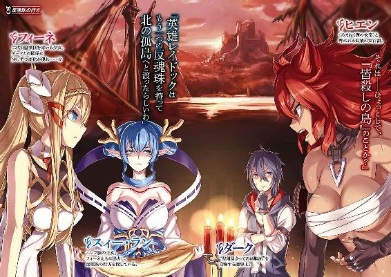

| 聖剣の姫と神盟騎士団 IV (角川スニーカー文庫) | |
| 杉原 智則 | |
| (2014) | |

聖剣の姫と神盟騎士団 Ⅳ
杉原智則

角川スニーカー文庫
本作品の全部または一部を無断で複製、転載、配信、送信したり、ホームページ上に転載することを禁止します。また、本作品の内容を無断で改変、改ざん等を行うことも禁止します。
本作品購入時にご承諾いただいた規約により、有償・無償にかかわらず本作品を第三者に譲渡することはできません。
本作品を示すサムネイルなどのイメージ画像は、再ダウンロード時に予告なく変更される場合があります。
本作品は縦書きでレイアウトされています。
また、ご覧になるリーディングシステムにより、表示の差が認められることがあります。
 序章
序章
ガトーという男がいた。幼少時から寺院での修行に明け暮れていたというが、一説によるとその寺院に預けられた──というより、打ち捨てられた孤児であったという。くわしいことはわからない。彼自身が、寺院での日々より前のことは誰にも話したがらないせいだ。
ガトーのいた寺院はピエタラ教の一派に属していた。大陸で語り継がれている神話に登場する神々ではなく、『生者にして魂は人にあらず』と自称した開祖ピエタラ・イヴナリーを『仏』としてあがめている特殊な宗派だ。ピエタラは生まれつき不可思議な力を持っており、おそらく魔法の一種であろうが、これを宗教と学問に関連づけながら独自の発展をさせた人物としても知られている。ピエタラが『霊力』と称したその力は、代々の弟子のなかでも特に優秀な者たちの手で引き継がれていった。
ガトーは幼少の時分より、学問においても、その霊力においてもすぐれた才を発揮した。若くして霊峰マクリアの総本山へ向かうことを許され、そこで名を知られた高僧から直接の教えを受けた。マクリア総本山の歴史においてもガトーほどの才能は稀であったらしく、指導者としての側面も持つ位に推挙されるほどで、最年少『阿闍梨』の誕生も時間の問題かと噂されていた。
が、のちにガトー本人がこのときの自分を述懐して曰く、
「才能が豊かすぎる人物は、時にその才能がゆえに、常人でも単純に見極められるものが見えなくなる」
ことがあるという。
要するに、難解かつ高度な学問を苦もなく吸収していき、また霊力の芽生えも著しかったガトーは、宗派の教えそのものがなにやら自分には不足しているように思えてきたのだ。その思いは日増しに募って、修行はおろか、もう開祖が著した書物に目を通すのにさえ苛立ちを覚えてきたほどだったから、
（それならばいっそ）
と、ある夜、彼はマクリアを脱走同然に離れた。噂によれば阿闍梨への昇進がかかった儀礼の前日であったという。
その後、ガトーは自らを開祖として新たな教えを開いた。難しいことはなにもない。魂とは不滅のものであり、肉体が死したのちもまた新たな人間に生まれ変わるという、いわゆる輪廻転生を説いて、来世を幸福に過ごしたいなら現世に留まっているうちになるだけ多く施しをせよ、という類のものだ。この教えが大陸の一地方で大きな支持を集めたのは、
「金のある者はなき者のぶんまで施しをせよ。さすれば極楽浄土が近づこう」
という教えがあったせいだろう。
ガトーはまず地方でも高利貸しで嫌われている資産家や、税の取り立てが厳しい権力者などに近づいて、
「このまま金にまみれていては、黄金の呪いに心身を縛られて地獄に堕ちる」
だの、
「すでに死相が顔に出ている。おまえを恨む民衆の思いが生き霊となっておまえを苦しめているからだ」
だのと口から出任せを並べ立てた。詐欺師のやり口ではあるが、ガトーの場合、それをより真実に近づける霊力という武器がある。資産家の持つ金貨に青白い鬼火を灯させて『呪い』を演出したり、権力者に悪夢を見させて『生き霊の恨み』を印象づけたりして、彼らのほうからガトーにすがりつかせた。
彼らはガトーの指示どおり、私財をなげうって民衆たちの生活を救済しはじめたため、結果、民衆の支持をも得ることに成功した。教えを開いてから二年足らずで、ガトーは地方の政治をも牛耳ったのである。
が、これが思わぬ結果を招いた。ガトーの噂は国の中枢にまで届いて、これはただならぬ事態だということになり、王城から使者が放たれた。古き神々をないがしろにするガトーは大罪人であるゆえ城にて査問会を開く、とのことだったが、すでにガトーその人をこそ神仏のようにあがめていた民衆たちがこれに猛反発した。
ガトーの信徒たちのなかでも有力者たちが結託して、ガトーに毎夜のごとく囁きかけた。
「彼らは、ガトーさまの教えを邪教だと決めつけております。きっといいがかりをつけてガトーさまの資産、財産をすべて奪うつもりでしょう」
「いや、あるいは査問会などとは真っ赤な噓で、このまま処刑するつもりだとも考えられます」
「そうなる前に、いっそ──。そう、いっそ国をお取りになっては。ガトーさまがじかに国土を治めたほうが、民衆も喜びましょう。そしてこの国から広く天下を見わたし、新たな布教活動をはじめるのです」
ガトーの教えに感化されて集まっていた人々のなかには、元傭兵や軍人たちも数多くいた。ガトー本人が号令を発せば、さらに大勢の人が集まるだろうという読みもあって、信徒たちは「勝算あり」と踏んだのだろう。
大勢の人間に『国取り』を囁かれているうちに、ガトーもその気になった。わずかな期間で大成功を収めていたことが、彼を有頂天にさせてもいた。地方の村や街をも巻き込んで、彼は国に反旗を翻した。
信者たちはこれを聖戦と称した。地上から悪しきもの、悪しき思考を一掃し、かつ古き信仰をも駆逐して、ガトーの唱える真理にて人類を救済するための戦いだった。
蜂起した当初こそ、理想と義憤とが強風となって火を勢いよく燃え広がらせたものの、しょせんは多勢に無勢で挑む愚かな戦でしかなかった。
ガトー側はその兵力差から考えると奇跡的な勝利をいくらか収めたが、要所要所では常に負けつづけた。そしてその重要な戦いにおいては、必ずといっていいほど敵陣にとある傭兵の姿があった。傭兵は常に目覚ましい戦果をあげ、ガトー軍を退けた。
ガトー本人を含む大本営がついに地方の小城にまで追い詰められたとき、傭兵その人が使者となって、城にまでやってきた。
傭兵の名は、グラジス・エストールといった。
グラジスは国主からの手紙を携えており、ガトーに「降伏を」と迫った。
「おまえさんの罪は免れまいが、降伏した信者たちは命を保障する。勇気ある決断をお願いできないか」
しかし事ここにいたっても、ガトーの信徒たちは自分たちの正義と勝利とを信じていた。そしてこのときにはガトーも「自分こそが勝利し、人類を救済せねばならない」という思いに取り憑かれていた。最後の最後には必ずや神仏の奇跡が起こって、邪悪な敵を聖なる力で打ち倒すのだと信じていた。
「帰るがいい、邪教の衆よ。おぬしの振るう剣などわしには通じぬ。かえって、わしの経文がおぬしの罪を火となってあぶり出し、その心身を業火に包んでしまうだろう」
「そうか」グラジスは暗い面持ちをして頷いたという。「もう一度来るよ。考えを改めておいてくれ」
ひと月後、約束どおりグラジスはもう一度来て、そしてふたたび追い返された。ただしそのときはグラジスについて城を出ていった信者たちも多数いた。
三度目はなかった。城を包囲していた軍勢は波のように押しかけてきた。ガトーはよく戦った。両端が槍のように尖った特殊な錫杖を手に、群がりかかる敵兵を打ち倒し、霊力によって敵を幻惑に落とした。信者たちもそれにつづいて命も惜しまぬ活躍を見せたが、疲れと飢えはいかんともしがたく、次から次に城の守りは突破されてしまい、そしてついにガトーが捕縛されたときには、城は炎に包まれていた。
信者たちはほぼ皆殺しの目にあった。
地下牢獄で聞いた話によれば、先に降伏して城を出ていったはずの信者たちも、例外なく処刑されてしまったという。ガトーは地下で涙に暮れた。そのすすり泣きは時として叫びとなった。魔法を使えぬよう、『魔紋』と呼ばれる紋様を刻み込んだ鉄鎖で身体をぐるぐる巻きにされていたから、その叫びはむなしく地下に響きわたるばかりであった。
彼はすぐには処刑されなかった。長きにわたって苦しめてやろうという国主の思惑があったためと思われる。食事も水も与えられぬまま、やがてガトーの涙は血の色をにじませはじめた。ついには声すら出なくなって、口から洩れ出るのはやはり黒さを孕んだ赤い血液のみとなった。
『目覚め』の兆候であった──、とはこのとき本人には知る由もない。
血の涙と、そして声なき血の叫びが、ガトーの周囲に大勢の気配を呼び集めていた。かつて彼の説法が多くの人々を惹きつけていた場面の再来かに思われたが、しかし集まったのは人間にあらず、すでにこの世で命運の尽きた亡者たちであった。
なにかをひどく恨むもの、誰かを呪わずにはいられないもの、死してなお消えぬ悲しみを背負いつづけるもの──、それら亡者たちの魂は、ガトーの発する凄まじい鬼気に惹きつけられたのだろうか。気づけば、数十もの数がガトーの周囲を漂っていた。
血をにじませたガトーの目は、それら霊魂の姿をありありと見ることができた。そして黒い血を吐いたガトーの口は、生きている者と同様に彼らと対話をすることができた。
当然、霊魂は魔法とはまた異なる存在だ。ガトーはその死霊たちの力を借りて鉄鎖を破り、地下牢獄を脱出することに成功した。
念願の地上に出て夜風を浴びたガトーであったが、しかし、
（どこに向かい、なにをしたものか）
はたと立ち尽くしてしまった。まず真っ先に思い浮かんだのは『復讐』の二文字だ。大勢の民を殺した国主の姿が脳裏にあらわれた。それは一瞬にして抑えがたい熱となってガトーの巨体を駆け巡った。が、すぐに消えた。
風が強かった。びょうびょうと、まるで自分の身体が空洞のようになって、夜の色をした風がそのまま吹き抜けていく思いがした。
周囲を亡者たちの気配が漂っている。耳を澄ませば声もないままに彼らの恨みつらみが聞こえてきそうだ。恐ろしいともおぞましいとも思わず、ただ、
（憐れ）
と思えた。一歩歩めば道の向こうから、さらに一歩進めば壁をすり抜けて、多くの霊魂たちが寄り集まってくる。
（灯りに群がる虫のようにわしにたかってきおる）
ガトーはいったん足を止め、目を閉じた。数秒と経たないうちに涙があふれてくる。ガトーを慕って集まり、『国取り』などと大それた夢を見た人々の顔が脳裏をよぎった。
（復讐など意味がない。目的を遂げたところで、命を取り戻せるはずもない。これからは彼らの菩提を弔って生きていこう。世界中を巡り歩いて、報われぬ魂を引き寄せていきながら、彼らをひとりひとり浄化させていこう）
かすかに、未来への道が開けたかに見えたとき。はっとガトーは目を見開いた。勢いよく振り向く。
「貴様」
とガトーは歯を剝いた。先ほど、復讐など意味がないと考えたのも束の間、道の向こうからやってくるグラジス・エストールの姿に全神経が焼けきれるかというほどに身体が熱くなるのを覚えた。
その怒りを感じ取ったのだろう、ガトーの傍らを漂っていた亡者たちの動きも活発化した。ガトーの怒りはそのまま彼らの尽きせぬ怒りと同化した。あとはその怒りを解き放つ方角を指し示してやるだけでよかった。
「いけ！」
ほとんど無意識のうちにガトーは叫んでいた。歓喜の雄たけびにも似た声をあげて、死霊たちがグラジスへ向かっていく。数は五十を超えていたろう。
さしものグラジスもあわてふためいた。肩に担いでいた袋を地面に落とし、剣を手に取ったが、実体のない亡者相手では刃がすり抜けていくばかり。一方的に痛めつけられた。あるものは手足に歯を立て、あるものは見えざる腕でグラジスの首を絞めあげて、あるものはグラジスの心そのものに取り憑こうとした。
「やれ、やれ、やれ。殺して、そ奴もおぬしらの仲間にしてしまえ」
ガトーは夢中で叫んだが、それもわずかばかりのことだった。グラジスは一回観念したかのように目を閉じると、すぐに開いて、ガトーとの距離を一歩ずつ詰めはじめた。無論、死霊たちが追いすがって攻撃をかける。と、
「なに!?」
ガトーは目を剝いた。いつしか、グラジスと死霊たちの立場が入れ替わっていた。すなわち、死霊たちによる攻撃のほうがグラジスをことごとくすり抜けていくのだ。ガトーは啞然となってあとずさった。
「なぜ、なぜだ。なぜ」
「亡者たちが現世で影響力を持つためには、生ける者に存在を認識されなければならない。それがこの世と彼らをつなぐわずかばかりのつながりだからだよ。よもや獣は人の霊を見まい？ 人が人の霊を見るのは、感じるのは、そこに『ある』と思うからだ。したがって、おれが『ある』と思えばあるし、『ない』と思えば、この世に彼らはないも同然だ」
ガトーはほとんどぽかんとなって、近づいてくる傭兵の姿を正面から見つめた。一刀の距離にまで詰められた。あとは剣のひと振りで、ガトーの命も終わりを告げるかに見えた。が、
「追っ手がすぐ近くまで来ている。来い、こっちだ」
グラジスはなぜかガトーの手を引いて、城下町を駆け出していた。「や、やめろ」と声をあげつつも、これもなぜかガトーは強く抗うことができなかった。
やがて川のほとりまで来た。朝が近い。空と川面とが乳白色に染まりつつある。グラジスは雑草の伸びた川岸に寝転がった。
「なぜだ」と、そんな彼の姿を見おろしながら、ガトーは聞いた。「なぜ、わしを逃がす。貴様こそ、国主から差し向けられた追っ手ではなかったのか」
「追っ手じゃないよ。おまえを逃がすためにわざわざ危険な道を選んだわけでもない。なぜなら、おれも追われていたからさ」
「な、なに？」
「降伏した信者は殺さない、という約束があったから、おれは使者の役目を引き受けた。なのにその約束を破られた。だから、まあ──腹いせに、国主が大事にしていたお宝を盗んできてやった」
いうと、肩に担いでいた袋をガトーのほうに投げて寄こした。なかには珍しい巻物や遺跡から発掘したと思われる古代の金貨、それに宝石で飾られた装飾品などが詰め込まれていた。
「怒りくるった奴は、財宝を奪い返すため、おれひとりを兵に追わせるだろう。おまえの信者たちのなかには戦いの途中で逃げたり、街や村に潜伏していたりする者も多いはずだが、彼らを狩り出すどころではなくなるさ」
ガトーは声を失った。この男は何者だ、と思った。勝者の立場であり、望めば褒美も与えられる立場でありながら、残党狩りを阻止するため、あえてこの国丸ごとを敵にまわしたという。
「き、貴様」ガトーはわなわなと震える指を、寝そべっているグラジスに突きつけた。「貴様は敵だろう。貴様はその剣で、わしの信徒たちを幾人も斬り倒した。その罪が、いまさら許されるとでも思っているのか」
「許されるとも許されようとも思わない。ただ、もう雇い主との関係は切れたので、おまえと敵対する意味がないだけだ。おや、来たな。休憩は終わりだ」
やにわにグラジスは立ちあがった。あわててガトーも身構えたが、なんとグラジスはその場で甲冑を脱ぎはじめた。甲冑どころか服さえも脱いで、ほとんど下穿き一枚になって、鞘におさまったままの剣を手にした。じゃぶじゃぶと水を搔きわけながら川に入っていく。
遅ればせながら、ガトーも迫ってくる足音の群れに気づいた。財宝を盗んだグラジスを追ってか、あるいは牢獄を脱出したガトーを追ってか、国側の兵隊がこちらを見つけたらしい。
「ま、待てっ」あわててガトーが声をかけた。「この袋はどうする？」
「くれてやる」
とグラジスはにべもない。ガトーもあわてて服を脱いだ。と、
「なかに巻物が一本入っていたろう。あれだけは取っておけ。王の家系図だよ。王位の正統を示すもので、あれがこっちの手になければ追ってくれないぞ」
ガトーは舌打ちして一本の巻物だけを袋から抜き取ると、グラジスのあとにつづいて川に入った。
二人、朝陽をまばゆく反射しはじめた川のなかを泳いでいく。背後で兵隊の怒鳴り声が聞こえてきた。
「おっ」
とグラジスが声をあげたのは、近くの水面に矢が突き立ったからだ。
「急げや急げ」
どことなく楽しげにグラジスはガトーをあおった。
（こ奴）
たくましい裸の背中を追いかけながら、ガトーは驚くやら呆れるやらだ。毒気を抜かれたかのように、グラジスへの敵意、殺意はほとんどが抜け落ちてしまっていた。とともに、
（わしの見ていた世界とはなんだったのか）
いったん水中に沈んで、矢の狙いを逸らしながらガトーはそんなことを考えていた。
この数ヶ月、足場を確実に積み重ねてきた。もう少しで天上の神々にまで手が届くと本気で信じていた。が、いざその足場を壊され、地面に叩き落とされたとき、存外その高さが大したものではなかったと思い知らされた。子供たちがちっぽけな遊び場を巡って縄張り争いをしているのとさほど変わらなかった。
（わしは、世界のなにを見ていたのか。そしてこの男は、どのように世界を見ているのか）
ただの傭兵風情だ。金を支払ってくれる側について、恨みもない『敵』をためらいもなく殺し、かと思えば、命懸けでその『敵』を助けようとする。いわば、取るに足らない小人。そのはずだ。
だというのに、ガトーはこの『小人』が気にかかった。この男の背中につづいていく自分が決して嫌ではなかった。
（見てやろう）
とこのときガトーは決意した。
（死者を招いて、その嘆き、悲しみ、憎しみを浄化させてやりながら、わしはいままでとはちがう目でこの世界を見てやろう。そのためには、いままでのわしと同じではいかん。根本的な部分で異なる人間についていき、その人間の目を借りねばならん。いまは、この男だ。この男についていく）
一章 戦士の休息は短くて
１
ここのところ、カーラーンの王エルドラン六世は忙しさに追いたてられているという噂だった。
理由のひとつは、まずジャウォールとの戦が膠着状態に陥りつつあることにある。そこから派生した反乱が各地で起こって、その鎮圧に手がかかってもいた。
「占領地における見せしめの処刑はもっと人数を多く、そしてもっと残忍におこなわねばならんようだ」
エルドランは朝食の席でぶつぶつとひとり言のように口にしたという。
「しかしただ数多く殺せばいいというわけではない。処刑する人間の選別が大事だ。サランボーの駐屯軍にはこのセンスが欠けていた。だから日もおかずに反乱が起こって、さらに余計な人間数百人を火のなかに投じ入れねばならなかったわけだ。より的確、より速やかに土地を支配したいなら、それは殺す人間など少ないほうがいいのは確かだよ。だからこそ、こうした選択眼が必要になる」
エルドランは朝から多量に牛乳を飲む。専用のグラスを傾け、喉をごくごくと鳴らしてから、
「その上で、土地に根づいた人間を補佐役にして長官を立てるのだ。この補佐役の選別がまた煩わしい。わが国に疑いのない忠誠を抱き、なおかつ土地の人間に多少ならず馴染みのある者でなければ。どうやらわが国にはこの手のセンスにも欠ける者が大勢いるようで、この前はミスルト、その前はアダンの副官が毒殺されている」
察するに、
「おれの配下はあほばかりだ」
と口にしたかったのだろう。
エルドランは、王自身も所属する黒衣騎士団の配下を各地に派遣した。ちなみに騎士団とはいうが、王以外にこれといった爵位を持つ者はいない。ほとんどが黒魔法士で構成されているためだ。
家臣たちが頼りない以上、その『騎士』たちから届けられる情報を頼りに、王自ら各地の人選をおこなわねばならなかった。
エルドランがそんな愚痴をこぼしてからおよそ半月後の、とある陽暮れどき。
カーラーン首都カラ・コルムの宮殿は何層にも増築された、一種奇怪な外観をした建物だ。歴史の長さを物語っているが、現在のエルドラン六世が周囲への覇権の野望を露わにした時点からさらに増築、改築が繰りかえしおこなわれるようになって、古くから城勤めをしている者でも建物の全容を把握するのは難しいというほど。
先月、新たに建て増しされた階層には庭園つきの巨大な露台が築かれていたが、そこへ大きな羽ばたきが三つ連続して聞こえた。
黒ずんだ褐色の羽根を散らしながら舞い降りてきたのは、三頭のグリフォン。一見すると、牛や馬をも下肢で摑んでらくらく飛びあがれそうなほど巨大な鷲だが、その下半身が獅子の形状をしている。現在のカーラーン領土中央を斜めに割った山脈に住まう怪物だ。そのグリフォンが、それぞれの背中に人間を乗せながら、鳥の前肢と獣の後肢とで露台を踏みしめた。
すでに報告を受けて出迎えていた兵たちが、グリフォンに鎖をかけようとするのを、
「よいよい、触るでないわ」
いち早くグリフォンから飛び降りた男が怒鳴った。
「わしのイダテンは繊細ぞ。馴れぬ人間が近づいたらそれだけで怯えてしまう。それに頭もいい。わしがひと声かけておけばきちんと空で待っているから大丈夫じゃ。......というておるに、貴様！」
突然声を撥ねあげさせると、男は手にしていた長い棒を振るった。グリフォンをはじめて見たのか、若い兵士のひとりが躍起になって鎖をかけてこようとしたのだ。その兵士は棒で頭を打たれて昏倒した。
「相変わらずでいらっしゃいますな、アグロヴァ将軍」
兵たちが騒然とするなか、ひとりの巨漢が歩み出てきた。以前までラグナ郷攻略の司令官を任されていたドレーム将軍だ。
「わしが止めておかねば、こ奴はいまごろイダテンの胃袋のなかよ」
「どのみち、命を失ったのは同じことのようですがね」
ドレームは倒れた兵のほうをうかがった。口から血混じりの泡を吹いて、ぴくりとも動かない。アグロヴァは苦虫を嚙み潰したような顔になって、
「イダテンが血と肉の味に猛っておれば、犠牲者はこ奴だけではすまなかったさ」
そういってから、自分の言葉が言い訳じみていて面白かったのか、一転して空に噴きあがるような笑いを放った。
アグロヴァは細い体格をした老人だった。毛髪はなく、眉と髭は白い。顔つきは柔和そのもので、嬉々として孫の世話を焼いているのがいかにも似合いに見えたが、重甲冑を苦もなく着こなしている上に、先ほど見せた神業のごとき棒の扱いからわかるとおり、いまだ現役で戦場を駆ける武人である。
いや、ただ単に武人というのではない。このアグロヴァ・オレット、カーラーン軍の一翼を担う『将軍』でありながら、カーラーン宮廷においては『公爵』の地位を授かっており、またマクール地方においては『王』とすら呼ばれる人物でもある。
それというのも、彼はもともとカーラーンと隣接していた王国ダル・マクールの統治者であったからだ。グリフォンの住まう山脈ももとはダル・マクールの領地であり、アグロヴァはこのグリフォンたちを領内で養殖、そして調教することで、世にも珍しい空中騎兵部隊を編制。その立体的な機動力は周辺に恐れられていた。
そしてアグロヴァが王を名乗っていたころのカーラーンはというと、歴史とともに衰退する一方の小国でしかなく、もしアグロヴァがその気になりさえすれば、いつでもダル・マクールの一領土とすることもできたろうが、現在はむしろその逆となって、カーラーンのほうがダル・マクールを併吞している状況にある。王であったはずのアグロヴァもいまやカーラーン軍における一将軍の身。しかし彼の表情や態度には、隷従させられたことへの恨み、怒り、あるいは卑屈さなどは微塵も感じられない。
ほかの二頭のグリフォンからもそれぞれ仲間が飛び降りたのを見届けると、アグロヴァは口笛をひとつ吹いて、手で大きく弧線を描いた。兵たちがあわてて退くその前で、三頭の獣は力強く翼をはためかせて、ふたたび陽暮れどきの空へと舞いあがっていく。
「まったく」それを見送りつつ、アグロヴァは不機嫌な顔をした。「あとひと月もすれば、イダテンの爪にジャウォール王の首をぶらさげて帰国できたものを。少し戦線が停滞したくらいで引き返すよう命じてくるとは、エルドラン王も性急に過ぎるな」
「王にはお考えがあるのでしょう」
ドレームとともに歩き出し、城の回廊へと入る。ドレームはいったん後ろを振り返り、影のようについてくる二人のグリフォン騎兵を見やった。
奇妙な風体だ。鎖かたびらと甲冑を全身に着込んでおり、なにか疫病でも患っているのかというほど、外気に露出した部分がわずかほどもない。屋内に入っても兜を外さず、おろしたきりの面頰には目の位置に細い切れ込みが入っていたが、おそらく至近距離で覗き込みでもしない限り、その奥に人間らしい眼光を見ることはできないだろう。
甲冑はいずれも一色に塗装されている。片方が青、もう片方が赤。ドレームは、
「あとひとり、『黒』はどうなされた？ よもや、討ち取られたとも考えられませんが」
「ヴァランか？ あ奴が討ち取られるものか。ただ、グリフォンを失ってな。新たな相棒を求めていまごろ山中で野生のグリフォンを追っているだろう。最初から飼いならされた獣は性にあわぬという男でな」
どこか、孫を自慢するような口ぶりでアグロヴァは笑った。が、すぐにその笑いに込められた意味を変えて、アグロヴァは横目でドレームを見やった。
「しかし、遠くジャウォールの戦線にいても、そなたの活躍は聞こえていたぞ。結局、ラグナの谷を踏み越えることはできなかったそうだな」
「面目次第もございません」
「聖剣団、それほど強いか。一時は〈竜殺し〉の若者を味方に引き込めたようなことも聞いていたが」
「わたしの部下の失策で、それも無駄に終わりました」
ドレームはさっと右半身を後ろに引くような格好になった。失った右腕を隠すための仕草だったが、
「部下の失策は、おまえの失策よ。わしをはじめ、ジャウォールから主だった将兵が引きあげられたということは、この先大きな配置転換があるわけだ。どうもエルドラン王はジャウォールはひとまず足止めしておければよいという考えのようだから、そのていどの仕事ならそなたに任せて差し支えなかろう。となると、ラグナ郷攻略はわしの仕事になるかもしれんな」
面と向かって侮蔑されたに等しい扱いを受けつつも、ドレームは返す言葉を持たない。この、どこか山賊の首魁めいた雰囲気のある猛将にしては珍しいことだ。
と──、いままでものもいわず、まるでゴーレムのように黙々とついてきていた二人のグリフォン騎兵がそのときすばやく動いた。赤と青、それぞれの色をしたつむじ風と化して、アグロヴァの左右に並ぶ。ほぼ同時に振りかざした蛇矛が、突如として彼らの前へと駆け込んできた人物の首もとを捕らえていた。
「まあ待て、サム・ソォーン、アド・オゥン」アグロヴァは驚きもあわてもせず、やんわりとした口調でいった。「刺客にあらず、若き小姓よ。大方エルドラン王の遣いであろう」
アグロヴァ・オレットの指摘したとおり、蛇矛を首もとに突きつけられながら真っ白な顔をしているのは齢わずかばかりの少年。突然のことに悲鳴も発せられないようだった。
「何用だね」
少年はアグロヴァに促されるまま、用件を述べた。
「国王陛下がオレット将軍をお呼びでございます。いますぐ宮殿三階の東翼にある私室まで足を運ばれたし、との仰せで」
歯をがちがち鳴らしながら、しかも舌を何度ももつれさせるものだから、それだけの用件を伝えるのにずいぶんと時間を要した。
「ふん」
アグロヴァはまるで食事のあとのように、唇を閉じたまま舌で上下の歯を舐め取るような仕草をして、ふたたび歩き出した。二人のグリフォン騎兵も矛をおさめて、その後ろにつづいていく。置き去りにされた小姓が次の瞬間卒倒したが、誰も気に留める者はなかった。
「年長者を遠路はるばる招いておいて、しばし休ませてやろうという気遣いもないか。やはりエルドラン、焦っておるようだな」
「将軍、どちらへ？」
ドレームが驚いたように声をかけたのは、いまさっき王からの言伝を耳にしたばかりだというのに、アグロヴァが足を向けた方向はあきらかに指定された場所と異なっていたからだ。
「湯を浴びてくる」とアグロヴァはあっけらかんとしたものだ。「坊やもそれくらいの時間は許してくれるだろう。旅塵にまみれたままでは逆にご無礼にあたるのでな。ああ、もちろんご寛大な陛下のこと、そのあと一杯の酒で喉を潤すくらいの時間も計算のうちだろうて」
ドレームは声もない。どころか、猛将勇将と持ちあげられることの多い彼が、先ほどの小姓同様に青ざめている。現在のエルドラン六世がいかに恐れられているかを証明した形だが、アグロヴァ・オレットは顔色を失ったドレームを一瞥すると、にやりと笑って、
「さっきの話だが、聞いておるぞ。失敗した部下というのは、あのエンデコ家のご長女らしいな」
「は？......ああ、はい。そのとおりです」
「その麗しき女性はいまどこに？ まだおまえの配下にいるのか」
「い、いえ。陣を引き払うと同時にハスターの役職は解きました。いまは、どこにいるのか、さて」
ドレームは慎重に言葉を選んでいた。彼も思い出したのだ。『エンデコ』の姓が、ダル・マクールの元国王にとってなにを意味するのかを。
「ふむ」とアグロヴァは白い顎髭を撫でさすって、「あのハスターというご息女、命に代えても武家を再興させようという心意気を持っていた。実に胸を打たれる話だ。が、わしは自分の部隊に女を組み込もうとは思わんな」
会話の流れが読み取れずにドレームが返事をしかねていると、アグロヴァは突然いい思いつきをしたというように手を叩いて、
「そうだ、確かハスターには弟が──すなわちエンデコ家の嫡男が──いたはずだな。姉さえもその名声を地に落としたいま、今度はその弟のほうがエンデコ家の再興を胸に誓っておることだろう。ドレーム、ひとつ早馬を用立ててくれんか。意気に燃える若者をわしは放っておけぬ性質でな」
ドレームははっと息を吞んだ。にやにやと笑っていながらも、アグロヴァの目にはなにやら粘着性の火が青々と燃えている。
（この御仁、エンデコ家への恨みを隠そうともせぬ）
ドレームがもっとも衝撃を受けたのは〝そこ〟だ。通常、因縁のある相手のことは──周囲でいまなお噂の数々が囁かれるほどのものならなおさらに──なるべく話題から遠ざけようとするものだ。それを、アグロヴァは正面切って口にする。『あの一件』で名声と地位を失ったのはむしろアグロヴァよりもエンデコ家のほうであるのに、いまだその恨み、憎しみが晴れぬとばかりに、復讐心を言葉の端々にちらつかせている。
先ほどエルドランをぞんざいに扱った態度もあって、ドレームはいよいよ、この、かつて王であった一将軍に底知れぬものを感じていた。
２
ダークは冒険譚を語るのが好きだ。虚実取り混ぜて、というより、もう自分の活躍ばかりをこれでもかというほど粉飾してしゃべる。しゃべりまくる。その内容の半分ていどでも真実なら、ダークなどはとうに聖剣団の部隊長にまでのぼりつめて、カーラーンの軍勢などたったひとりでわけもなく撃退しているだろう、というほどに。
が、今日のダークはどこかちがう。場所は薄暗い部屋のなか。いつも得意満面にしている顔はなぜか物思いに沈んでいるみたいで、語る声のトーンも大人しい。ついでに語っている相手もいつもと異なっていた。飲み屋で給仕役をしている若い女性や、とにかくもう飲んで騒げればなんでもいいから、酒の肴として聖剣団の活躍話を欲している酔漢たちなどではなく、まだ年端もいかない子供たちだった。
固唾を吞んで見つめる彼らを前にして、ダークはつい最近経験したばかりのガクレオ城での冒険を語っている。奇妙といえばこの語り口調がいちばん奇妙だ。たとえば同じ話を飲み屋でするときなど、
「おれとフィーネは城内を進んだ。十字路にいき当たったので、まずは右方へ。登り勾配になっていく道の途中、落とし穴が口を開けたが、これは予想していたとおりなので回避することができた。すると道の向こうから、鋼鉄製の蜘蛛が二体に、騎士を象った大きな人形が三体近づいてくる。フィーネは腰から剣を抜き払い、おれは炎の魔法でこれを迎撃することに決めた」
と語るだろう。実際のところは、落とし穴には危うく引っかかりそうになったし、ダークに炎の魔法などは使えない上に、そもそもあらわれた敵と戦うのは常にフィーネひとりの役まわりだったのだが、まあこれはおく。
子供たちを相手にしている現在、なぜかダークは語りかけるのではなく、『問いかける』。たとえば、
「きみたちは城内の薄暗い通路を歩いていく。すると十字路に差しかかった。まっすぐこのまま進むか、右へ向かうか、はたまた左か。さあ、どこへいく？」
といった具合。子供たちは顔をいったん見あわせて頭を悩ませる。今回は偶然にもダークと同じ『右』を選択した。となると、そこには落とし穴が待ち構えている。回避できるかどうかは冒険者の技量と運次第であり、そしてこの場合の冒険者とは、ダークのまん前に座っている五人の子供たちのことを指していた。そう、この話の主人公はダークでもフィーネでもなく、話を聞いている子供たちである。ダークは辿った足跡をそのまま活躍話として語るのではなく、自分の冒険を子供たちに『体験』させようとしているのだ。
落とし穴を発見できるかどうか、もし発見できずに罠にかかった場合、どれほどの手傷を負うのか。こういった判定にはサイコロを使う。今回はごくごく単純に、一から三までの数字が出れば穴に落ちたことにするし、四以上が出れば回避できたことにする。二人の子供が罠にかかり、手傷を負った。子供たちは全員紙を持っており、それぞれ数字が書かれてある。いわば冒険者の『体力値』だ。罠にかかったり、敵との戦いで傷を負ったりするとこの数値が減少していく。ゼロになると、それすなわち冒険者の死を意味する。
今回はかろうじて軽傷で済んだ。子供たちが安堵のため息を洩らすのをよそにダークはにやりと笑う。
「安心するのは早いぞ。通路の向こうから、例の鉄製蜘蛛二体と騎士人形三体が迫ってくる。おや、トムはもう体力値が三点しかないじゃないか。それでも戦うのか？」
「に、逃げよう」トムが青い顔をして他の子たちにいった。「おれ、昨日も『死んだ』んだ。小遣いは使い果たしたし、もうよみがえらせるお金はないんだよ！」
「おれの体力もやばいしなあ。いったんさっきの場所まで戻るか？」
ほかの子も同調しそうになったところに、
「いいえ」ただひとり凛と胸を張ったのは、一行のなかの紅一点だった。「わたしはまだ体力に余裕があるわ。トムは後ろに隠れていて。さっき手に入れた『炎の杖』のアイテムがあったでしょう。大事に持っていても無駄になるだけだし、ここで使おうよ」
てきぱきと指示を下すのに、トムもほかの子も従った。
子供たちはいよいよ戦闘に突入する。勝敗の判定も運の神に──すなわちサイコロに委ねることとなる。子供たちが出目にそれぞれ一喜一憂するなか、ダークは彼らの様子を微笑ましく見つめている。
（だいぶ、この『ゲーム』に慣れてきたな）
ダークが考案した遊びだ。つい最近にではなく、生まれ故郷にいたときから同年代の子らを集めて興じていた。以前、彼は愛読書として『百の迷宮物語』なる本の名を挙げていたことがあるが、発想のもとはこの書物にある。書物には、著者が実際に踏破してきた迷宮の地図が数多く添付されており、ダークは、これらの地図と本に書いてある著者自身の経験談を参考にして、同年代の子らにまるで物語でも読み聞かせるかのように『迷宮探検』の話をした。
それを聞き手が参加できるゲームにまでアレンジしたのはダークの裁量である。ダークの立場はいわばゲームの『親』であるが、このゲームに厳密な意味での勝敗はない。ダークはあくまでも物語の語り手であり、子供たちとゲーム世界をつなぐ橋渡し役でもある。
ダークはプレイヤーのための冒険の舞台を用意し──迷宮の地図をゲーム用にアレンジしたり、子供たちを脅かす怪物たちや、ゲームの『得点』となる金銀財宝をどこに配するか、頭を悩ませたりしながら──、いったんゲームがはじまると、その探検の導き手となってプレイヤーを楽しませる。
ダークの提案したこのゲームに、子供たちは夢中になった。
家や農場での手伝いを終えた子供たちは、皆、夕暮れになると、なけなしの小遣いを握りしめて聖剣団宿舎へ向かう。
そこで彼らは冒険者となった。親の鉄槌に怯える子供は消え去って、代わりに恐ろしげな敵兵や怪物にも負けぬ屈強な戦士へと変貌を遂げた彼らは、退屈な日常を空想の外へとすっかり追いやって、心躍る冒険を楽しんだ。
（よし、そろそろルールを複雑化させてもいい頃合いだな）
ダークはほくそ笑んでいる。このゲーム、慣れてくれば、たとえば冒険者たちの個性を『体力値』以外にも多くの数値で表現するなどして、ルールをより複雑化させられる。それは子供たちをより楽しませるばかりでなく、ダーク自身の利益にもつながるのだ。
（いまのところ、冒険者が死んだ場合によみがえらせるための『代価』を要求しているだけだが、たとえば、このゲームのためだけの『お店』を用意して、戦闘で有利になる武器やら、冒険の途中で役に立つアイテムやらを実際のお金で売るようにすれば、さぞ儲かるにちがいないぞ）
ダークの手もとにはすでに『お店』の試作データを書き込んだメモがある。『体力値』を回復させるための薬がひと瓶銅貨一枚、戦闘の際に振るサイコロに数字を加算できる魔法の剣が銅貨三枚......といった具合。
「要するに」
と誰かがダークの後ろからそのメモを覗き込みながら声をあげた。
「ゲームをより楽しみたい、ゲームのなかでより活躍したいという純粋な子供たちの心を利用して、ひと儲けしようってわけね」
「馬鹿者」ダークはほくほく顔でかぶりを振った。「純粋な心を利用して、とは人聞きの悪い。こういうのは『追加コンテンツ』といってな、娯楽をより楽しくさせるために大切な要素なのだ。なにより教育にいい。この世知辛い世のなかを上手に生き抜いていくためには、こうした自分への投資が必要になると知ることになって......」
「愚か者！」
邪悪な魔道士というのは、物語のなかでも、そして現実のなかでも英雄に討伐される運命にある。
今回、その英雄役を担ったのは、サイコロを握りしめた子供たちにあらず、ダークの背後から箒を振りかぶったヤミーであった。
「最近仕事サボってなにしてるかと思えば、こんなところで子供たちのお小遣いをせしめてたってわけ。ジョアズお婆さまが聞いたらさぞお喜びになるでしょうよ」
「ま、待て、ヤミー。いや、待ってくださいヤミーさん」後頭部にでかいこぶをこしらえたダークが涙目で言い訳をする。「集めたお金は、このゲームでよりよい『得点』を獲得した、つまり誰よりも多く怪物を狩り、誰よりも多く財宝を集めたプレイヤーに還元するつもりでいたのです」
「信じられるか」
ヤミーはその一見大人しげな風貌にも似ず、ダークに対しては威勢がいい。箒を魔法の剣のように構えて冷たくいい放つ。
「ほ、本当ですったら。それに仕事をサボってなんかいませんよ。ぼ、ぼくの仕事は、イアンやハスターが代わってくれたのです。聖剣団に慣れるために、ひとつでも多くの仕事をこなしたい、といじらしいことをいうので、ぼくもつい甘えてしまって」
「なにが、つい、よ。どうせあんたが押しつけたんでしょ。大体、あの人たちのことだってわたしは認めてませんからね。フィーネさまがベリンダから帰ってきたと思ったら、妙な人たちがついてきて、『今日から聖剣団の見習いです』っていわれてもね。大体、あの人たち、どっちも元はカーラーンの軍人なんでしょ？」
「それをいうなら、ぼくだって元はカーラーンの兵士じゃありませんかあ。そのぼくが身を削って谷のためにいままで働いてきたっていうのに、生まれや立場で人を差別するなんていけないなあ」
今日、明日で、立場をころころと変えるダークはともかく、イアンとハスターは確かにカーラーン、つまりはこのラグナの谷に幾度となく侵攻を繰りかえしている軍事大国に所属していた軍人だ。イアンといえばこの谷にも何度かあらわれてフィーネに決闘を挑んでいた男だし、ハスターはハスターで谷にスパイとして忍び込んだことがあるというし、「今日から味方だ」といわれたところでヤミーがにわかに信じられないのも無理はない。
「それにあの二人、なんというのか......ちょっと怖いのよ」ヤミーが声をひそめた。「イアンって人は、いつもいつも、掃除中だろうが調理中だろうが『修行だ修行だ』なんて大声あげて、うるさいくらいに張りきってるし、ハスターって人は、その、あれ、へ、へ、へ......」
「蛇？」
「そ、そうよ、そのお蛇さんが袖口から時々『こんにちは』してるのよ！」
「変か？」
「変よ、変でしょ、変に決まってるでしょ！」
「まあ細かいことは気になさらずに」ダークは首筋をポリポリ搔きながらいつものペースを取り戻しつつある。「大体、二人とも将来有望な戦士だし、見た目だって悪くない。聖剣団──この場合、『おまえの理想とする聖剣団』──にはふさわしかろうが。が、ここで忠告しておく。おまえの怪しげな妄想におれを巻き込むなよ。イアンとおれとをカップリングさせて、日夜、師弟関係で組んず解れつ、なんて考えただけで反吐が出る」
「誰が！」
などとやり取りをしているうちに、
「この調子じゃ、今日はもう終わりだな」
「なんだ、いいところだったのに」
子供たちは欠伸をして、それぞれ帰り支度をはじめた。彼らがこの『ゲーム』を開始して、つまりは宿舎に通い詰めるようになってから二週間と経たないが、聖剣団のこうした事情には詳しくなっているらしい。それぞれ「じゃあ」「またな」と声をかけあって帰宅していくなか、
「ダーク」
ひとりがダークの前で立ち止まった。『敵』との戦いで勇気を見せた紅一点の子だ。年齢は八、九歳ごろか。そばかすを散らした真っ白な顔を、心なしか紅潮させて、
「ダーク、凄いね」
「ん？」
「あの罠とか敵とか、全部本当にあったことなんでしょ？」
ゲーム中での勇ましかった態度が信じられないくらい、女の子の語る声はぼそぼそと細く、表情や身体つきもいかにも弱々しい。
「ああ、ゲーム中の出来事は実際におれが経験したことばかりだからな。ただのつくり話とはリアリティがちがう」
「うん、だからダーク凄いな、って」女の子は小さく笑った。「わたし、ゲームのなかでも怖いのに、ダークは本当に戦っているんだもんね。凄いなあ」
「お、おう」
普段、誰よりも褒めてほしくて、誰よりも自分の活躍を認めてほしがっているダークであるが、こうもまっすぐにいわれると、さすがに面映い気持ちがして目を逸らした。
「じゃあ、また明日。ヤミーさん、あんまりダークを怒らないであげて」
最後まで細い声でいうと、女の子も宿舎内から出ていった。ダークが「聞いたか？」というようにヤミーを見やると、彼女は唇を尖らせたままそっぽを向いている。年端もいかない女の子に『怖いお姉さん』扱いをされたのが内心ショックらしい。
「彼女、最近谷に来た子じゃない？」
「ああ、ジェニーだ。ログエルの街に住んでたけど、両親が離縁して、母親が生まれ故郷のここへ娘をつれて帰ってきたのさ」
引っ込み思案の性格で、最初は同年代の子らの輪にも加われず、またたとえ遊びに誘われても、彼らの後ろにくっついて歩いているだけ、といった感じが否めなかった。彼女をゲームに引き込んだのはダークだ。あのゲーム、プレイヤーが活躍できるかどうかは、実のところ『親』役であるダークの裁量によるところも大きい。なにしろゲーム世界を運営する神のごとき立場であるので、ひいきしようと思えばそのプレイヤーにだけ弱い敵をあてがったり、強い武器を発見させたりということが可能なのだ。
まあその辺を露骨にやりすぎると、ひいきした子が逆にほかのプレイヤーから嫌われる羽目にもなるのだが、そこは、「聖剣団切っての頭脳派」を自認するダークだ。彼女がゲームに馴染めるよう上手いこと誘導したおかげで、いまやゲーム内の架空世界において、ジェニーは皆のリーダーシップを取るまでにいたっている。
と、窓のほうを向いていたヤミーの目が細くなった。小声でダークの名前を呼んで手招きをする。ダークは及び腰になって、
「な、なんだ、また箒の一撃はごめんだぞ」
「馬鹿ね、ちがうわよ。あれを見て」
声をひそめたヤミーの雰囲気に釣り込まれてダークもそっと窓辺に近づいた。カーテンの隙間から見おろした街路に、帰宅していく途中の子供たちが見える。と、宿舎のある通りに面した角に、何人かの男たちが突っ立っているのも確認できた。三方向に二、三人ずつ。全員が鋭い目つきで宿舎のほうを見ていたが、それぞれの帰路をいく子供たちが通りかかると、彼らは途端に立ち話でもしているような態度を取り繕った。
「なんだよ、あのあからさまに怪しい連中は。まさか人さらいの類じゃねえだろうな」
「いいえ、フォルテのところの兵よ」
ダークと並んだヤミーが、カーテンの隙間から街路を見おろしながらいう。フォルテはラグナの谷における軍司令官をつとめている男だ。
「馬鹿な連中。谷に住んでいる人間なんて、みんな顔見知りみたいなものだから、どんな目立たない格好したって正体はバレバレなのにね」
「で、そのフォルテのおっさんところの兵隊が、なんで宿舎を見張ってるんだ？」
「ひとつは、あんたのせいね」
ヤミーがいうと、ダークはきょとんとなって自分を指差した。谷に来てからそろそろ四ヶ月ていどだが、その間ずっと谷のために身を削って戦ってきたという自負がある。谷の人間に感謝こそされても、恨みを買う筋合いはない。
「以前、ラッセルさまが谷にまで攻めのぼってきたとき、妙なことを口にされたそうね。『団長を渡せ』って。グラジス団長といえば、大きな作戦のために谷を留守にされているはずだから、フォルテにはその意味がわからなかったみたいだけど、そのとき、ダーク、あんたがグラジスさまの偽物を使ってラッセルさまの気を引いたんでしょ？」
「あったな、そんなことも」ダークはふっと息をついて前髪を搔きあげた。「英雄物語の主役もかくやという機転を利かせて、ラッセルという脅威を谷から遠ざけたのだったな。いわれるまで忘れていたよ。なにしろ谷に来てからこっち、激戦に次ぐ激戦だったので、いちいち過去の栄光を覚えてなどいられないが、いやしかし、いま思うに、なんという頭脳の冴え──」
「ともかく、それでフォルテも不審に思ったようね。聖剣団はなにかを隠しているんじゃないか、って。グラジスさまのことについて、世間にはいえない秘密を抱えているんじゃないか、って」
（そういうことか）
じっと見つめてくるヤミーから、今度はダークがそっぽを向きたい気分になった。
ラッセルとのやり取りをフォルテに見聞きされたのは確かにまずかった。グラジス・エストールという稀代の英雄が、敵の黒魔術によって魂を奪われてしまい、その肉体だけが谷に安置されている──などというとんでもない事実は、聖剣団の面々しか共有していない。もうひとり、例外としてログエル国王子もいるが、こちらはこちらで事情がこんがらがっているのでいまはおく。
「どうも、フォルテはそのことをウーサーに報告したみたいね。ウーサーはウーサーで自分が除け者にされてるのが我慢ならない性質だから──普段、周りの老人たちからいいように扱われて、いい加減な情報しか知らないくせして──、すぐにこの事実を突き止めねばならない、なんて憤慨したみたい」
（ウーサー？）
はて誰だろう、聞いたことがある気がしないでもないが──、とダークが頭をひねっていると、
「あんた谷に来てから結構経つでしょ。聞いたことないの？ 谷の支配者よ。英雄ラグナの末裔で、代々谷を取り仕切ってきたの。で、いまは九代目当主、ウーサー・ラグナ・シュトルンが、一応、谷における政治の中心なわけ」
「はあ」
「で、そのウーサーが、誰ぞ聖剣団のひとりをつれてこい、なんて命令したのよ。時期が悪かったわ。どうせあのスケベ男のことだから、なにか理由をつくってフィーネさまに会いたかったんだろうけど、フィーネさまはそのとき、単身ベリンダ国で雄々しく戦われている真っ最中」
「おれもいたがね、ちなみに」
「谷にいらっしゃったのは〈あまねく海の女帝〉ヒエンさまだけだった。で、ヒエンさまもあのとおりの性格でいらっしゃるから、『うるせえ、用があるならおまえのほうから来い』って具合で、話はこじれるばかり。ウーサーなんて卒倒しかかって、『力ずくでもつれてこい』なんて無茶な命令をしたって聞くわ。でも、フォルテは無能でも、決して馬鹿じゃない。そんなことは不可能だとわかりきっているから、どうにかグラジスさまに関する情報が集められないかと、こうして聖剣団を見張っているわけね」
「スケベだの、無能だの、おまえは聖剣団以外の男になにか恨みでもあるのかね」
「谷に一年も住んでいれば誰にだってわかることだわ。それよりダーク、本当のところはどうなの？」
「ど、どうとは？」
「ラッセルさまがいわれたことよ。『団長を渡せ』っておっしゃった意味」
「さ、さあ？ あいつは敵の黒魔術に操られていたからなあ。なにか支離滅裂な思考状態に陥っていたんだろう」
「それならどうしてダークはあらかじめグラジスさまの偽物なんて用意していたの？ ラッセルさまの目的が最初からわかっていたからなんじゃないの？」
（う）
ヤミーのほうこそ、普段は危ない妄想ばかり抱いている娘のようでいて、決して馬鹿ではない。なにか勘づいている。正直、これ以上身内に怪しまれるよりは、ヤミーにも真実を明かしておいたほうがいいのではないかという思いはある。彼女のことだから外部に情報を漏らすなどということはないだろう──あくまでも、自分の意思においては。
それこそ、フォルテの兵隊に捕まって、尋問される恐れとてあるわけだ。
「しかしそんなことがあったのか。だから谷に帰ってきたとき、ヒエンの姐さん、あんなに苛立ってたんだな」
「ちょっと。あからさまに話題を変えないでよ」
「おっと、そろそろおれも仕事に戻るか。ヤミー、この辺、片づけといてくれ。明日も純粋な子供たちが冒険を楽しみにやってくるからな。おれは手に余る仕事がある上に、『出航』の準備もしておかないと。時期も、誰がいくかもまだわからないが、まあ身辺の整理をしておくに越したことはない。ああ、聖剣団ってのは忙しいなあ、もう」
「ちょっと、どこいくのよ！ わたしにも教えなさいよ。ねえ、教えてってば。絶対内緒にするから。わたし、口と身持ちは堅いので有名なんだから......もうっ、ダークの馬鹿、馬鹿のダーク！」
３
ダークたちが、妖精の国ベリンダからラグナ郷に帰還したのが二十日ほど前。
ベリンダへ旅立つときには、いよいよグラジス団長の魂を戻すための手段が手に入る、と意気込んだ彼らだったが、期待していたとおりの成果は得られなかった。
その代わりに、というべきか、谷に帰ってきたとき、船は新たに〈水霊王女〉スィー・ランを乗せていた。妖精の国ベリンダの王女であったが、その立場を故郷で捨て去り、ふたたび聖剣団部隊長としての肩書きを取り戻して谷に舞い戻ってきたのだ。
もとよりフィーネたちが旅立った理由など知る由もない谷の住民たちは、この事実を単純に喜んだ。
一時は、聖剣団部隊長の全員が団長グラジスもろとも姿を消したこともあって、谷はカーラーン軍の攻勢に抗し得る手段もなく、いよいよ風前の灯といった様相を呈していたのだが、ここへ来てふたたび聖剣団が再集結しつつある。ヤミーがそうであったように、住民たちはそもそもグラジスの魂が抜かれたなどという事実を知らされていないため、これでまた前のような日常が戻ってくると信じたのだ。
そしてもうひとり、谷で留守を任されていたヒエン・インコルマも、フィーネたちが帰ってきさえすれば、すべてがもとどおりになるのだと頭から信じていた口だ。こちらは当然グラジスの事情を知っている。知った上で、反魂珠が手に入れば、団長の魂が戻るという期待を抱いていたのだ。
ところが、先にも述べたとおり、成果はなかった。反魂珠を目の当たりにする機会こそあったものの、ベリンダそのものを見舞った危機を救うために力をほとんど使い果たしてしまった。
ヒエン・インコルマはその報告を耳にするとひどくがっかりした。若い女性だが、その実態は〈あまねく海の女帝〉の二つ名を冠する大海賊。その彼女が、谷の防衛といった地味で退屈な任務を──結局、フィーネたちが出かけているあいだ、カーラーンからの攻撃は一度もなかった──ひとりでつづけていたのも、谷の支配者ウーサーや軍司令官フォルテと揉めごとになりそうになったときに短気を起こさず谷に居残りつづけたのも、すべては団長グラジスが以前のように復活するのだと信じればこそ。
「ちくしょう、こうなりゃ船にある酒樽を全部ここに持ってこい。兵隊も全員呼んで、ここで三日三晩、宴会だ。それが終われば、即カーラーンに仕掛けるぞ。こっちにはあたしに、ランに、そして近いところにゲルウィンがいるんだろう、あいつを引っぱり出して、フィーネを足せばこれで四人だ。カーラーンの軍勢にも引けはとらねえさ」
ヒエンはむしゃくしゃしたあまりにそんな『計画』をぶちあげたが、
「相変わらずね、ヒエン」スィー・ランが冷たくたしなめた。「名前を挙げていただいて光栄この上ないけれど、わたしにはほかにやらなければならないことがあるわ。ぜひ、その野蛮で無謀で愚かな『計画』はあなたおひとりでやるといい──」
「なんだと？」
「といいたいところだけど、そうもいかないのよ。わたしはわたしで『計画』があって、それにはモーガウィル号とあなたが必要になるのだから。だからもう少々、その燃えさかる炎みたいな気合いを引っ込めておいてくれると助かるのだけど」
そういうと、ランは宿舎の二階に引っ込んでしまった。ヒエンはまさしく炎じみた怒りに身を焦がすかと思いきや、
「あいつ、いま『必要』といったのか？ あたしを？」
むしろ虚を衝かれたようにぽかんとなっていた。
スィー・ランがさっさといってしまったので、事情説明はフィーネがおこなうこととなった。確かにベリンダでは反魂珠を得ることはできなかったが、神話の時代に遡るほど昔、もうひとつの反魂珠を携えて北の孤島に向かった人間の英雄がいたらしいということ、その島の情報は『記憶』という形でランに与えられていることなどを耳にしているうちに、ヒエンの様子が変わってきた。
「ってことは、いくんだな」
「ええ、可能性がわずかでもあるなら、それに賭けてみるのがよろしいかと」
「なら、今度はあたしがいくぞ。もう留守番なんて真っ平ごめんだ。これ以上潮風を浴びないと身体がぐでんぐでんに溶けちまう」
ヒエンは独特の表現をしたのち、もういまにでも旅立とうという風に立ちあがりかけたが、
「お待ちを、ヒエン。いますぐに、というわけにはいきません。これからランが『記憶』を頼りにあれこれ情報を集めるというのです」
「なんだ、それは？」
ヒエンが目を丸くした。
水の妖精ニンフ族には、個人の記憶を、特殊な方法で後世に伝える手段がある。ランがベリンダ国を去り際に女王から得たものは、かつて英雄のいる島を訪ねたというニンフの『記憶』であり、それをモーガウィル号に組み込めば、島の位置も、そこに至る航路もわかるという。
「そうする前に、『記憶』を解析して、なるだけ多くの情報を集めておいたほうがいい、とランがいいまして。ただし『記憶』というのは、たとえたった一日ぶんであっても、文献にすれば手で抱えきれぬほどの量になるもの。そのなかから必要なものをすくいあげるのに時間がかかるということです」
「はん、気の長いこった。さすがは寿命の長い妖精族の血を引いているだけはあるな。あたしにはつきあいきれないね。どうだ、フィーネ。こっそりその『記憶』とやらを奪って、いますぐ船に乗り込まないか。冒険なんてのははじめる前からあれこれ考えていると、かえって足が萎えちまうもんさ。な、な、いいだろ？」
「さて」フィーネはころころと笑った。「ランから物を奪うのは容易でない上に、なにしろ反魂珠にしても英雄にしても、神話時代のお話です。それからどれほどの年月が過ぎ去ったのか、不勉強の身なればわかりようもありませんが、昨日あったものが今日明日にでも消え去るということはないでしょう。もうしばらく待つとしましょう、ヒエン」
「そうかよ。ちょっと見ないあいだに変わったかと思ったら、そういうところは昔のままだな。おまえはすぐに『いい顔』をしたがるんだ。ああ、そうかい。ヒエンさまが陸に足止めされるまま、酒と博打漬けになって、身を持ち崩せばおまえはそれで満足なんだな、わかったよ」
ヒエンはすっかりふてくされて、元海賊の兵たちを集めて飲みにいってしまった。
そんなやり取りがあってから、およそ二十日後。ダークの、子供たちを獲物にした姑息な『企み』がヤミーに嗅ぎつけられたその日の夜に、ずっと自室に閉じこもっていたスィー・ランが二階の自室から降りてきた。
これを聞きつけたヒエンも急いで宿舎へ戻ってきた。島の情報が得られたということは、いよいよ出航も近いということだ。
「どうだったんだ、え？ もう明日には船を出せるのか？」
「落ち着きなさい、ヒエン。ちょっとお水をもらえる？」
ランは妖精の血が入った美貌に疲れの色を露わにしていた。他人の記憶を再体験するということがどれほどの疲労をともなうものなのか、ダークには理解できないが、きっとあまり楽しいものじゃないだろうな、というくらいの想像はできる。
〈水霊王女〉はまるでわざとヒエンを焦らすように、コップ一杯の水をゆっくり時間をかけて飲み干した。それからため息をひとつ挟んで、スィー・ランは語りはじめた。
神話時代の物語を。
「まず、神話の時代に、竜の側について巨人と戦ったという人間の英雄。彼の名はレイドックというらしいわ。神話にも、もちろん歴史にも残っていない名前だけれど、周囲の扱いから考えるに、竜の陣営内においてもかなりの活躍をした人物のようね」
神話時代の当時、地上にあまねく存在していた妖精族や巨人族と比べると、人間などはまだ世に誕生したばかりの、数の少ない、か弱い種族でしかなかった。大半の人間たちは竜と巨人族の戦争からただ逃げ惑うか、そうでなければ巨人の足に踏みつぶされ、あるいは竜の吐く炎に焼かれるだけだった。巨人も竜も、そうやって自分たちの足もとで人間たちが戦争の犠牲になっていることさえ気づかず、あるいは気づいたところでなにも感じず──、つまるところ人間とはそのような存在でしかなかったのである。
戦塵が地平を埋めつくすそんななか、風雲を負って立ちあがったのがレイドックという若い人間であった。彼は地上に興りはじめていた人間たちの国を経巡って、わずかばかりの土地を支配していた王たちを説得してまわった。彼らからの支援を得たレイドックは、千人の兵とともに人間世界を出立し、まずは妖精族と合流した。レイドックは妖精たちの出す〈試練〉をことごとく潜り抜け、その都度、妖精たちの手になる武具や魔法具を手にしたという。
（しかし、すげえもんだな）
ダークはどこか他人事のようにこれらの話を耳にしながら、しかし一方で少年じみた感慨をも覚えていた。神話時代というと、いま地上にある、どれだけ歴史の長さを誇る国だって存在もしていなかった時代だ。そんな当時を生きた者の記憶を、いまの時代に生きる者が共有できるというのは、考えてみれば凄まじい話である。
ともあれ、妖精族の武具を手にしたレイドックは、いよいよ対巨人族の前線に赴いた。意気込みは大きかったものの、当初は連戦連敗であったという。命からがら逃げのびるだけの日々がつづいた。味方であるはずの妖精や竜たちからも、
「人間など巨人を太らせる肥やしになるだけだ。とっとと狭い領土に帰って土でも耕しておけ」
そんな風に嘲られたが、レイドックはあきらめなかった。
「寿命の長い竜や妖精と異なって、人間は短命なればこそ、目先のことへの創意工夫が瞬時にしてできる」
彼はそういって、敗北するたびに戦術を練りなおし、勝利への道筋をひたすらに探った。兵が足りなくなれば諸王国から派遣してもらいながら、彼は七度目の戦いでついに巨人族の戦線、その一端を切り崩すことに成功した。いままでの蓄積が功を奏してか、それからは一転して連戦連勝を重ねた。無論、無傷でというわけにはいかない。兵たちの消耗は著しく、またレイドック自身、いくたびも手傷を負った。このころ、
「人間に面白い奴がいる」
という噂が広まっていて、その噂を耳にしたとある竜がレイドックに接近してきた。名をドライグといった。まだ若い。竜はそのときすでに種としての寿命を迎えつつあったというから、『若い竜』というのはそれだけで貴重な存在であり、またそれゆえにドライグは若さを共有できる相手に恵まれていなかった。
ドライグはそういう面でもレイドックを気に入ったのだろう、レイドックが赴く戦場には、常に翼を広げてその頭上をいくドライグの姿があった。レイドックの剣や槍が地上の敵を切り崩し、頭上のドライグが、炎と、爪による急降下攻撃で敵を散開させた。が、あるとき、
「おまえの戦いはなっていない」とレイドックはドライグに忠告した。「おれよりはるかに広い戦場を見わたすことができながら、おまえはまるであえて狭い部分しか見ていないかのようだ」
というのだ。ドライグは翼をはためかせ、喉の奥から炎をちらつかせながら憤慨した。
「なにを！ 生まれ落ちてから三十年にも満たぬ小僧めが、調子に乗りおって。巨人を狩った数でいうなら、おれのほうがはるかに上だぞ」
「だからそれをもっと効率よくできるはずだという話だ。おまえが〝それ〟をやってくれたら、おれが巨人を狩る数も飛躍的に伸びるのだが。いや、惜しい。相手が自分より若いからと耳を貸そうともしないおまえは、やはり狭い視野しか持ちあわせていないのだな」
いかに多少の功績をあげたからといって、ただの人間が、神の御使いと呼ばれる竜にそのような口を利いた場合、彼が辿ることになる運命など火を見るよりあきらかだ。
が、次の戦場にレイドックとドライグがともに姿をあらわしたとき、敵ばかりか味方の竜や妖精族たちも一様に驚かされることとなった。
レイドックの姿は地上にはなく、翼を打ち振って空を舞うドライグの背中の上にあったのだ。彼は空から戦場を広く眺めて、眼下の兵たちに命令を下しつつ、ドライグにも指示を飛ばして望みの場所へ竜を飛行させた。
効果はてきめんだった。この日、人間の部隊があげた戦果はどの妖精族の軍団や部族よりも大きく、長らくルガリアの山地を支配していた巨人たちはことごとく追い払われる結果となった。人間たちこそ大きな凱歌をもってレイドックたちを迎えたが、しかし竜たちはというと、レイドックとドライグをこぞって非難したのである。
「巨人族と根源を同じくする『小さき者』を、こともあろうに背中に乗せるとは！」
「いつからおまえはものいわぬ駄馬になりさがったのだ？ 奴らの口笛に従うのがそんなに心地よいのか？」
「あのレイドックとかいう畏れ知らずの愚か者を喰ってしまえ！ 巨人族の前に奴らの傲岸無礼さを正さんことには気がおさまらぬわ」
実際、実力行使をしようと腰をあげかけた竜たちもいた。それに、噴きあがるような笑い声を放ったのはドライグだった。
「あの男はおれの友であります。友に危害を加えようとする者はすなわちおれの敵。いやしかし、自分が気に入らぬ方法を用いたからと同胞に牙を剝こうとする老人方のほうこそ、つまらぬことで殺しあいをする『小さき者』のようでありますなあ」
小さからぬ騒ぎにはなったものの、結果、レイドックたちのことは黙認された。黙認せざるを得ないほど、レイドックたちが戦場で立てた功績が大きかったからだ。
その後、神の号令のもと、妖精たちの主だった種族が一堂に会した。巨人族が駆使する黒魔術に対抗するため、それぞれの魔力を結集させて、力の強い魔法具を作製しようという動きだった。のちに『神器』と呼ばれる品々がこれに当たる。
このとき、やはりレイドックは人間ならではの思考の柔軟さ、いい換えれば畏れ知らずの傲岸さを発揮して、敵から奪った黒宝珠を神木アイグレーに抱かせることで、力はそのままに属性の転換を図った。こうして誕生したのが反魂珠であり、レイドックはこの輝きを携えてさらに多くの手柄をあげた。
レイドックが参戦してからおよそ三年。
巨人族に比べて、数の面では圧倒的不利を強いられた竜の種族だったが、妖精族の団結、『神器』の力、そしてレイドックの活躍も少なからぬ助けとなって、ついには、地上から巨人族を駆逐することに成功した。
レイドックは当然、人間世界から比類なき英雄とたたえられ、諸王の歓迎も受けたが、なぜかこれ以上俗世にかかわることを嫌って、戦友である竜ドライグとともに社会から遠ざかった。
戦争終結からほどなくして、彼は足を踏み入れる者もない北の孤島へと渡った。そのとき彼は黒と白、二つの輝きを携えていたという。
「黒と、白」
いままで無言で耳をそばだてていたフィーネが口を挟んだ。
同じ箇所がダークにも引っかかった。『白』というと、反魂珠のことだろうか。ベリンダで見た反魂珠のあの純白の輝きは、いまもダークの網膜に焼きついている。となれば、対する『黒』は、あるいは黒宝珠そのものであるとも考えられはしないか。どのような意図があるかはわからないが、その推測が正しければ、レイドックはその二つの相反する物質を両方とも手にしたまま島に渡ったことになる。
その後、レイドックは孤独に余生を送ったかというと、そうではない。彼を慕う大勢の人々がいた。あとを追うように島に渡った者のなかには妖精族の姿もあったという。彼らはそこで町を築いた──。
スィー・ランが解析をした『記憶』の主は、そのころに一度島に渡ってレイドックと会っている。
ランはその『記憶』をもとに、島の詳細な位置を語った。
いよいよ冒険の舞台が明かされるとあって、いまのいままで退屈そうにしていたヒエンの鼻息がにわかに荒くなる。が、待ち望んでいたはずのその情報が語られていくうちに、ヒエンの表情からなぜか覇気が失われていった。
「どうなさったのです、ヒエン」
ランの話も終わりに近づいたとき、フィーネがその様子に気づいた。ヒエンは炎のように赤い髪を一回搔きむしって、
「それは──ひょっとして、『皆殺しの島』のことか？」
と不穏な言葉を口にした。ダークが思わずぎょっとなるのをよそに、
「さあ。その島がいまどのような名前で呼ばれているかは知らないわ」スィー・ランはかぶりを振った。「ニンフ族の男の記憶は、その島を一回訪れてレイドックと会ったところで途絶えている。その後、レイドックやドライグ、島の人々がどうなったかに関しては定かではないのよ」
「ヒエン、『皆殺しの島』とは？」
「船乗りたちのあいだに伝わる伝説だよ。岩礁やら大渦やらに阻まれていて、その影は見えども近づくことさえできない、といわれていた幻の島だ」
その謎めいた島は、はるか昔から多くの船乗りたちや冒険家たちの興味をそそったという。島にはなにか秘密があるのではないか、一生かかっても浪費しつくせない宝物があるのではないかと、大勢の命知らずがこの島に近づこうとしたが、自然の障壁に阻まれて果たせなかった。
「だけど、数十年に一度、なにかの気まぐれのように大渦がぴたりと止まり、岩礁が揃って姿を消すということがあった。まるで島そのものが外界から人を誘い招くようにね。これに釣られて、やはり大勢の者たちが先を競って島に上陸した。だが、ひとりも帰ってきた者はない。そう──、ただのひとりも。とある国が大規模な軍団を派遣したときでさえも」
ダークは息を吞んだ。ヒエンはいつにも似ず、どこかその表情を暗く落ち込ませている。
「そして人間たちが島に入っていくと、必ずその翌日に、海へとつながる河口から赤々とした水が流れ出てくるという。だから『皆殺しの島』さ。以前は『竜の墓場』と呼ばれていたこともあったというが、まあ理由は似たようなもんだろう。竜すら恐れて近づかないってことさ。船乗りたちのあいだでは知られていて、どんな恐れ知らずで、大馬鹿野郎の海賊だって、この島のことは噂にもしない」
「へえ。ヒエン、あなた、恐れているの？」
長々とした話のあと、若干疲れている風だったランが、やや面白そうに目をきらめかせた。ヒエンはかっとなって顔を血の色に染めるかと思いきや、
「ああ、恐れているさ」物静かな声で認めた。「あたしが知ってるこの世でいちばんの大馬鹿野郎だった親父が恐れていたんだ、当たり前だろう。大勢の命を乗せた船を一片の勝算もなく死地へ向かわせる奴を勇者とはいわないさ」
船乗りというのはその大半が迷信深く、また、地上にある種の宗教とは異なった信仰を共有しているものだという。どれだけ注意を払っても、またどれだけ腕利きの者が寄り集まっても、海には回避しがたい事故や危難がつきものだからだ。自然、船ごとに異なったジンクスや祈りの文句が生まれる。〈あまねく海の女帝〉と呼ばれたヒエンとて、いや海を知り尽くしているヒエンだからこそ、船乗りたちのあいだで囁かれる不吉な伝説に鳥肌が立つ思いがしているのだろう。
が──、
「目的も意味もなく、ただ命知らずな自分を証明したいがためだけに島に挑むってんなら、あたしは身体を張ってでも止めただろうが──。そこに、団長どのをよみがえらせる秘宝があるってんなら、目的も意味もある。それに、少なくとも、なにも知らずに挑むよりは多少の勝算もありそうだ」
「では」
「ああ、船を出そう。今度はもちろんあたしもいっしょにな」
ヒエンは鬱々とした陰を表情から振り払って、にやっと笑った。
ずっとこの谷で鬱屈させられていただけに、いく、といったん決めると、ヒエンの心はもう次の冒険に向かっているようで、
「同行する連中はそっちで勝手に決めてくれ」
といい残して、またもや飲みに出かけてしまった。今夜の酒は航海の前に英気を養う種類のものになるのだろう。
（同行だって？）
冗談じゃない、とダークはひとり青ざめていた。『皆殺し』とか『竜の墓場』とか呼ばれている島になど一歩たりとて近づきたくない。ならば航海には同行しない、といい張ればそれで済む話なのだが、こういうとき、常に障害となるのが、
「ダーク、ではわれわれが」
などといいかけたフィーネ・エストールである。ダークはフィーネのその言葉を遮る勢いで、
「フィーネ隊長どの、ここはやる気満々のヒエン部隊長どのにすべてを託し、われわれは谷に居残って、次なるカーラーンの進撃に備える必要があるかと思われますがいかがでありましょうか。ここのところカーラーンは大人しくしておりますが、それこそ嵐の前の静けさ、おれはなにやら嫌な予感がしてなりません。きっと、こちらの隙をついて大軍を派遣する心づもりであるのはまちがいなく、であるなら、われわれは一致団結して谷の防衛に力を注ぎ......」
「ダーク、そう気を遣わずともよいのですよ」
「はい？」
フィーネはまるでやんちゃ盛りの弟をあたたかく見守るような眼差しで、
「ベリンダで反魂珠を前にしながら、結局持ち帰ることができなかった。その悔しさ、無念さはこのフィーネも共有しております。今度こそ必ず、という意気込みもまた。さあ、ともに次なる探索へと赴きましょう」
などと、その身に『意気込み』とやらを燃えたぎらせている。
「いや、あの、ですから」
「あなたたちがいってくれるなら助かるわ」ランが細い顎を引いた。「わたしはもうちょっと『記憶』に意識を沈み込ませてみたいの。今回は表層をなぞっただけだけど、詳しく解析すれば、黒魔術と戦ったレイドックのことももっとわかるかもしれない。彼の知識や経験は必ず役に立つと思うから、一度モーガウィル号に組み込んで航路を設定したあとで『記憶』を持ってきてちょうだい」
「ええ、頼みます」
「あと、これを」
ランは一枚の紙切れをフィーネのほうに差し出した。『記憶』をもとに描いた島の地図であるという。港や町の位置が記され、また奥まった場所には城の絵が描かれてある。
「神話時代のものだから、いまとは相当趣も変わっているとは思うけれど、なにかの助けにはなるはずよ」
「もちろん」フィーネはにっこりとして地図を受け取った。「では、谷のことはお任せします。もしなにかあれば、近くの塔にいるゲルウィンを訪ねてみてください。彼も以前よりは父上、いえ団長以外の方のお話に耳を貸すようになっているはずです」
「そうするわ」
なにかいいたげにランはちらっとダークのほうを見たが、それから笑いを嚙み殺すような仕草で口もとに手を当てると、話をさっさと終わらせて席を立った。
「ちょ、ちょっとお待ちを。スィー・ラン部隊長どの、お待ちを！」
「さあ、ダーク、こちらはこちらで話しあわなければならないことがあります。ヒエンがいったん心を決めたとなると、もう明日には出航ということになりかねません。今回、ゴルボ族の方々はどうなさいますか。それと、イアンやハスターさんはどうしましょう」
フィーネはダークの服の裾を引っぱり、彼を椅子の上に固定しながら聞いた。『話しあい』もなにも、肝心要の部分でこちらの意思がまったく反映されていないというのに、ダークにとってなんの意味があろう。彼は泣きわめきたい気持ちで天井を仰いだ。
二章 幻の都
１
考えた末、ゴルボ族はつれていかずに、グアを同行させることに決めた。人間の年齢でいうとすでに初老の域にあるカラスで、時にその老獪な手口でダークを翻弄することもある使い魔だが、
「わしの協力がそこまで必要だというならついていかんこともない」
と、半ば恩着せがましく承諾した。が、
「小僧」含み笑いのような感情が〈手〉を通じて伝わってきた。「単純なおまえにしてはあれこれ複雑に物事を考えておるな。なにか悩みがあるなら聞いてやろうか」
「カラス風情が、繊細極まりない人間さまの心理に口を出そうとするな」
「ほっほっほ。そういうところがまだまだ子供よなあ。自分が必要とされているかどうかなどどうでもよかろうに。今日糧を得て、明日も得られるかもしれないという場所を確保したなら、あとはそこを死守できるかどうかだけがすべてなのさ」
以前にも何回か述べたことだが、〈手〉というのはお互いの肉体的感覚のみならず心を共有するものだから、ダークの感情や想いといったものまで率直に伝わってしまう。ダークはなにかしらドキリとするものを感じながらも、無視を決め込んだ。
次にダークが声をかけたのはイアン・ウィーバーだ。彼は、
「『皆殺しの島』ですと？」
話を耳にするなり、目を丸くして口をぽかんと開けた。宿舎の前庭で剣の稽古をしていた真っ最中だったので、上半身は裸だ。おびただしく汗を搔いた筋肉が、次第にぴくぴくと震えてきた。恐怖におののいているのかと思いきや、
「いかにも修行の甲斐がありそうな場所であります。ぜひ旅の一行に加えていただきたい！」と鼻息も荒く、自ら同行を申し出てきた。「師匠のお言葉を疑っていたわけではないのですが、まさか聖剣団に加わってすぐにそのような死地を与えていただけるとは光栄の極みであります。このイアン、一生あなたさまについていく所存！」
がっしとダークの手を強く握りしめる。たくましい筋肉をさらした半裸の男が、目を輝かせながら詰め寄ってきて、あまつさえ「一生ついていく」と宣言するその光景は、ご近所の奥様方から好奇の目を引き寄せるに十分だった。ダークはあわてて手を振り払おうとした。
「は、放せ。せっかく谷で築きあげたおれの清廉潔白なイメージに傷がつくだろうが！」
「またつれないことを。『おれについてこい』といってくださったのは師匠のほうですよ。部隊にも家族にも居場所のなかったおれにとって、師匠はおれの希望、おれの未来、おれの命そのものであります」
とますますもってダークの評判を地に落とすようなことを述べつづける。ダークは必死に手をもぎはなしながらも、
（居場所。居場所ねえ）
イアンの台詞におかしな引っかかりを覚えていた。グアになにやら揶揄されたときと似たような感情だが、ダークはあえて考えないことにした。ともあれ、イアンのほうはまあ、剣を究めるためとあれば、ほかのなにを犠牲にしてもよいと考えるような若者であるから、彼の反応は予定どおりであった。が、もうひとり、先日聖剣団に加わったばかりのハスター・エンデコはというと、
「今回は遠慮しておきたい」
という。白のエプロン姿で、手にハタキを持ちながら、宿舎の掃除をしている真っ最中だ。
「以前、この谷に潜入する任務を負ったとき、ラグナ郷の気候の穏やかさ、そして人々のおおらかさに惹かれた。わたしはこの谷で自分を見つめなおしたいと思えばこそ、カーラーンを離れる決意をしたのだ。そこ、埃が来るぞ」
てきぱきと埃を払いながら、風下に立っていたダークに忠告する。その姿は、とても軍事大国カーラーンにおいて百騎長の称号を貰い受けていた武人には見えないが、
「まだ国を離れてわずかしか経たない。できれば、もうしばらくこの谷で心を落ち着かせて今後のことを考えたいのだ。......無論、わたしは聖剣団でも見習いの立場であるから、命令とあらば従う以外にはないのだが」
と、言葉そのものはあくまでも軍人気質が抜け切らない。
自分の家柄に強い誇りを抱き、また武人としての腕前にも自信を持っていたはずの彼女だ。それがなんの因果か、上官から「役立たず」の烙印を押されて国に居場所を失ったために、かつては敵であったはずの聖剣団へやってきた。おまけに、もともとはハスターのほうがダークを顎でこき使う立場だったというのに、いまや彼女の身分はダークよりもさらに下っ端。大逆転もいいところだが、ハスターはそのことに文句ひとついうでもなく、こうして雑事に明け暮れている。
「ふうん」
ダークはしかし、真面目に働くハスターを妙な目つきで見つめていた。
ハスターはその目つきに気づかぬのか、あるいは気づかぬ振りをしているのか、相変わらず真面目に掃除をつづけている。ダークはしばしその目つきでハスターの横顔に緊張の色を固着させつつ、
「まあいいや、わかった」至極あっさりとその視線から解放してやった。「その代わり、出航の日には必ず見送りに来いよ。見習いの身分の義務だからな、これは」
などといいおいてから、三日。
フィーネ、ダーク、イアンの三人とカラスのグアは、朝早く──というより、夜もまだ明けきらぬ時刻にラグナ郷を発つこととなった。わざわざこんな時間を選んだのは、谷の人々を騒がせたくなかったからだ。船は「見まわりのため」と称して昨日から谷の外に出してある。フィーネたち一行、そして見送り役のハスターが谷の外へ通じる南門へ歩いていくさなか、
「ダーク！」
後ろから子供たちが声をあげて駆け寄ってきた。例の、『ゲーム』に興じていた子たちで、なかにはジェニーという女の子の姿もある。
「あいつら」ダークが顔を手で覆った。「内緒にしておいたのに、どこから嗅ぎつけたんだか」
そんな慨嘆をよそに、追いついてきた子供たちがいっせいに質問責めしてくる。
「ダーク、いくのか？」
「今度はどんな敵と戦うんだ？ どこで？」
「また聖剣団の誰かを連れて帰ってくる？」
「まあまあまあ」ダークは手を振って彼らの言葉を制した。「これは極秘の特殊任務なんだ。部外者には口外できねえお仕事なのさ。おれの身を案じてくれるのは嬉しいが、なに、また、パパパッと敵を片づけて戻ってくるさ。それまで大人しく──」
「おれたちもいく！」
「な、なんだと？」
意外な申し出にダークが目を白黒させる。子供たちは張りきって、
「ゲームもいいけど、やっぱ、本当の冒険ってものを味わってみないとな」
「おれ、一度、モーガウィル号に乗ってみたかったんだ」
「ダークばっかり聖剣団といっしょでずるいよ。それに、ダークにできておれたちにできないことなんてないさ。力になるぜ」
などと目を輝かせている。ダークは本気で頭痛を覚えてか、心なしか青白い顔になっていたが、
「駄目よ、みんな」
彼らをたしなめたのは、意外なことにジェニーだった。普段は口数が少なく、あまり自分の意見を述べることのない彼女が、顔を火照らせながらも切々と友人たちに説いた。
「遊びにいくのとはちがう、ダークは本当の戦いにいこうとしているの。わたしたちがいっても、きっと、いいえ、必ず足手まといになるだけだから。それだけじゃなくって、ひょっとしたら死んじゃうかもしれないんだよ。死んじゃったら、お父さん、お母さんが悲しむわ。トムのところには脚の悪いお爺さんもいるじゃない。カーラーンが攻めてきたとき、お爺さんを守ってあげられる人がいなくなっちゃうのよ」
自分たちの力不足を訴えるだけでなく、家族のことを持ち出したのはよかった。子供たちはいっせいにしんみりとした空気になった。ダークはさっきまで目を白黒させていたくせに、どうやら趨勢が決したと見るや、急に大人の態度になって、「ふっ」と笑いざま、ひとりひとりの頭に手をおいた。
「聖剣団の、いやラグナの谷の力になりたいというその気持ち、幼いながらも実にあっぱれだ。そこでおまえらにも極秘任務を与えよう」
「にんむ？」
「そうだ、聖剣団の宿舎を外敵から守るという重要任務だ。われわれが仕入れた情報によると、宿舎が近々何者かに襲われる可能性がある。おまえたちはいつもどおり、親からいいつけられた仕事や勉強が終わったら、街を手わけして巡回するんだ。警らって奴だよ。途中で不審なものを目撃したなら......」
「したなら？」
「聖剣団宿舎に集まり、こちらにいるお姐さまに逐一報告せよ」
と、ハスターのほうを指差す。「えっ？」と突然ご指名を受けた元軍人がうろたえるなか、
「おれの部下で、ハスターという。そして貴様らの上官に当たる人物だ。いいか、その日あったことはどんな些細なことでも構わない、きちんとこの上官どのに報告するように。ほんの小さな情報ひとつが谷の未来を左右しかねないんだからな。肝に銘じておけ！」
「おうっ」
子供たちは拳を突きあげた。聖剣団といえばもちろん彼らの憧れであるから、その一員になれたかのような高揚感にすっかり乗せられてしまっている。
「ハスターはもともとはカーラーンの軍人だが、おれと同様、ラグナの谷に来てから正義に目覚めた人だ。だが、彼女のことをよく知らない谷の人間は、時に彼女を恐れ、時には後ろ指を指すこともあるだろう。そういうときは、きちんと上官どのを守ってやるんだぞ」
「わかってるよ」
「うちの親父なんか、もうハスターさん......いや、上官どののファンだもん。きりっとした目で見られると、それだけでぞくぞくするんだってさ」
「なによりだ。それに、ハスターは強いだけじゃなくって、面白いんだぞ。特に蛇を使った手品が得意でな。任務の合間にでも見せてもらうといい」
「へええ」
きらきらとした子供たちの眼差しにあてられ、ハスターは当惑しきりだ。なにやら心理的な重圧を覚えてか、子供たちに対する笑顔が引きつっている。
やがて一行は子供たちとともに南門を抜けた。
丘を登り、それからいったん下った先にモーガウィル号が『停泊』していた。辺りに水気はないが、いまさら説明するまでもなく、この船は地上をも進むことができる魔法の産物である。
東に連なる山々からようやく曙光が射しはじめたころあい、ダークたちは船へと乗り込んだ。音も立てず、わずかばかりの砂煙を供にして進みはじめた船上で、ダークはにこやかに子供たちと、そしてその隣でやや疲れた様子のハスターに手を振ってやった。
やがて見送りの列が丘の斜面に隠れて見えなくなると、
「どういうことです？」
ダークの傍らにフィーネがやってきた。
「今回の出航は、谷の方々には秘密にしておいたはず。あの子たちだけが嗅ぎつけたというのはいかにも不自然です。察するに、あの子たちはダークが呼んだのでしょう？」
「うん？ うん、まあ、どうかなあ」
ダークは乾いた声で「ははは」と笑う。それをフィーネは疑わしそうに、というわけでも、かといって笑顔で見つめるわけでもなく、
「なにかお考えあってのことなのでしょう。目的があるのならば、わたしにもお教えいただけませんか」
「いや、まあ、隊長さん。そうたいした『お考え』ってわけでもないよ」ダークは詰め寄ってこようとするフィーネからたじたじと距離をおきながらいった。「ハスターの姐さんのことで、ちょっとな。彼女はイアンほど単純じゃない。すぐに国を裏切れるかというとそうじゃないはずだ。かといって彼女は根っからの悪人でもない。むしろ人が好すぎて不安になるくらいさ。だから──」
「だから？」
「フィーネ隊長どの！」
そこへさらに話をややこしくさせる気満々のイアンがあらわれた。フィーネはふと苦笑いに似た表情になって、
「ダークもそうですが、わたしを『隊長』と呼ぶのはなにか誤解を招くような気がしてなりません。わたしは部隊長の位ではないのですから、そうですね、『小隊長』くらいにしておきましょうか」
「では、小隊長どの。少し師匠に近づきすぎやしませんか。小娘の分際で、いやさ、小隊長の立場でありながら、それはそれで誤解を招きかねない態度だと思われますが」
慇懃な口調を取り繕いながら、イアンの目には怒りがくすぶっている。それは、彼が常から抱いている女性への不信感から来るものか、あるいは『師匠』に対する崇敬の念がいきすぎるあまりか。どうあれ、深く考えたくはないダークだ。
「誤解？ 誤解とはどのような意味です」
「しらばっくれおって。いやさ、おとぼけになっては困ります」
「とぼけてなどおりません」
「女はいつも白々しい顔をして、男を色香の罠に落とし込もうとてぐすね引いているのだ。わかっている、このイアンにはわかっているぞ」
「なにを小声でブツブツいっているのです？」
ダークは二人が嚙みあわないやり取りをしている隙に、そそくさとその場を離れた。帆柱の近くまで来たとき、
「大変だなあ、色男」
ヒエン・インコルマが笑いながら声をかけてきた。柱が十字に交差する辺りに腰掛け、ダークたちを見おろしていたらしい。朝まだ早いというのに、酒瓶を差し出してきて、「飲るか？」と聞いてくる。ダークはあわててかぶりを振った。
「前にもいったかもしれないが、フィーネの奴、変わったな」
「そ、そうでありましょうか」
「あたしたちがいないあいだ、ラグナの谷で、そしてベリンダでなにがあったか、ちょっとは聞いているよ。おまえ、なかなか面白い奴だな。あとでおまえからも話を聞かせろよ」
そこへ船乗りのひとりがあらわれ、「頭」とヒエンを呼びに来た。
「聖剣団の任務中は『隊長』と呼べっていってるだろ」
ヒエンは笑い飛ばして柱から飛び降りた。肩にかけている鉄鎖の音を派手に鳴らしつつ、ダークの前から去っていく。なんとも男前な態度に、思わずダークは見惚れてしまいそうになった。
三日後、モーガウィル号は海へと出た。
本来あるべき姿に戻った船が、風を受けてぐんぐん北へと進んでいく。モーガウィル号にも櫂はあるのだが、これを使うのは入り江を出入りするときや戦闘のときだけであり、たとえば風がまったく凪いだときですら、モーガウィル号は前進の力を得ることができるという。なんでも直接水の精霊力に働きかけて、海面そのものに船を運ばせるそうなのだが、さすがに神話時代につくられた『神器』アイグレーの神木から生み出された船というだけはある。
船首像は普通、各国共通で女神を象ったものが多いのだが、モーガウィル号の場合、斜めに帽子をかぶった骸骨像だ。いかにも恐れ知らずの海賊ならではといったところだが、
「あれでも女性なんだぜ」
とある晩の食事の際、ヒエンがいったことがある。
「世界ではじめて女性にして海賊の頭となったルーシアっていう英傑だ。まだ神々の世界が手に届く場所にあったころの話さ。その美貌にひと目惚れした神に口説かれたが、何度となく突っぱねたっていう逸話がある。そのルーシアが現世で死を迎えたとき、嘆き悲しんだ神が死後の魂をも口説いて、ついには彼女を神の列に加えたって神話があるのさ」
海上に出たヒエンは、谷で見たときと比べるとあきらかに活き活きとしていた。毎日、見えるものといえば一面に広がる大海原ばかりでなにが面白いのかダークにはさっぱりわからないのだが、潮の匂いを鼻腔に含んで、帆が風に翻る音を耳にしつつ甲板に立っている一瞬一瞬がたまらなく好きらしい。
が、海に出ておよそ七日。ヒエンや船乗りたちの様子がにわかに変わってきた。
陽暮れ間近になって、前方にうっすらと島の影が見えはじめていた。緑色をした海岸線が左右に広がってくるのを前方にしながら、モーガウィル号は速度を落としつつ接近。
普通なら活気づいてもいいところだろうが、さすがに船乗りたちから恐れられていた『皆殺しの島』に近づくとあって、船上はむしろ静まり返っている。
海面が黄金色の光をちりばめるなか、元海賊のひとりが喉を鳴らした。
「いったん朝になるのを待ったほうがよくありませんか、頭。ここら辺り、岩礁が密集しているって話が......」
「いや」船首に立って、前方を透かし見ているヒエンが首をひねる。「あたしもそう思っていたんだが、その岩礁とやらも、大渦とやらも見えやしない。もうちょっと近づいてみろ。なに、多少の岩くれていど、このモーガウィルなら屁でもねえさ」
それでも無論気は配って、帆をおろし、櫂で漕ぎつつ前進。
岸の見える距離まで近づいたが、海面はあくまで穏やかで、岩礁が牙を剝くことも、どこからともなく渦を巻いた潮が船を引き込むこともない。しばし海岸を視界におさめつつ南方を巡ってみた。結局、陽が暮れたので、その日は内陸部につながる河口付近に錨をおろして停泊。両岸には森が広がっている。闇に落ち込んだ木々の密集地帯から獣が姿をあらわすでも、また遠吠えひとつ聞こえてくるでもない。
ダークは息を殺して周囲を窺いながら、あの妖精の国ベリンダの湖面を思い出していた。あの場所も、獣や鳥の気配を感じることはできなかった。それはつまり、人間の生きる世界とはちがう、この世にありながら異界の様相を呈した場所のように思われて、ダークはふと寒気を覚えた。
ヒエンは夜風を浴びながら、甲板上でぺろっと唇をひと舐めした。
「前にもいったな。あの島は数十年に一度、親切心を起こした振りをして人を誘い招くんだそうだ。その隙を狙って近づいた冒険家や船乗り、そして軍隊をも飲み込んで、そして二度とは帰さなかったのさ」
ヒエンの不吉な台詞も手伝って、ダークはその夜なかなか寝つけずにいた。
朝になって、島の南海岸を航行してまわった。ゆっくりとした速度で、城壁のように高くそびえた岩壁沿いを巡る。上陸するとなると、あの河から北へとさかのぼっていくのがもっとも近道のようだった。一日がかりの作業となって、もとの河口に戻ってきたときには、海面が夕暮れどきの光を浴びて血の色に染まっていた。
（不吉だ、たまらなく不吉だ）
ダークは声も発せず、甲板上でなりゆきを見守っていた。「今日中に上陸するぞ」というヒエンの号令を受けて、船体が河口をさかのぼっていく。陽はまだ赤々としていたはずが、いったん内陸部に進むと、密集した木々の茂みが河面を黒く閉ざした。聞こえるのは、櫂が水面を漕いでいく音ばかり。
河のなかから、あるいは木々のあいだから、なにか異様な姿をした獣が飛び出てくるのではないか。ダークは固唾を吞んで左右をきょろきょろと見まわしていた。と、
「あれは！」
近くにいたイアンの叫びで、ダークは思わず跳びあがった。その跳躍力たるや、通常の倍ほどの高さに到達したほどだが、そのころには船乗りたちも甲板にこぞって集まって、進む先をざわめきながら見つめていた。
船がある。
モーガウィル号に比べるとやや小ぶりだが、それでも全長三十メートルほどの船が一隻、木々の途切れた岸壁に錨をおろしていたのだ。
さっと手を振りあげたヒエンの合図によって、モーガウィル号はたちまちのうちに戦闘態勢になった。葉群れのあいだから射してくる陽に、船乗りたちの掲げる曲刀や槍が赤くきらめく。舷側に並んだ弓兵たちがぎりりと音を立てて矢をつがえた。と、
「待った」
ダークが手を掲げ、血気にはやりそうになる元海賊たちを制した。帆柱の上に留まっていたグアへと〈手〉をのばす。
「やれやれ」
とダークにのみ通じる言語を口にしたあと、グアはいかにも億劫そうに白い斑点の散った翼をはためかせた。
グアが船へと近づいていく。その視界はダークにも共有されている。船は三角帆と櫂を備えたもので、武装らしきものはない。マストの上を旋回させてみたが、甲板上に人の姿を発見することはできなかった。
が、グアに偵察させてなにより驚かされたのは、船そのものより、そこがあきらかに人の手によってつくられた船着き場になっていたことだった。ただし石畳となっていたはずの場所からは雑草が伸び放題になっており、それらは石を砕いて、うっそうとした茂みのなかに人の痕跡を覆い隠そうとしていた。
それと比較するまでもなく、船のほうは真新しい。つい数日前に係留されたものであることは確かだ。ダークがそれを伝えると、ヒエンは少し考えたのち、
「乗船して確かめろ」
ヒエンの命令で数人の海賊が乗り込むこととなった。剣や弓で武装しつつ、辺りをおっかなびっくり窺いながら徐々に近づいていく。
が、結局のところ、船の内部にも人影はなかった。貯水槽のなかには新鮮な水があり、また食糧も残されていることからして、やはり近日中に上陸したものと思われる。ヒエンは報告を耳にして太い眉を寄せた。
「まさかこの島に観光ってことはないだろう。かといって、軍船にも見えないし、海賊の類でもなさそうだ」
そうこうしているうちにまた陽が暮れた。もうひと晩、船で休んだのちに出発しようということになった。用心のため、船乗りたちが十数人、先に船着き場のほうにおりて火を焚いた。北の方角はまたも木々が生い茂っている。数名が偵察に赴いたが、その向こうも森がつづいているということで、すぐに戻ってきた。
ダークは自分にあてがわれた小さな船室でごろりと横になった。
さすがの船乗りたちも今夜ばかりは酒宴を控えているらしく、船のなかも静まり返っている。
ダークは何度か寝返りを打った。心臓の鼓動がやたらと耳につく。
（こりゃ、今夜もなかなか寝つけそうにないな）
ダークは覚悟していた。ずっと長いこと目を閉じていたかと思うと、パチッと開けて室内の闇を凝視する。たまになにかが見えた気がして肝を冷やした。そんなことを何度か繰りかえしているうちに、やがてダークの意識は自分でも知らぬ間に眠りの渦へとゆっくり引き込まれていった。
２
朝、いつものようにダークは母親に揺り起こされた。
眠い目をこすりながら居間へいくと、妹はすでに食卓についていてダークを「お寝坊さん」と笑った。つづいて、朝の農作業を終えた父もダークの隣に腰をおろした。
家族皆で朝食にする。
「ダーク、今日は森の家にいって、サムたちから薪をもらってきてくれる？ 昼前でいいわ。今晩のシチューをつくりおきしておくから、それを差し入れに持っていって」
母親の申し出に面倒くさいと感じながらも「はーい」と一応は素直に返事をする。いつもはもうちょっとごねるのだが、今朝は父がいっしょなので反抗しづらい。
いつもと同じ、穏やかな朝だったが、ふとダークは近づいてくる蹄の音に気づいた。街路のほうから、ダークと同じ年齢くらいの子供たちが騒いでいるのが聞こえる。ダークもたまらなくなって、食事を中座すると窓辺に駆け寄った。
「騎士さまだ！」
自然とはしゃいだ声があがる。
馬上で甲冑の音をがちゃがちゃと鳴らしながら、十数名の騎士たちが街路を闊歩していた。兜の下の顔は一様に厳しかったが、時折、子供たちの声に応えて手を振っている。ダークは自分にも手を振ってもらいたくて、懸命に声を張りあげながら肩の上で手を振りまわした。
真っ先に応えてくれたのは丸顔のカガンだ。背が低い代わりに横幅がやたらとあって、その姿格好から〈酒樽騎士〉などと陰で呼ばれている騎士である。いわゆる悪口、陰口の類ではなく、むしろその陽気な人柄から市民に愛されていた。もうひとつ、彼には〈猛虎騎士〉という、いかにも騎士らしい仇名だってあるのだが、今回はそれにふさわしい姿はしていない。つまりは大人しく馬に跨っているという意味だ。
その一方で、一団の先頭をいく長髪のナシェイルは相変わらず仏頂面のまま黙々と馬を進めていた。彼は特に女性からの歓声を集めていた。いわゆる甘いマスクをしているわけではないのだが、いつも眉間に皺を寄せ、唇をへの字に引き結んでいる様が『渋い』というのである。
王に仕える騎士といえば、市民の尊敬や憧れを一身に集める存在だ。そのなかでもこの二人は特に名が知られており、人気の高い騎士だった。
「ダーク、みっともない真似はおやめなさい。ほら、すぐ食事に戻って」
ダークは母親に襟首を摑まれて、家のなかへ引き戻された。その様子を街路から見ていた子供たちが笑い声をあげる。
「や、やめてよ、母さん」
まったく親というものは、子供の羞恥心に無頓着だ。母親にはダークがいつまでも赤ん坊のままに見えているにちがいなかった。
昼前になると、約束していたとおり、森の家へと出かけた。
木こりたちの拠点となっている家で、運がよければ余った薪をもらえる。この季節は競争率が高かった。結果、ひと束は手にすることができたが、母のシチューと引き換えにするにはいかにも物足りない。仕方なく、ダーク自身が森に赴いて枯れ枝拾いをすることにした。
そしてそんなときは、大抵同年代の子供たちがいるもので、薪拾いの労働はあっという間に遊びの場へとすり替わる。各々が勝手に定めた『陣地』というものがあって、そこで勝手に枝を拾っただの、無断で入ってきただので、喧嘩騒ぎになることも珍しくなかったが、それさえも遊びの一環なのだ。
「ダーク、今朝はかっこよかったな」
いつもからかってくるジャックが、甲高い声を張りあげた。
「『母さん、やめてよお』ってさ。騎士さまたちも将来の同僚をさぞ頼もしく見つめていただろうぜ」
「なんだ、ダーク、騎士になりたいのか」太っちょの男の子がジャックの隣で追従する。「おまえが騎士さまなら、おれなんて大元帥だ。顎でこき使ってやるよ。おまえの母さんに叱られないていどにな」
「なにを！」
どうやら二人とも、歴史に残る『ミゼィ森林の大決闘』の惨劇を忘れ果ててしまったようだ。ダークはそれを思い出させるべく、背中の籠から枝の数本を取り出した。握り具合を確かめつつ、愛剣にふさわしい枝を選ぶ。
「お、おっ、やる気か」
「やるさ。ジャック、この前みたいに泣いても許してやらないからな」
「誰が泣いたよ。おまえが沸騰した薬缶みたいにビイビイ泣きわめくから勘弁してやったのはこっちだぜ！」
ダークは剣を選ぶ振りをしてあらかじめ足もとに用意しておいた枝の一本を引っつかむと、まず太っちょのほうに投げつけた。首筋に当たって、「ぎゃっ」と転倒する。
「汚ねえぞ、ダーク！」
「そっちが二人がかりで来れないようにしただけだ」
いっているあいだにもダークはすでに撃ちかかっている。ジャックは咄嗟に地面の枝を拾って防いだが、それはすでに腐りかかっていて、すぐぼろぼろに崩れ果てた。止めとばかりにダークが一撃を振りあげたとき、
「そこまでです」
横合いから別の一撃が伸びてきて、ダークの剣を宙へと弾き飛ばした。はっとなってそちらを見やったダークの目がまん丸に見開かれた。
「フィ、フィーネ！」
そこに、肩まで髪を伸ばした少女がいた。
「てっ、手前、またおれの邪魔をする気か？」
「聞きましたよ、ダーク」
手に愛用の枝を持ちながら、フィーネは不敵な笑みを浮かべる。手足は細っこく、頰も丸みを帯びていかにも幼いのに、なぜかダークのみならず、ジャックまでもじりじりと気圧されたようにあとずさっている。
「騎士になりたいそうですね。あなたが？ 卑怯者で、意地汚く、素行と口が極めて悪いあなたが騎士？ ははは、近所のお犬さんが獅子になりたいと願うようなものです。そんな努力はなにひとつせず、ただ涎を垂らして寝っ転がりながらね。悪いことはいわない、身の丈にあわない望みなどいますぐさっさとお捨てなさい」
「な、なんだとお」
「その上、身のほど知らずにわたしにまで牙を剝こうとする。実に愚かです、馬鹿です、頭の回転が鈍いです。かかってきなさい、ダーク。骨の髄にまで力の差というものを叩き込んであげますから」
ダークは正面から躍りかかる──に見せかけて、もう一度、足もとの木を拾って投げつけた。一連の動作はすばやく、さしものフィーネも文字どおり鼻っ柱をへし折られるかに見えたが、彼女はごくあっさりとこれを撃ち落とした。
「相変わらずの卑怯者ぶり、むしろ惚れ惚れするほど見事です。こちらも手加減せずに済むというもの。さあ、お覚悟！」
そののち、ダークの一方的な悲鳴が森のなかにこだました。
──そんな『日常』は何事もなく過ぎ去った。
日がな一日木に登ったり、虫を捕まえたり、干し草小屋に自分たち専用の基地をつくっては要らないガラクタを持ち込んで、「宝物だ」と自慢しあったりすることのできる時間は、このまま永遠につづくものと思われたが、その実、風のようにごくあっさりと吹き過ぎていって、やがてダークたちは木の枝を握って決闘することもやめた。
外の世界では争いが絶えないというが、この都は平和そのもので、ダークたちは彼ら自身のなかでの迷いや雑事はあったものの、おおむね、外部からの何物にも邪魔をされることなくすくすくと成長を遂げていった。
ただし、平和とはただそこに横たわっていて、手を伸ばせばいつでも甘受できるというものではない。平和とは、血と肉体と魂とで常に勝ち取りつづけなければほんのいっときであれ存在するのも難しいものであり、この都でいうならば、王と、その王を守護する騎士たちの目覚ましい活躍があってこそ、ダークたちは空腹に苦しまず、荒野に咆哮する狼や小鬼族の声、あるいは外部から襲来する蹄の音に怯えずに済んでいるのだ。
だからダークは自分も騎士になることを決めていた。平和のため、自分もおのが血と肉体と魂を捧げて戦うことをずっと願っていた。
十代の半ば、「自分は騎士になる」と宣言したとき、両親は驚きながらも、彼の決意を祝福してくれた。
「ダークが味わえるのはこれが最後だから」
と、決して豪華でなくても、心づくしの料理を準備しながら、母がそっと目もとの涙を拭うのをダークは見て見ぬ振りをした。父も同様だ。ただひとり、事情のわからない妹だけが、いつもより手の込んだ料理を味わえるという降って湧いたような幸運を喜んでいた。
その妹の頭を撫でて、
「父さん、母さんを頼む」
そういい残して外へと出た。今日この日、ダークと同じ成人の儀を迎える少年少女たちがやはり城への道を辿っていた。
成人の儀とはつまり、王への謁見が許されるという意味だ。
長い丘を越えて、門番の守る城門を潜り抜け、階段を二つほど登った先に、謁見用の広間があった。城の尖塔に当たる部分で、石を積み重ねた壁は円を描いており、天井はひたすらに高い。
ナシェイルやカガン、大勢の騎士たちが左右を守護する道の向こう、都を治める王はそこにいた。以前、肖像画で見たとおりの顔と姿をしている。紫色に輝くダコール石の水晶越しにこちらを見つめる眼差しは慈悲に満ちていた。右側に黒い輝きが、そして左側には白い輝きがある。「どちらも直視してはならない」と告げられていたから、ダークは懸命に誘惑を断ち切って、成人を迎えたひとりひとりが順番に謁見するあいだ、なるべく足もとの床を見おろしたまま時間を過ごした。
やがてダークの番が来た。
喉から心臓が飛び出てきそうな緊張のなか、かろうじて声のみを絞り出して、「自分は騎士になりたい」と告げた。
おお、と騎士たちのあいだからどよめきが洩れた。
「少年よ、覚悟はできているのか？」
広間に、突然しわがれたような声が響きわたった。騎士のものでも、無論王のものでもない。裏側に雷鳴を秘めたようなその声は、さらにつづけて、
「王の騎士となるためには、現世での命をいったん捨て去らねばならぬのだぞ」
はい、とダークは応じた。その声が天井さえ見えないほど高い尖塔に吸いあげられていく思いがした。
「現世の命、現世に生ける者への思い、すなわち現世への執着をすべて断ち切る覚悟があるか」
「はい」
今度は声を吸いあげられぬよう、前を見つめながら答えた。視界の両端で黒と白の輝きが色を増したようだった。
「では、命を捧げよ。少年」
しわがれた声が近づくとともに、尖塔の頂きにあたる部分から翼のはためきらしき音も接近してきた。巨大な影がゆったりと舞い降りてきて、その場にいっせいに膝をついた騎士やダークの姿を、丸ごと闇に吞んでいく。
そんななかにあっても、ダコール石の紫色の輝き、そして黒と白の輝きがむしろ鋭さを増していくのを、ダークは感動的な思いで見つめていた。
ダークは誰に命じられたわけでもないのに、本能が命ずるままに立ちあがった。いつしか、目の前の床にひと振りの剣が突き刺さっていた。ダークの手がそれを引き抜いた。露わになった刀身が歓喜のあまりに打ち震えている。ダークはその切っ先を自分の胸に押しつけて、柄の部分を床に当てた。そして一気に体重をかけた。
ずぶりと切っ先がダークの胸板を貫いた。
瞬間──、
「目を覚ませ！」
それまでダークに語りかけていた声にも劣らぬ大音声が響きわたったかと思うと、突然塔がおびただしく震えはじめた。騎士たちが何事かわめきながら立ちあがっていく。ダークも足をすくわれた。剣が胸から外れてカランと音を立てる。
激震はなおつづき、床にひび割れが走った。いや、床ばかりではない。蛇が這いずるがごとくに壁や柱にも切れ目が走っていったが、まるで勢い余って飛び出したというように、それはなにもないはずの空間にも侵食範囲を広げていたのだ。
細かい網の目状になるまで走りつづけたひび割れによって、ついにはダークの周囲にある空間すべてが音を立てて砕け散った。
思わず目を閉じたダークが、次にはっと目覚めたとき、そこは尖塔のなかでも、家のなかでもなかった。
外だ。
辺りは闇に覆われている。ダークはしばし呆然となって目をしばたたいた。雑草が伸び放題になった石畳の上、へたり込むような格好になっている。
なにがなにやらわからない。
自分は船室で眠っていたはずだ。それが、おかしな夢を見ていたかと思うと、目が覚めたら船の外にいた。
「ダーク！」
声がしたほうからフィーネが駆けてきた。まだ現実と夢とがごっちゃになっているダークは、「あっ」と声を張りあげ、
「て、手前。森のなかではよくも虐めてくれたな。おれがもう何度も地面に額を擦りつけて、ごめんなさいごめんなさいごめんなさい、って謝っているのに容赦なくボコボコにしやがって......」
「伏せて、ダーク！」
フィーネは跳躍するなり、ダークの両肩を抱いて地面の上を滑った。次の瞬間、先ほどまでダークのいた場所をなにかが鋭い音を立てて貫いた。
（槍）
と見えた。
すぐさまフィーネが膝立ちになって聖剣ゼスを構える。ダークがまたも呆然となって辺りを見ると、自分たちが青黒い色をした光の群れに取り囲まれているのがわかった。その光が移動しつつ円陣を描いている。
（いや──）
途端にダークの全身に冷や汗があふれてきた。最初はただの光と見えたそれは、まるで風にあおられる火のように絶え間なく明滅を繰りかえしており、その都度、内部に包み込んだ別の姿をさらけ出していた。
甲冑を着込んだ戦士がそれぞれ馬に跨っている。
蹄が地面を打てば音こそ響くものの、しかし土の上には痕ひとつ残らない。ゆらゆらと燃え立つ青黒い色の向こうで、兜をつけた騎士たちの顔が覗いては消えていく。そんな不気味な集団に取り囲まれている現状にダークは総毛立った。
「なっ、なんだこいつら！」
ダークたちの周りをぐるぐるとまわっていた騎馬のうち、ひとりが槍を肩の上に掲げた。ふたたび投擲される。フィーネが腰をあげるなり、それを聖剣ゼスのひと振りで叩き落とした。
「ははは」
と笑い声がした。するとダークは額から後頭部にかけてを、氷の刃で刺し貫かれたような痛み、そして冷たさを覚えた。ぐるぐると移動しつつダークたちを取り囲む騎馬の群れから発せられたものだ。
「やりおるな」
「いつもとちがう、新しい獲物だ。必ずやその命を奪って、王の御前に引き出すとしよう」
声を放つたびにダークの脳内を冷たく搔きまわしながら、騎馬たちが包囲網を狭めてくる。剣を構えたフィーネはあちこちに視線を飛ばしているが、さすがに全方位から攻撃を仕掛けられたのでは勝ち目はない。いく道はひとつ──、仕掛けられる前に仕掛ける。
地面を強く踏み込んで、いま目の前を横切ろうとした騎士に挑みかかる。大きな馬に跨った騎馬の戦士に対し、地上からのひと振りはいかにも頼りなかったが、そこは伸縮自在な刃を持つ聖剣ゼス。ぐんと伸びたその一刀は、騎士の頭から胸部にかけてを見事断ち切った。
フィーネは次の瞬間、上体を大きく泳がせていた。前のめりになる。フィーネに両断されたはずの騎士は何事もなかったかのように駆け去っている。まるで刃がすり抜けたかのようだった。次の騎士が眼前にまで迫っている。フィーネは愕然とする間もなく体勢を引き戻そうとした。
と、
「こっちです、早く！」
聞き覚えのある声がした。
ダークが首を巡らせると、騎士たちの形成する円陣の向こうに、またおかしな一団があらわれていた。
皆等しく、丈の長いスモックを着ている。全員が頭巾を深く被っていたので正体はわからなかったが、声は少年のように聞こえた。
彼らは手に手に火を掲げていた。こちらは青黒い色などではなく、赤々とした、正真正銘の炎だ。ただそれだけの事実に、ダークは心底ほっとするものを覚えた。
彼らのうち数名がひときわ高く松明を掲げた。口々になにか呪文めいたものを唱える。と、松明の先端で燃えていた炎が、不自然なまでに勢いを増すと、それぞれがゼスの刃のように伸び出でた。
瞬間、炸裂。四散したそれらの火の玉が、空中で各々の曲線を描きつつ、青黒い騎馬の群れへと飛んだ。あるものは空から降り注ぎ、あるものは正面から飛んで、またあるものは地面すれすれを飛んでから目標物めがけて急上昇する。
騎士たちの規則正しい動きが一瞬にして乱れた。馬を駆けさせて逃げようとする騎士もいれば、槍を振りまわして火を払い落とそうとする騎士もある。松明を掲げた一団に躍りかかろうとする者もあったが、そのため円陣は一気に崩れた。
「いまです、ダーク！」
「お、おうさっ」
なにが起こったかはわからねど、逃げる好機であるのはまちがいない。ダークは駆け出したフィーネのあとを必死で追った。半腰の姿勢で下生えを搔きわけていくと、
「こちらです」
またも少年の声がする。スモックを着た一団のひとりが、火を左右に振ってダークたちを誘い招いていた。フィーネも迷わずそちらに駆ける。
「急いで。聖火は死霊たちに効果的ですが、われらていどでは低級のものを追い払うことしかできません」
「死霊だって？」
「間もなく夜が明けます。さあ、こちらに！」
とりあえずは従う以外にない。
後方ではいまだに青黒い光と赤々とした炎が乱れ飛んでいた。
火を掲げつつ後退する一団にまぎれて逃走する途中、イアン・ウィーバーの姿も見つけた。見つけたはいいが、彼はいささか興奮状態に陥っており、剣を構えては騎士の群れに飛び込んでいこうとしていた。頰から血を流し、また甲冑にも傷が走っている。
「イアン、こっちに来い。逃げるぞ！」
「逃げる？ 逃げるのでありますか。あれほどの強敵揃いを前にして」
イアンは悔しげにしていたが、『師匠』のいうことには逆らえない。唇を嚙みつつ、ダークたちと並走をはじめた。
「おれの剣が届かないのです」イアンは駆けている最中にも歯嚙みしている。「二、三人は叩き斬ってやったはずなのに、まるで手応えがない。なのに相手の槍や剣はこちらに届く。くそっ、あんな敵ははじめてだ」
「うるせえ、しゃべるな」
ダークはうっとうしそうに頭を振った。いま息を切らしながら駆けている自分が、果たして現実のものなのか、夢のなかのままであるのか、実はいまだにはっきりしていない。あまりにめまぐるしく事態が動きつづけているために、それらの境界線が非常に曖昧としていた。
木々のあいだを抜け、傾斜を上り下りしているうちに、辺りが白々としはじめた。すると先ほどまで聞こえていた争いの音や蹄の音、騎士たちの声々が遠ざかっていくのがわかった。
一団を先導していた少年も足をゆるめて、深い息をついた。
「これで大丈夫。朝になれば奴らは追ってこられません。──少なくとも、この領域までは」
「あなたは──」フィーネも足を止め、聖剣ゼスを腰に収めた。「ロナ。ロナ・オルティス。そうでしょう？」
「よく覚えておいでで」
少年はいうと、頭巾を後ろに撥ねあげた。
（ほっ）
と一瞬、ダークが様々なことを忘れて見惚れてしまったくらい、目鼻立ちのととのった少年だった。歳はダークよりひとつか二つ下ていどか。朝陽に反射した汗がきらきら輝いていて、はにかんだような笑顔もまたまぶしい。
先ほど声を聞いたとき、聞き覚えがあるような気がした理由もわかった。あの奇怪な夢のなか、ダークが自分で命を絶とうとした瞬間、
（目を覚ませ！）
と叫んでいた声と同じだ。おそらくはダークたちがなんらかの罠に落ちようとしたところを救ってくれたのだろう。
「知りあいだったのか？」
「ロナ・オルティス。われらが聖剣団部隊長〈死霊神官〉ベアラーのお弟子さんですよ」
「なに？」ダークはぽかんとなる。「おい、聞いてねえぞ。ベアラーがあらかじめ島に乗り込んでいたとはよ」
「わたしもです。ロナ、なぜこの島にあなたが？ それに、わたしたちを襲ったあの騎馬軍団の正体はなんなのです。わたしたちは船で休んでいたはずが、おかしな夢を見て、気がつけば外で囲まれていたのですが、それはいったい、どのような魔術によるもの──」
「まあ、フィーネさま、落ち着いてください」
ロナは少年らしからぬ冷静な声音で応じた。はっとフィーネが口を閉ざす。さしもの彼女も混乱していたらしい。とこのとき、
「おおい」
船乗りやヒエンたちが別の方角からあらわれた。やはり頭巾を被った一団が同行している。ヒエンはフィーネたちの姿を見るなり安堵した様子だったが、同時になにやら悔しさもこみあげてきてか、鎖を地面に叩きつけた。
「くそっ、おかしな妖術にかけやがって。おいっ、こりゃいったいどうなってるんだ」
「それらの疑問にひとつひとつお答えするよりも」
ロナがいった。
「皆さまについてきていただくのがいちばん早いでしょう。どうぞ、こちらへ。われらが師、ベアラーさまのいらっしゃるところまでご案内します」
３
「では、あの船はあなた方のものだったのですね」
道中、フィーネがロナの後ろについて歩きながらいった。大小の岩がごろごろと転がる坂道を登っている。船着き場から北西。ゆるやかな傾斜の尾根道で、後方を見おろすと、モーガウィル号ともう一隻の船が木々の葉群れ越しに見えた。
ロナたち、すなわち〈死霊神官〉ベアラーが、弟子たち三十名ほどとともにこの島へやってきたのはひと月ほど前だという。ロナたちと歩調を揃えて進む彼らは、すでにその大半が頭巾を外している。ほとんどが若い男性だった。
「なぜ見張りのひとりも残しておかなかった？」
とヒエン。
「必要なかったのです」ロナはすかさず応える。「この島に、生きた人間はわれわれ以外の誰もいません。獣ですら、こちらの命や荷物を脅かすようなものは皆無なのです。まさかわれわれ以外にここへ誰かが来るとは思ってもいませんでしたから」
目的や経緯ははっきりしないものの、ともかく「詳しいことはベアラーさまに」という。
「しかし、不覚でした」フィーネは剣の柄に手をあてがった。「どのような手管かわかりませんが、あの夢も敵の仕組んだものだったのでしょう。むざむざ外におびき出され、死霊の手にかかるところだったとは」
（夢──）
ダークはさっきから手で頭を押さえている。
確かに妙な夢だった。ダークはなぜか六、七歳ほどの幼児に戻っており、それからのおよそ十年を、ひと晩のあいだで過ごしていたような不思議な思いがする。
両親や友人たちの姿は彼の記憶そのままでありながら、日々を暮らしていた街の景色にはまったく覚えがない。その記憶の齟齬のせいか、まだ寝ぼけたままでいるせいなのか、ダークはいまだにどちらが現実なのかわからないでいる。『油断』をしていると、岩がごろごろと転がるこの道が舗装されたものにすり替わったり、視界の端々に存在しないはずの建物の幻影がちらついたりする。いまにも街路は市民たちの姿であふれ返り、建物の入り口から、
（ダーク、おいダーク！）
と幼少時の友人たちが声をかけてきそうな気がした。
「ダーク。ダーク！」
実際に肩を揺さぶられ、はっとダークはわれに返った。ダークの顔を覗き込んでいるのはフィーネ・エストールだ。もちろん甲冑を着た現在の姿である。
「どうしました？ 先ほどからぼうっとしてらっしゃいますが」
「ああ......いや、ちょっと眠いだけだ。平気だよ」
「あちらです」
ちょうどロナが指差した先に、石造りの簡素な塔が建っていた。てっぺんに手すりがついているところからして、もともとは見張りのためにつくられたものだろう。長い年月を経て半ば土に埋もれていたところを、ベアラーの信徒たちが力をあわせて整備したらしい。
ロナがまずフィーネたちを待たせた上でなかへと入っていった。
「あの野郎、こんなところでひと月もなにしてやがる？」ヒエンが苛々したように大きな肩を揺すった。「それにさっきの連中、死霊だとかいっていたな。まさかベアラーが呼び出した奴らじゃないだろうな」
「それなら、わたしたちを襲わせるはずがありません」
「わからねえぞ。生きた人間より亡者たちとウマがあうような奴だ。ここで亡霊たちの王さまを気取ってやがるのさ」
「相変わらず口が悪いな、海賊の大将。女帝を気取っているのはおぬしのほうだろうに」
塔のほうから声が聞こえた。深みがあって、まるで腹の底に〝じいん〟と染みわたるような声だ。ヒエンが太い眉を吊りあげ、
「手前、こんな辺鄙な島でいったいなにしてやがった。ここで余生を過ごすつもりだったっていうんなら──」
怒鳴りかかったその声が、ふと途切れた。フィーネの息を吞む気配が伝わってくると同時に、ダークも声を失った。
ほかの聖剣団部隊長の例に洩れず、ダークはこの〈死霊神官〉とも戦場で出くわしたことがある。神官を名乗っておきながら、その体格は名だたる剣士や海賊である他の部隊長たちを凌駕していた。上背は高く、肩幅も広い。僧衣から剝き出された両腕の筋肉は岩のようであり、雑兵二、三人がまとめて斬りかかっていったところで、その頭をひょいとばかりに摑んであっさり握り潰せそうな雰囲気があるほどだったが、
（ほ、本当にこの男がベアラー？ あの、〈死霊神官〉か？）
ダークが目を疑ったほど、その様子は一変していた。
嵐の直撃にあってもびくともしそうになかったその巨軀が、そよ風ひとつにも足もとを乱しそうなほど瘦せこけている。筋肉は食肉解体用の包丁で軒並み削られたかのようにごっそりなくなって、おまけに骨格まで縮んだかのようだ。顔もやつれはてて、頰などは下の骨が透けて見えるのではないかというほど薄く、もともと落ち窪み気味だった目はますます濃い影に覆われ、その向こうから投げかけてくる眼差しがなんともいえず不気味だ。
ダークは落ち着かないものを感じて何度も目を瞬きさせた。ベアラーの変貌ぶりばかりが原因ではない。〈死霊神官〉の隣に、〝ぼう〟と浮きあがって見える人影はなんだろう？ 長い髪をした女性のようだが、いまいち目の焦点が定まらないために顔かたちがわからない。まだ寝ぼけているのだろうか、とダークは自分の頰をつねった。
「おお、そちらにいるのはフィーネお嬢か。遠路はるばるよく参った。谷に変わりはないかな？」
「ベアラー。お、お久しぶりです」
フィーネもわれを取り戻して挨拶した。ベアラーは小さく顎を引いて、それからじろっとした目つきをダークのほうに寄こした。
「ああ、こちらは聖剣団に新しく加わっていただいた魔法使いダークに、剣士イアンです」
フィーネはまだ表情に動揺を残しつつも紹介した。〈死霊神官〉と呼ばれる本人が幽鬼じみた顔で見つめてくるのに、ダークもまた動揺を隠しきれなかった。
「お、お初にお目にかかります。聖剣団でも名高き〈死霊神官〉どのにお目にかかれて光栄至極。し、しかしさすがに神官どの、このような辺境においても美女をつれていらっしゃるとは、いや羨ましい限りでございます」
「美女？」フィーネがきょとんとなった。「なにをいうのです、ダーク。ベアラーに女性のお弟子さんはいらっしゃいませんよ」
「え、そこにいるじゃないか。ほら、赤い髪がなんとも美しくていらっしゃる......」
瞬間、ベアラーの表情がこわばった。〈死霊神官〉ばかりか、隣にいたロナまでもが息を吞んだ。
ベアラーはダークへと詰め寄った。
「なるほど、魔法使いか。まだ〈手〉が死の都に引き込まれているようだな」
事情が吞み込めないダークだったが、ベアラーの影にすっぽり包まれると、まるで天敵ににらまれた小動物のように動けなくなった。ベアラーの腕が振りあがる。まさか脳天を砕かれるかと反射的に目を閉じたダークだが、実際は手刀で首の裏を叩かれたに過ぎない。いわゆるぼんのくぼと呼ばれる箇所で、ダークは一瞬息が詰まって、激しく咳き込んだ。
「ダーク！」
「心配せずともよい。まだ死霊たちの世界に意識が引きずり込まれておったのでな、わしの手でつながりを断ち切ってやった。どうだ、ダークとか申す小僧。まだ女とやらが見えるか？」
（え？）
となって、ダークは涙目でベアラーのほうを見た。確かに、先ほどまで不鮮明ながらも存在していたはずの女性の姿が消えている。ついでに、現実と眠りの狭間を漂うような、あの奇妙な感覚もきれいさっぱり消えていた。
「気をつけるがよい」ベアラーは手刀をそのまま拝み手に変えて、胸の前で掲げた。「死霊には肉の器がなく、単純化された心が剝き出しの状態。単純とはすなわち純粋ということ。なまじの人間は近づくだけでおのが心を引き寄せられる。そなたのような力の持ち主ならなおのことだ。〈手〉を宿しやすい反面、向こうからも引き込まれやすいのだよ」
「そ、そうなのでありますか」
ダークは内心震えあがった。と、今度はヒエンのほうがベアラーへと詰め寄って、
「死霊といったな？ さっき、あたしたちを襲った連中のことだろう。いつも高笑いをしたり怪しげな呪文を唱えたりして霊たちを呼び集めているおまえのことだ。今度もそうなのか？」
「ここの死霊どもは、ちがう。わしが招いたのではない。わしのほうから招き寄せられたのだ」
「どういうことです？ そもそも、なぜあなたがこの島にいらっしゃるのです。それに、あなたのそのお姿はいったい......」
ベアラーはげっそりとした頰に手をあてがって、苦笑を浮かべた。
「現世の欲の皮がいい具合に消えて、より威厳のある顔つきになったかと思ったが、さにあらずか。まあよい、皆、塔のなかへ。朝が来たばかりで、死霊どもが息づきはじめる夜には遠い。そのあいだ、お互いに話しておくことが山とありそうだ」
まずは、フィーネのほうから話した。
聖剣団の部隊長たちが谷を発って数ヶ月。ゲルウィンの塔での戦いがあり、黒魔術に操られたラッセルとの戦いがあり、そして妖精の国ベリンダでの戦いがあった。
石造りの塔のなか、なぜか椅子にもかけず、壁際で立ったままそれを黙って聞いていたベアラーは、
「すまなんだ」
突然頭を下げた。
「団長どのがあのようなことになってしまったというのに、わしは事態を甘く見ていたのかもしれん。いや、楽観視していたというより、自分の力を過信しすぎていたというべきか。『魂を抜かれた』とゲルウィンに聞いたとき、それならばわしの力でなんとでもなると思ったのだ。ヒエンの言葉ではないが、現世での器を離れてなお、未練を残して地上を漂う霊魂たちを、わしは誘い招くことができる。ならば、団長どのの魂とて、わしの手で引き寄せることができるのではないか、とそう考えたのだ」
ベアラーはかつて自分が修行していたという荒地に向かい、そこで庵を結んで、霊力を高めるための精神修養に入った。ほとんど一日こもりきりになって、寝食もまともにとらず、ひたすらに意識を研ぎ澄ませつつ、力が高まってくるのを待っては、彼独特の『声』を放って霊魂たちを招いた。
が、そうして呼び集めた、おびただしい霊魂たちのなかに団長のものはなかった。グラジス・エストールの魂を感じることすらできなかった。
「わしは自分の未熟さを呪った。これでは神より与えられし力とてなんの意味もない。正直、わしほどの男ですら絶望に暮れかけたほどだったが、そのとき、遠方よりかすかに届く『声』があった。群れなす死霊どもの『声』だ。かつてこれほど多くの霊魂たちが叫びをあげるのをわしは耳にしたことがない。これはわしを誘い招いているのではないか、そこにいけばわしはより多くの力を手にすることができるのではないか。そう考えたわしは同行を志願してきた数十名の弟子たちとともに、『声』に導かれるままこの島へ赴いたのだ」
フィーネたちのときがそうであったように、島には上陸を阻むものはなかった。無事陸へとあがったベアラーたちは、この島に生きた人間がひとりもいないこと、その代わりというべきか、夜ともなると大勢の死霊たちで埋めつくされることを知った。
「そればかりか、この島の死霊たちは変わった方法で生きた血肉を求める」
ベアラーは不気味なことを、うっすらと笑みを浮かべながらいった。
「そなたたちも経験したであろう。あの夢だ。生きた人間がこの島で眠りに落ちると、彼らはほとんど例外なく夢を見る。それぞれ詳細はちがえど、内容は似たようなものだ。この島にかつて築かれていたであろう都市の幻へと入り込み、そこで一市民の生活を送ることとなる。その生活は平穏と幸せに満ちていて、やがて人々は夢から覚めるたび、あの都での生活が現実のものでなかったことを惜しむようになる。夢のなかでの生活のほうを心待ちにするようになると、今度は現実のほうが次第に色あせてきて、そこで生きる気力が失われてしまうのだ」
「そうなると、どうなります」
「死ぬ」ごくあっさりとベアラーは断言した。「ただ死ぬばかりならよい。普通、肉体が死を迎えれば魂とて失われる。しかし心を囚われたその魂は、もはや昇天することもなく、夢の都で偽りの『生』をつづけることとなる。すなわち、この島をうろつく死霊になるということだ」
ダークは人知れず寒気を覚えて、左右の腕を擦っていた。
夢のなかでの『生活』のことはおぼろげながら覚えている。確かに、あの白い石造りの都での暮らしは平穏そのもので、静かな喜びに満ちていた。最後には、『王の騎士』になると志願し、その騎士になるためには命を捧げねばならないとかで、自分から喜んで命を差し出そうとしたはずだ。
（あのまま夢から覚めなければ）
この乱世で名をあげる英雄になるどころではない。死の都でさまよいつづける亡者たちの仲間入りを果たしていたところだ。
「ということは」フィーネがほっそりとした指を顎にあてがった。「この島に巣くう死霊たちは、その夢の都に囚われた方々？」
「当然、そうなるであろう」
ベアラーはこっくりと頷く。巌のようだった肉体は枯れ木も同然となっており、時折前後に揺れるところもあいまって、まるで彼のほうこそそのまま夢のなかへ落ち込んでしまうのではないかというほど頼りない。しかし声ばかりは深みのある響きを維持していた。
「だが、その霊どもにしても種類があるようだ。片や、死んだことにも気づかぬまま、夢のなかでのみあらわれる都で暮らしつづけるもの、そして片や、自分が死したことに気づいていて、その上で夢の都を守ろうとしつづけるもの。いや、彼らが守るのは都ではないな。彼らは口々にいっている。自分たちは『王の騎士』だと。『王の眠りをお守りするのだ』とも」
「王──？」
「騎士ってのは、さっき目覚めたあたしたちを襲おうとしていた連中かい」
フィーネとヒエンがそれぞれの疑問を口にする。そのどちらにも、ベアラーは頷いた。
「この島に上陸した当初、わしらも夢を見た。数名ていど、その都に囚われる者もあらわれたが、そこはこの苦難に満ちた現世において、さらなる艱難辛苦を自らに強いて修行をつづけているわれらである。わしをはじめとして大勢の者がその夢を解き放った。すると直後にあらわれたのがあの死霊騎士どもだ。わしらが夢に囚われぬと知ると、より直接的な手段で命を奪いにやってきたということだ。そして王とは」
「王とは？」
「わしにもわからぬ」またもあっさりとベアラーは断言した。「......が、わしがここに留まっているのは、この正体を突き止め、その王もろとも島の死霊たちを成仏させるためでもあるのだ」
途端に、ベアラーの目が怪しげな光を帯びた。
この地に住まう死霊たちは、先ほどベアラーが口にした『種類』にかかわらず、この世への憎しみや未練を抱いているわけではなさそうだ。であれば、王と呼ばれる存在がますます異彩を放つ。なにか彼らをここに留まらせる根源の力があるとするなら、王その人と強いかかわりがあるのだろう。
「わしは毎夜、この地にて死霊騎士どもを誘い招いて、戦いを繰りひろげておる。ただ相手を滅するための戦いではない。あえて死地の境地へと自らを追い込むことで、霊力をさらなる高みへとのぼらせるためだ」
そう熱っぽく語るベアラーの白々とした眼光は、むしろ歓喜の色に似ている、とダークは感じた。死霊の巣窟であるこの島は、なるほど〈死霊神官〉のベアラーにとってこの上もない修行地といえなくもない。
「師は、このひと月のあいだ、まともに寝ておりません」ロナが気遣わしげにベアラーのほうを見つめながらいった。「ほとんど食べ物も口にしておらず、このままでは死霊たちの王の正体を突き止めるどころか、師のほうが先に倒れられてしまいます」
「余計な口を挟むでないぞ、ロナ」ぴしゃりとベアラーがいった。「それも修行のうちよ。あのおびただしい死霊たちへ立ち向かうには、常に心身を刃の先端のように研ぎ澄ませておく必要がある。ひとかけらのパンも、ひとすくいの水も、わずかばかりの安眠もいまのこの身には不要。むしろそのような安穏に逃げたが最後、わしは今夜こそ死霊たちに骨一片残らず喰いつくされてしまうであろう」
あえて敵をおびき寄せては、夜ごとに死闘を繰りひろげているというベアラーは、その肉体こそ衰弱させていても、より霊力が高まっているという実感があるのか、そのような言葉を口にしていてさえ、満ち足りた笑みを浮かべている。
しかしその笑みは、他人と喜びの感情を共有する類のものではない。ダークはおろか、フィーネやヒエンですら気圧されてしまったほどで、一瞬その場を冷たい静寂が支配した。
ややあって、
「その、死霊たちが『王』と呼ぶ存在。あるいはわたしたちに心当たりがあるかもしれません」
フィーネが口にした。「ほう？」とベアラーは唸って、
「そういえば、おぬしらがこの島に来た理由までは聞いていなかった。話してくれ」
話し手がまたも交替して、フィーネがこの島へ来た経緯を語ることとなった。反魂珠、黒宝珠のこと、その二つを携えて島に渡ったという神話時代の英雄レイドックのことなどを耳にして、「それはそれは」とベアラーは黒ずみかけている顔にさらなる笑みを浮かべた。
「なんとも規模の大きな話ではないか。神話時代の英雄とはな。なるほど、王とはそのレイドックのことである可能性が高い。ではあの死霊騎士たちはレイドックに仕えていた者たちか？ いやしかし、いかに霊魂とはいえ、神話から現在にいたるまで現世に留まることなどできるものだろうか」
「騎士に限っていえば、ちがうと思う......思います、はい」
口を挟んだのはダークだ。ベアラーの、瘦せこけたせいでひときわぎょろりとして見える目がこちらを見据えたので、思わず萎縮してしまったが、
「よい、小僧。述べてみよ」
「え、ええと、おれも夢の都とやらで騎士たちを見たのですが、名前をナシェイルとカガンといっていました。夢のなかではごく自然に受け止めていたのだけど、目覚めてからこの名前に覚えがあることを思い出したんです。ナシェイルとカガンは、アーガス王朝時代の騎士の名前です。活躍の時代が短かったので大陸全土に名前を知られる、ってほどじゃないですが、いずれも一騎当千を誇った騎士。もともとは敵同士だった二人が、仕える主君を同じくして仲間になったという逸話もありますが」
「アーガス王朝時代というと、六、七百年ほど前になるか。ふむう、レイドックの時代とはかけ離れておるな」
「二人にはもうひとつ逸話がありまして」ダークは記憶の引き出しを懸命に手探りしながらいった。「その、仕える主君が病に倒れたとき、不老不死の薬を求めて大陸全土をさすらったというのです。が、まさに彼らが留守にしているその間、王は病に没し、代わりに政敵によって国を乗っ取られたため、ひどく絶望したナシェイルとカガンはもう二度と国へ戻ることもなく、歴史の表舞台からも姿を消したといわれています」
「不老不死の薬を求めて？......では、その二人はレイドックの時代よりのち、島に宝があるという情報を信じて上陸した口か。そしてここにて夢の都に囚われ、以来、王を──そなたたちの推測が正しければ、レイドックの眠りを──守っているということになる。これは面白い」
ベアラーはますます目を爛々とさせる。
ダークとフィーネはなんとはなしに目をあわせた。会話が通じているようで、その実進展がない。フィーネは意を決したように、
「この島に、霊魂であれ死霊であれレイドックその人がいるというならば、反魂珠や黒宝珠もあるはず。なにかそれに関する情報を得ていませんか？」
と聞く。ベアラーは首をひねって、
「さて。そのような話は知らぬな。死霊どものなかからその王とやらを引きずり出すことができれば、反魂珠のこともわかるはず。が、そのときにはわしの霊力もこの世に並ぶべきものがないほどに高まっているはずだから、『神器』の力なくとも団長の魂を呼び戻すことがかなうであろう」
「しかし、ベアラー、そのお身体では」
「案ずることはござらん、お嬢」〈死霊神官〉は静かに目を閉じた。「夜ごとの死闘によって、わしの霊力は次なる段階、新たなる道へのきざはしを確実にのぼりつつある。あと一歩のところまで来ているのだ。そう......今宵」
ベアラーの目がかっと見開かれた。
「今宵、決着をつける。そのために昨晩はあえて死霊を招かず、力を蓄えておいた。お嬢、ヒエン、よいところに来た。その目でしっかと見ているがいい。必ずや死霊の王を招き寄せてみせる。もし邪悪な意図あってこのような都をつくっているとあったなら、調伏し、そうでなければ真意をじきじきに確かめるといたそうぞ」
三章 死霊神官ベアラー
１
「手出し無用」
と、ベアラーは夜を迎えるにあたってフィーネや弟子たちに説いた。
普段の彼がその巨軀から自信をたぎらせながらいい放つならば、弟子たちは一も二もなく従ったろうが──もともとベアラーその人をこそ神のごとくあがめる者たちである──、顔も身体もげっそりと瘦せこけた状態では、ロナをはじめとした信徒たちから異論が起こるのも無理はない。が、
「わしの修行である。新たな悟りの境地がいま一歩のところまで近づいておるのだ。邪魔をする者は、わが教えを足蹴にするも同然と思え」
ベアラーは譲らなかった。そうまでいわれては、いわば『ベアラー教』の信者でもある彼らは無理に抗弁できなくなり、また、フィーネ・エストールも口を挟めなかった。
「霊魂とのつきあい方を誰よりも心得ているベアラーです。今回は、いわれるがまま見守るとしましょう」
小隊長の立場でダークたちにはそういうものの、顔からは不安の色が拭い去れていない。
そんななか、ダークひとりが心の底から安堵していた。
（そりゃおれだって、様々な強敵と戦って、その都度奇跡的な勝利をおさめてきたが、死霊となると話がちがう。あんなのに取り憑かれたり、呪い殺されたりするのはごめんだ。おれは生きとし生けるものの世界の住人であって、そうでない世界の奴らは専門家に任せるに限る、うん）
一方、不安の色に染まる信者や、安堵しているダークとはまた別の感情を抱いている者もある。
「死霊を斬るにはどうすればよいのか」
今朝からイアンはブツブツとひとり言が絶えない。剣に生き、剣に死すと決めた若者ゆえにだ。ひとりで思い悩んでいるのも限界が来たと見えて、彼はダークのほうを見て大口に叫んだ。
「師匠、次に死霊と戦うときが来たなら、おれはどうすればよいのでしょう!?」
（知らん）
と突っぱねるのは楽なのだが、ダークは時折この若者がひどく恐ろしく思えるときがある。彼との奇妙な師弟関係を形づくったのはダーク自身だ。でありながら、まっすぐすぎる情熱が目からこぼれ落ちんばかりの勢いで詰め寄ってこられると、正直足がすくむ。
（もしも、おれがこいつに『師』に値せず、と判断されたら）
情熱は同じ力量ぶんの反動を起こして、次の瞬間、ダークは正面から斬り倒されてしまっているのではないか。だから、
「な、なにもかもおれに頼ろうとするな、イアン」
「しかし」
「よい機会だ。今宵のベアラーの戦いをしっかとその眼に焼きつけておけ。専門家の技術と知恵をその目で盗むことも、剣士としては立派な修行だぞ」
などと適当なことをいい散らかす。
イアンなどは、「おう、そうでありますな」とばかりに顎を引いて、それからはもう夜が待ちきれないという風に剣を振りたくりはじめた。
（元気だなあ）
それを視界の端にしながら、ダークは大欠伸だ。昨夜はあの奇妙な夢と死霊の襲撃が相次いだせいでまともに寝ていない。じゃあその辺で横になるか、と思いかけて、はたとダークは青ざめた。
あわてて、近くで木を削っていたロナに声をかけた。
「お昼寝？」端整な顔立ちをした少年は淡く微笑んで、「ああ、陽が出ているあいだは大丈夫です。死の都に心をつれていかれることはありません。場所にもよりますけど、われわれも、この港周辺がもっとも霊の気配が少ないために野営地に選んでいるのです」
「そ、そうか、よかった」
「われわれも夜はベアラーさまの戦いを見守って、そして陽が出ているあいだに仮眠を取っています。しかし、ぼくたちにそうするよう指示を下されたベアラーさま当人は、昼のあいだもまったくお眠りになりません。ひとり、黙々と祈りをつづけられているのです」
ロナは小さくため息をついた。見ると、若さゆえにあまり目立たないが、ロナの横顔にも疲れが垢のようにこびりついている。手もとで短剣を器用に操りながら、
「精神修養は、この木を削る作業に似ている、とベアラーさまは以前おっしゃいました。自らの肉体から、そして心から、余計なものを削ぎ落としていく。本来ならば削いではいけないのではないかと思える部分まで、力を込めて、残忍な決意をいく度も経てから、削り落とす。そうやって肉体と意識を、文字どおりの意味で『先鋭化』させていくことこそ真の修行なのだと。──しかし」
ロナが力強く短剣を送り出すと、細く、矢の先端のように尖っていた木の先端が二つに割れた。
「鋭いものは、もろい」
ロナは視線を手もとに落としたままいった。横顔を見つめていたダークがなんとはなしに緊迫させられるなか、ロナは短剣を握っていないほうの手を首もとにやった。飾り紐がかかっていて、その先は衣服の下に消えている。装飾品をぶらさげているのか、ロナの手はその先端部分に触れていた。
「ぼくはもちろんベアラーさまを信じています。信じてはいるのですが......だから不安になど駆られない、というわけでもなくて。いや、不安になるということはつまり心の底から信じていないから、ということになるのかな。でも、ただいわれたことを愚直に信じる、というのは信仰とはちがうと思うのです。それはただ、心をそっくりそのまま預ける、いわば妄信というものですから......いやだから......」
ひとりで思考の迷い道に落ちたロナは、はっとしたようにわれに返り、自嘲気味に笑った。
「おかしいですね、ぼく」
「い、いや」
ダークは視線を逸らした。思い詰めたロナの顔が「おかしい」というより正直「怖い」せいもあったが、さらにいうなら、
（やべえ。もうちょっとで抱きしめてやるところだったぞ）
などとおかしな気持ちに駆られたからでもある。肩の上辺りまである茶褐色の髪の繊細な輝きといい、柔らかみのある少女めいた横顔といい、ぱっと見、とても同性とは思えない。
ダークは話題を変えるため、「それは？」とロナの足もとで丁寧に並べられた木切れを指差した。
「聖火のための松明です」
昨夜の光景を思い出して「ああ」とダークは頷いた。一見普通の木切れだが、先端に燃える火はロナたちの唱える呪文によって四方八方に乱れ飛んで、死霊たちに襲いかかっていた。ダークの知る種類のものとは異なるが、無論これも魔法の技だろう。
「われわれていどの霊力で起こす火では、怨霊、悪霊の類を遠ざけることはできても、相手を滅するところまではいきません。この島に巣くう、おそらく数百年以上は現世に留まっているほどの死霊となると、牽制ていどの役目にしかならないのです。それでも......」
とあとの言葉は吞んで、ロナは手もとの作業を続行する。
「ベアラーさんなら、もっと強い火を起こせる、ってわけか」
「火を起こすまでもありません。あの方はわれわれ常人とはちがいます。道に迷った霊魂ならば手でやさしく触れるだけで天へ導いてやり、生身の人間に牙を剝く怨霊でもただひと言『退散』と叫ぶだけで浄化させることができる」
「そ、そんなに凄えのか」
凄えとはつまり、今回の敵はそれほど凄いベアラーでも苦戦するほどの悪霊なのか、という意味でもあるのだが、ロナは言葉どおりの意味に受け取って、どこか熱っぽい仕草で首を上下に振った。
「あの方は霊と本当の意味で会話をすることのできる方。その心を瞬時に読み取り、あるいは存在そのものを体内に吞み込んで、霊を『理解』するのです。現世に漂う霊とは、どのような理由をもって留まっているかは様々なれど、いわば全員が『迷い人』のようなもの。その『迷い』を『理解』してくれる存在は、すなわち闇にこうこうと輝く大火。夜の道に惑う旅人たちにとっては指針となり、身体が凍えている者にとっては芯からあたためてくれる存在。ベアラーさまとはそのような方なのです」
頰を紅潮させて語る様は、まるで初恋にのぼせる少女のようだ。なぜかそのときダークまでも赤面したのは、僧侶にはいわゆる『衆道』が多い、という話を思い出したからだ。
（いかん、ヤミーの影響か？ おれの頭に邪悪ななにかが巣くっているかのようだ）
「ところで、ダークさん。先ほど、女性の話をされていましたね。ベアラーさまのお隣に女性のお姿が見えたとか」
「ど、どうだったかな」あまり『女性』の話をしてはいけないのではないか、と勝手にダークは気を遣った。「ベアラーさんは女性とは無縁の方であるからして、おれの見まちがいだったかな、とかなんとか」
「ぼくも、見まちがいだと思っていたんです」ロナの手はいつしか止まっている。「ベアラーさまがいつからか見失っておられたようだから。だから、ダークさんに見えたというのなら、それは──」
「それは？」
聞いてはみたが、明確な返事はなかった。ロナは曖昧に微笑んだだけで、またも木を削る作業を再開していた。
夜が来る。
ということは、この島においては死霊たちの世界があらわれるという意味であり、そしてベアラーにとっては死闘の幕開けを意味する。
比較的草の背丈が低い場所でベアラーはひとり腰をおろしている。脚を互いちがいに組んで、足の裏を天に向けるようなその奇妙な形を『結跏趺坐』というらしい。手の指をも左右複雑な形に組みあわせながら、ベアラーは目を閉じて時を待っていた。
ダークたちはその後方百メートルほどの位置にいる。下生えに姿を隠しながら、同じく死闘のはじまりを待っていた。
雲がかかっていたせいか、予想より早く周囲が陰りはじめた。ダークは生唾を飲み込んだ。結局あれから眠ることはできなかったが、いまや眠気など少しも感じない。むしろ鼓動が速いリズムを刻んでいる。彼の隣ではフィーネ、イアン、ロナが緊張した顔を並べていた。ベアラーの厳しいいいつけがあったので、せっかくつくった松明にも火は灯していない。したがって、辺りは暗がりに吞まれる一方となった。
まだ来ない。
（あらわれてくれるな）
という思いと裏腹に、いずれ必ずやあらわれるだろうという予感があるため、いっそのこと早くあらわれてほしいという思いとてある。ダークは空を見あげた。流れの速い雲の合間に、星がひとつ二つ、風にあおられる火のように揺らめいて見えた。
と──、甲高い笑い声が聞こえてきて、ダークはぎょっとなった。急いで視線を戻すと、ベアラーを挟んだ向こう側から青黒い光がこれも火のように立ちのぼっているのが見えた。点々とあらわれはじめた鬼火めいたその光は、最初はまるでためらうように間隔をおきながら数を増やしていたが、宵闇が増すごとにそのためらいもかなぐり捨てられて、次々と、ダークが数えるのも追いつかないほどの速度で灯っていった。
しかし笑っているのは彼らではない。ベアラーその人だ。結跏趺坐の姿勢をまるで崩さず、目を閉じたままで〈死霊神官〉は笑っているのだ。
ダークは、カーラーン軍にいたときに聞いた噂話を思い出していた。
（〈死霊神官〉の笑い声は死霊を招く）
まさしく。
次第次第に近づいてきた青黒い光は、馬に跨った武者の姿を内包していた。まるで甲冑や兜、あるいは手にした槍や剣から青黒い炎を噴きあげているようにも見える。
数にして、四、五十ほどか。それらが蹄の音も立てずゆっくりと接近してくる。ただ、気配のみが強い。なんというのか、彼らが近づいてくるたびにダークは全身に冷たい風が吹きつけてくるように思われた。それがあるいは死者の気配というものなのか。
と、先頭の騎馬が足を止めた。ほかの者たちもそれにならう。
「また貴様か」
先頭の騎馬が声を発した。声もまた奇妙なことに物理的な冷たさをともなっているように感じ取れた。
「うんざりだ。毎夜のごとくお遊びにつきあってはいられん。こちらは王の眠りをお守りする大事な任務がある身なのだぞ」
「またといったか、ナシェイル」
ベアラーが目を閉じたまま返事をした。ナシェイル、という名前が出て気づいたが、目を凝らしてみると、なるほどあの鬼火の向こうに、夢で見た騎士の顔が揺らめいている。
長身で、甲冑姿のまま馬を乗りこなした姿は、すでに亡者であるという点を除けば、実に威風堂々として見えた。兜はつけておらず、その黒い長髪を複雑な形に編み込んで、頭の周囲に巡らしている。もとは騎馬民族の出身らしく、高い頰骨や吊りあがった目にそれがあらわれていた。眉間には深い皺が刻まれている。太い眉を常に寄せ、口を不平そうに歪めているその顔は、あたかもこの世のすべてが退屈でたまらぬといった風情だ。
ダークはその名前を知っている。いわゆる英雄にまつわる伝奇や伝説は、古今東西、あらゆるものを読み込んでいるダークだ。いまを遡ること六、七百年、大陸の北半分を手中にしていたアーガス王朝の騎士ナシェイル。
（異名は、確か〈吸血鬼〉）
ダークは、書物のなかでしか知らない伝説上の人物が、霊魂という形ではあるにせよ目の前にいることに興奮を覚えつつ、同時に震えが走るほど恐怖した。
ナシェイルは、その常から退屈そうにしている仏頂面からは想像ができないが、なにより敵を手にかける行為そのものを至上の悦びにしていたといわれている。ひとたび門の内側から飛び出したが最後、それがどのような状況であれ──不利な戦況であれ、膠着状態に陥っているのであれ、あるいはぶつかりあう寸前で政治交渉が上手くいって和議が成立したのであれ──彼は敵の血を吸わずにはいられない。もしまだ彼が血に満足していないときに、敵兵がひとりもいなくなってしまったならば、近くにいる味方にすら襲いかかるのではないかともいわれていた男だ。
「おお、申したぞ、『また貴様か』とな。僧侶どの、それがいかがした」
伝説の騎士ナシェイルが鼻を鳴らしつつ応じると、
「霊の分際で、またとは奇妙千万。おぬしらの時間など、現世で許された命が途絶えた時点で止まっておるわ。停滞した時のなかで偽りの生をつづけるおぬしらが、わしとの出会いを繰りかえし『経験』しておる。これぞ、すでにおぬしらがわしの術中に陥っている証よ。おぬしらはもはや閉ざされた世界のなかで過ごしてはいけぬ。時の感覚がよみがえった以上は、もはや死の世界では満足できぬのだ。が、たとえ人生を渇望したところでもはや失われた命がよみがえろうはずもない。それすなわち、死者が自らの道を思い出して、次なる生命への輪廻を辿るということ。さあ、おぬしらはもはや知らぬ間に浄化を欲しておるのだ。気兼ねなくわしにその身を委ねるがいい」
「クソ坊主めが」
ナシェイルの隣に並んだ鬼火が声を発した。やはり騎士のようだったが、ただしこちらが跨っているのは馬ではない。黄金色をした体皮を黒い縞模様が染めている。虎だ。それも、馬と並んでも見劣りせぬほど背丈のある巨大な虎であり、四つ足をついたその獣の上に武者が跨っているのだ。
「好き放題抜かしおってえ。われらが浄化を欲しておるだと？ 王の都を守護する大任あるわれらに限って、そのようなことがあろうはずもないわ」
虎に跨った騎士は鼻で笑った。死霊騎士にふさわしい残忍な笑みだったが、つづいてベアラーの発した言葉によって、彼はナシェイルと並んで表情を憎悪の色に染めた。
「知っておるぞ。二人とも、国を留守にしているあいだに主君を亡くしたそうだな」
「なにっ」
「わしほど霊験あらたかなる僧ならば、見ているだけでもそれくらいのことはわかる」ダークから聞いた話を、抜け抜けとベアラーはそう語る。「絶望したおぬしらが、この幻の王国にて代わりの王を用立てて忠義の騎士ごっこをしているということもな。実に憐れ。なれど、実に愛しき人の所業。さあ、わしの腕に抱かれて永遠の眠りを甘受せよ。おぬしらの罪も、悔いも、絶望も、すべて浄化させて進ぜよう」
「代わりなどではない！」騎乗者の意思を汲み取ったか、騎士が吠えるとともに股下の虎もがうっと牙を剝いた。「われらは高潔なる王の魂に真の忠義を誓っておるのだ。神よ仏よと唱えておれば満足な坊主風情には、騎士のこの心意気、土台わかるまい。ええい、ナシェイル、今宵こそケリをつけるぞ。おれが先駆けで構わぬな？」
いうが早いか、鎧武者は長大な武器を取り出していた。虎も巨大なら、こちらの鉄鎚もまた巨大。騎士その人は小柄でありながら、ひと振りで地面に亀裂を走らせそうなほどの武器を苦もなく振りまわしている。
（こ、こっちは〈猛虎騎士〉カガンか）
ダークはごくっと喉を鳴らした。こちらの騎士も夢のなかで見た。と同時に、ナシェイルと同様、その名前と数々の戦績を書物のなかで読んだことがある。背丈は低く、ずんぐりとした体軀から〈酒樽騎士〉とも呼ばれていた。おまけに無類の女好きで、彼はその短い生涯で実に十四人もの妻を娶ったとされる。
朗らかな人柄で市民から愛された一方、戦場ではナシェイルに劣らず苛烈な振る舞いをすることから、敵からはこの上もなく恐れられていた。また、彼が乗りこなしているのは見てのとおり野生の人喰い虎である。辺境の村々を襲い、その牙を人の血に染めてきたこの虎を、彼は後世に伝わるほどの格闘戦ののち、ついには打ち負かして、以降、愛馬の代わりに用いていたという。だからこその〈猛虎騎士〉。
「待て、カガン。挑発に乗るな」
血気にはやるカガンをナシェイルが押しとどめた。カガンは味方にも牙を剝きそうな顔になって、
「われらが二度も『過ち』を犯した身であることを忘れるな、ナシェイル。主君に仇なす芽は早いうちに潰しておいたほうがいい」
「仇なす？」ナシェイルは青黒いヴェールの向こうで冷笑した。「見よ、もはや奴は死人も同然ではないか。われらが手を下すまでもない。これ以上奴に乗せられることもあるまい。われらは奴が無様に命を落とすのを笑って見ていればよいのだ」
「ふん。それで、奴の魂はどうする？ 都に連れ帰るのか」
「門にさらして、永劫の苦痛を与えてやるのも面白かろう。どれほど死なせてくれとわめこうが、すでに霊魂。ああも偉ぶった僧侶が、死ぬに死ねない、というより、すでに死しているからこそ尽きない苦痛に身悶えする様はさぞ見ものだろうさ」
ナシェイルは酷薄そうな笑みを深くさせた。と見えるや、黒いマントを翻しつつ片手をさっと振りあげる。
「いけ！」
夜のしじまが、突如として凄まじい叫喚で満たされた。
ナシェイルとカガン、その二人のみを置き去りにして、その他の騎馬武者たちが突撃を開始したのだ。目指す先は、無論ベアラー。ダークの位置からは、青黒い火の群れが一気に膨れあがって、まるでひとつに溶けあうかのように見えた。
ダークはどっと押し寄せてくる冷たい気配に、大きく身震いしながらも、
（これだけの数を相手にどうする？）
芝居の幕開けを待ち望むみたいな高揚感もあった。相手の死霊たちも怖いが、それに対するベアラーも聖剣団部隊長。ダークにしてみれば怖さは同等だ。〈死霊神官〉と呼ばれる男がどのようにして、あの、悪霊、怨霊の群れと戦うのか。ある種の期待があったが、
（なにしてやがる！）
思わずダークの口から声が迸りそうになった。
大勢の騎馬武者が突撃してくるのに土煙ひとつ立たないのは奇妙だが、さらに目を疑ったのは、ベアラーがまるで動こうとしないことだった。結跏趺坐の姿勢を維持したまま、立ちあがろうとも、身を転がそうともせず、槍の穂先が馬で運ばれてくるのをひたすらに待ちつづけている。
先頭の騎馬武者がベアラーに迫った。野卑な笑い声をあげながら槍を振りかざした。〈死霊神官〉は一歩たりとて動かない。穂先が飛ぶ。過たず、ベアラーの首に突き刺さった。ダークは目を逸らしかけたが、次の瞬間、むしろその目を見開いて凝視した。
首に突き立ったと見えた槍は、そのままベアラーの身体をすり抜けていた。
（えっ？）
絶好の一撃を空振りした騎馬武者がベアラーの横を駆け抜けていく。
つづいて二人目、三人目が迫った。左右から同じく槍を繰り出した。
ベアラーは相変わらず動かない。というより、動こうにももう間にあわない。今度こそ首が断たれるかに見えたが、槍はまたもベアラーの身体を素通りして、それぞれの穂先がちょうど彼の背中辺りで十字形に交差した。
四人目は真正面から来た。もはや武器を突き立てようとはせず、そのまま騎馬で轢き殺そうとする。圧倒的なその質量丸ごとをベアラーは受け止め、そしてまたも素通りさせた。
同様の光景が繰りかえされた。槍やら斧やら剣やら──それらが確かにベアラーの身体に触れたはずなのに、まったく効果がない。
昨夜と同様だ。フィーネが、死霊騎士たち相手にゼスを振り抜いたとき。あのときも刃が敵をとらえたと見えたはずなのに、剣は死霊たちの身体をすり抜けていた。それとまったく同じ光景が、生者と亡者、その立場を入れ替えて再現されているのだ。
攻撃を失敗した騎馬たちは、無念そうな動きで反転しては、また攻撃の列に加わっていく。
ダークは啞然となってその光景を見つめていたが、
「あれが、師の修行です」
隣にいたロナがいった。夜目にも、少年の顔が引きつっているのがわかる。しかし彼は師の『戦い』を見つめたまま決して目を離そうとはしなかった。
「世界は、神々が生きとし生けるもののためにつくりたもうたもの。亡者とは、本来現世には存在し得ないものなのです。だから師は繰りかえしいわれる。『霊など、そこにあると思えばあるし、ないと思わばないのだ』と」
騎馬武者たちの波状攻撃はなおもつづく。ベアラーは微動だにしない。
「理屈の上でならばわかる話です。しかし、生身で気配を感じ、この目で見えるものをないなどとは、通常、思えない。こちらに敵意、殺意を向けて迫りくるならばなおのこと。頭蓋骨を叩き割らんと迫る剣を、心臓を貫こうとする槍を、その目で見ながら、また気配を感じながらも、『ない』と信じることが一瞬でもできなければ、それはたちまち実像をそなえて、命を奪われるのです」
ダークも、そしてロナを挟んで固唾を吞んで見守るフィーネも、言葉が出ない。
剣が降りかかればよけようとするし、槍が目前に迫れば怯える。それが人間の本能だ。その本能に逆らってまで、ベアラーはそれらの攻撃など『ない』ものだと信じる。ダークはロナが昼間に口にしていた喩えを思い出した。余分なものをいっさい削ぎ落として、一本の針のように研ぎ澄ました精神。それのみが、絶え間なく降りかかる鋼鉄の群れから身を守る盾だ。もしその針がへし折られれば──わずか一瞬でも精神の力がゆるんで、『ない』と信じることができねば──あっという間にベアラーの身体は槍衾となって、血反吐を吐きながら倒れるという。
「師は、それをできるといわれる。それをできる人物を知っているといわれる。だから自分もやるのだと。......ベアラーさまは、ああやってひと晩中、恐ろしいほどに精神を研ぎ澄ませながら、死霊たちの絶え間ない攻撃を『受け』つづけているのです。それこそ新たな悟りの境地に至る苦行なのだと。ですが......」
「ああっ」
ロナが憂慮に眉を寄せた瞬間、ほかの信徒たちの口から声があがった。
それまで巨岩のように動かなかったベアラーの身体が、わずかに傾いでいた。さらには首の辺りから鮮血が散っていた。
ダークをはじめ、フィーネやヒエン、信者たちも目を見開いた。
すかさず次の一騎が迫りくる。剣で背中を斬りつけた。すり抜けたかに見えたが、ベアラーの身体が弓なりに反った。服が切り裂かれて、やはり真っ赤な血が散った。
剣で直撃されたにしては浅手だ。それもベアラーの精神統一の賜物であるのはまちがいないが、しかし同時にベアラーの精神力が途絶えつつあるのもまた明白だった。
ロナの言葉が確かなら、彼はもうひと月も同じことを繰りかえしている。精神が研ぎ澄まされていく一方で、身体の疲労は隠しようがない。その証拠に、
「くうっ」
ベアラーの洩らす苦鳴がはっきりと耳に聞こえた。顔中から脂汗を、そして血の滴をたらたらと流しつつ、それでもなんとか結跏趺坐の姿勢を崩すまいとしている。次の一騎が正面に来た。馬の脚がベアラーの胸にかかる。その一騎は丸ごとすり抜けた。だが、つづけざまにぶち当たってきた騎馬の勢いはそのままベアラーを後方へと撥ね飛ばしていた。
「師よ！」
「ベアラーさまっ」
宙を泳いだベアラーの身体があお向けに転がった。
瞬間、ダークの視界がぱっと明るくなった。ロナが手もとに用意してあった松明に火をつけたのだ。ほかの信者たちもその意図を理解して、手に手に松明を握って、火を掲げた。
彼らがいっせいに呪文を唱えはじめると、各々の松明から迸った火の玉が夜空を縦横無尽に飛び交いはじめた。
ベアラーに止めを刺そうと接近しかけていた騎士が、馬の前脚を振りあげさせながら静止。その肩の上を火の玉がかすめた。
ダークが呆気に取られている間に、フィーネも聖剣ゼスを手に飛び出している。遅ればせながらその背中にイアンがつづこうとするのを、
「待てっ」
ダークは怒鳴って制止すると、ロナが用意した松明の一本をイアンに投げ与えた。
「松明を剣のように振るえ。これなら当たる」
「はっ！」
ただのダークの思いつきに対しても、イアンは疑いを挟まない。素直に松明を引っつかむや、そのまま死霊騎士団へと立ち向かっていった。
２
「馬鹿者」
とベアラーが唸れば、
「馬鹿はおまえだ」
ヒエン・インコルマが、うなだれる信者たちの頭の列を飛び越えて怒声を放った。
「こいつらが飛び出さなきゃ、おまえは死んでいた。あたしもとっくにおまえの死体を船に積み込んで、出航準備をしているところだろうさ」
「死んではいない。もう少し──本当に、あと指一本伸ばせば届くほどの距離で、新たな境地が開けていたのだ。それを、むざむざ無駄にしおって」
「おまえらしくもねえ、ベアラー。いつも血気にはやるあたしやラッセルに、『現実を直視せよ。同じ意思をもって見て、同じものが見えぬということはないのだ』なんて説教垂れてやがったのはどこのどいつだ。境地なんてものじゃなくって現実を見ろ、ってんだよ」
「肉体についた目にばかり頼るから、おぬしらはなにも見えていないも同然なのだ。ああよい、ロナ、もうやめよ」
ベアラーは、裸になった肉体に包帯を巻いていたロナを乱暴に突き飛ばした。ヒエンは「へっ」と鼻を鳴らし、
「命懸けで助けてくれたお弟子さんを馬鹿者呼ばわりして、挙げ句に邪魔者扱いかい。手前の信心とやらも怪しくなってきたな。好きにしやがれ、ベアラー。あたしは船にいる。手前の亡骸が運ばれてくるのを待ってるよ」
そういい捨てると、大股で塔のなかから出ていった。入り口付近でなりゆきを見守っていたフィーネとすれちがう寸前、
「冒険に挑むつもりで来てみたが、いけすかない先客はいるわ、相手は死霊だわで、どうにもあたしの趣味にはあわないね。船を出したいときはいつでもいってくれ、フィーネ」
「ヒエン」
フィーネがなにかいうより早く、
「いざとなりゃ」ヒエンは小声でつけ加えた。「あたしの部下たちに声をかけて、あいつをふん縛れ。ついでに死霊たちを呼べないよう口を封じて船のなかまで運んでこい。このままじゃあいつ、本当に死ぬぞ」
ヒエンは朝陽のなかに大きな背中を遠ざけていった。
それを見送ってからフィーネはベアラーのほうへと視線を戻す。瘦せこけた肉体はあちこちが傷ついていたが、その目はぎらぎらとした光を失っていない。それだけに、いっそう「死ぬぞ」というヒエンの言葉が生々しさをともなって反響を繰りかえした。
──ベアラーが死霊たちとの戦いでついには傷つき、倒れたとき、ロナは信者たちを先導して聖火を振りかざした。乱れ飛ぶ火の玉が、最初の夜と同じく騎士団の陣形を乱し、そこへフィーネやイアンも斬り込んでいった。
数名の信者が死霊に斬りつけられ、あるいは撥ね飛ばされて、怪我を負ったが、奇跡的に死者は出なかった。
それというのも、途中から死者たちに異変が生じたからである。
彼らは次々に馬を止め、彼らを指揮する立場と思われるナシェイルやカガンも、その後方で顔を見あわせていた。
「ほう、これは......」
「かの守護者どのがお呼びだ。者ども、引き返せ。夜はまた巡り来る。そのときこそクソ坊主、貴様の魂をもらいに来るぞ」
二人は笑い声を闇に響かせながら、数多くの騎士たちを従えて、草地から駆け去っていったのだった。
フィーネたちは急いでベアラーや怪我人たちを塔のなかに運んで、手当てをした。そうこうしているうちに朝が来て、いまのやり取りにつながるのである。
「今日はもうよい」ベアラーは、うなだれる信徒たちの列に向かって声を放った。「さがって、各々休むがよい」
「ベアラーさまは？」
すかさずロナが聞いたが、ベアラーはそちらを見ようともせず、
「知れたこと。次の決戦にそなえて霊力を練りあげておかねばならぬ」
「一日で構いません。今日はどうかもうお休みください。このままでは、ベアラーさまは、本当に......」
「構わぬ、だと？ おぬしに許しを得ねばならぬ立場ではないわい。さがれといった、ロナ。今度また、わしの修行を邪魔するようであれば、もはやわしの目の届く位置にいることは許さんぞ」
ロナは深くうなだれてしまった。
信者たちが同じく表情を暗くさせながら、ぞろぞろと塔のなかから出ていく。フィーネとダークは、ロナと肩を並べて最後に出入り口をくぐった。
傷ついた者も数多い。ダークの傍らにいたイアンも同様だった。顔や手足に傷を負ったのみならず、甲冑などは打ち壊されて、ほとんど使いものにならなくなってしまったため、右腕にだけ篭手を残している。ちなみにこの篭手は、前回、ベリンダでの戦いで失ってしまった空飛ぶ甲冑の唯一残った部分だ。
「師匠」
とイアンが声をかけてくるのを、ダークはさっきから聞こえない振りをしていたが、
「どういうことでしょう。彼らいうところの聖火は、おれが振るってもなんの効果もありませんでした」
などとしきりに首を傾げている。ダークの思いつきで授けた策は失敗に終わったのだ。どうやらあの聖火とやら、火そのものに効力があるのではなく、ロナたちのように魔力のある者たちがその力を込めてはじめて亡霊に対して成果をあげるらしい。
それをいうなら、フィーネも、芳しい戦果をあげられたわけではなかった。
以前、ゲルウィンの塔の最上階において、彼女は、カーラーンの黒魔法士によって召喚されたゴーントという魔犬と戦ったことがある。このゴーント、魔法士の言葉どおりならば、
「この世における物理的な攻撃が通じない」
そうだが、フィーネの剣は見事この猟犬を両断した。これも魔法士の言葉を借りると、フィーネの剣は相手に応じて性質を変えるという。ならば死霊に通じてもおかしくなかったが、
「いまだ正確な剣筋が見えません」
フィーネは戦いののち、悔しそうに唇を嚙んだ。どうやら聖剣ゼスといえど、はじめて相まみえる種類の敵に対しては、あるていどの経験と、そこからの試行錯誤が必要になるらしい。いわば、まだ『コツ』がつかめていない状態に近い。
ともあれ、徹夜明けでダークも疲れていた。これからモーガウィル号の船室でひと休みするつもりだ。いまはもうなにをおいてでも身体を休めておかねばならなかった。なぜかというに、横目でちらりと見やったフィーネがなにやら思案に沈んでいる様子だったからで、経験上、こういう場合は悪い予感しか働かない。
「師匠、師匠」
と声をかけてくるイアンから逃げる意味もあって、船に向かうダークの歩みが速くなりかけた。と、横に並んでいたはずのロナの姿がないことに気づいて、後ろを向いた。
少年はひとり立ち止まって、坂の向こうにある塔のほうを振り仰いでいる。
（よせばいいのに）
とダークは思う。思うのだが、
「あの〈死霊神官〉、なにをムキになってやがるんだ？」
思わず自分も足を止めて、誰にともなく声をかけていた。フィーネ、イアンも同じく立ち止まるなか、
「ベアラーといや、そりゃ死霊を操る力は凄まじいが、少なくとも聖剣団のなかではいちばん理知的な人物だとカーラーンじゃ噂されていたぜ。捕虜になったカーラーン兵も、彼の説法をひとたび聞けば、涙を流して自分の生涯を悔い改めて、次の日からは彼の弟子となっている、って話も何度となく耳にした。それが、ありゃ、どういうことだよ。偉いお坊さんどころか、人の話に耳も貸さねえ頑固オヤジそのものじゃないか」
声を荒らげながらも、
（まあ、多分、というか、十中八九）
ダークには想像がついている。いままで彼が出会ってきた聖剣団の部隊長は皆そうだったからだ。そして、
「父上──いえ、グラジス団長のため、でしょうか」
予想どおりの答えをフィーネの唇が紡いでいた。
ダークは肩までの長さがある髪を搔きむしった。見える範囲にいるベアラーの弟子たちは、港周辺で仮眠を取ったり、簡単な食事の用意をしたり、あるいは疲れた身体に鞭打って周囲の見張りをおこなったりしている。
「結局、そうなんだな。ゲルウィンやラッセル、スィー・ランみたいによ。それで、ベアラーとグラジスにはなにがある？ あそこまで身を削って、実際、死ぬような思いまでして、どうしてほかの声には耳も傾けずに、自分でやらなきゃ、って思い込んでいるんだよ」
ついつい言葉に険が混じってしまう。ダークは苛立ちに駆られていた。
ベアラーは聖剣団のなかでも謎多き人物である。素性はおろか姿かたちさえまともにわからない〈顔なき影〉のリヴィほどではないが、ベアラーも生まれ故郷をあきらかにしていない。
「わたしも、父とベアラーの出会いはくわしく聞いておりません。二人になにがあったか......」
「ぼくにはわかります」
と、ロナがぽつりとつぶやいた。いつしか塔を振り仰ぐのをやめて、ダークたちと向きあっている。顔は疲れを残していても、二つの目ばかりは澄みきっていた。
「あの方とグラジス団長との出会いをぼくは目の当たりにしています。なぜ、師がああまでして団長どのをお救いしようとしているのか、なぜたったひとりでやらねばと、信心にも等しい思いをもって挑んでいるのか、それも、なんとなくわかる気がするのです」
「よろしければ、話していただけませんか。ベアラーやあなたのこと。わたしたちも力になりたい。そのために、もっとあなた方のことを知りたいのです」
ロナ・オルティスはひとつ頷いて、まずは彼自身とベアラーとの出会いを語りはじめた。ちなみにこのときのベアラーには〈死霊神官〉の二つ名もなく、またそもそも名前すら異なっていたが、ここでは便宜上『ベアラー』と呼称する。
オルティス家は代々つづく商いの家系で、地方ではそこそこ名前の知れた有力者だった。その跡取り息子としてロナは幼いころから商売の勉強に励んでいた。十ほども歳の離れた姉がいたが、彼女もやはり地方の名士との結婚が決まっていて、一家は平和な生活を送っていたという。
「ぼくは当時、八つか九つくらいの歳でした。でも覚えています。はっきりと、克明に。使い古された表現ですが、それこそ昨日の出来事のように」
結婚が決まって数日後から、突然姉ソフィーの奇行が目立つようになった。夜も深まった頃合い、ベッドの上で大きな唸り声を発していたので、あわててメイドが様子を見にいくと、しゃがれ声とともにその首を絞めたり、ふらりと外に出かけたかと思うと、家の者が郊外の廃屋で彼女を発見したときには、なんと浮浪者同然の男と同衾していたり──と、およそいままでのソフィーからは考えられない行動を取るようになっていた。
ベッドに縛りつけると、縄をちぎらんばかりの勢いで身体をよじらせ、「おまえらを呪ってやる」とひと晩中わめき散らす有様だ。
さらに厄介なことに、朝になるとソフィー本人はこのことをまったく覚えていなかった。日中はもうまったくいつもの彼女なのだ。夜になった途端に突然別の人格が宿って、彼女の肉体を勝手に操っているとしか思えなかった。
心身ともに疲労が募ってか、姉が見る見るうちに衰弱していくのを、ロナは恐怖とともに見つめていたという。
オルティス一家が苦悶のうちに日々を過ごしていたとき、偶然通りかかったのがベアラーだった。
ベアラーはマクリア総本山を飛び出した直後のこと。有力者とのつながりを求めて、あちこちで噓八百を並べ立てては信任を得ていたときで、すでにわずかばかりの数の弟子たちをつれていた。
が、オルティス一家の場合に限っては、ベアラーがなにやら詐術を施して接近を図ったのではない。彼は屋敷の近くを通りかかった際、なにやらただならぬ気配を感じて自ら門を叩いた。
うさんくさい男が来たということで、ロナの父は最初追い返そうとしたが、藁にもすがりたい気持ちだった妻に泣きつかれ、渋々門を開けることになった。案内のままにソフィーの部屋を訪ねたベアラーは、夜の疲れのせいで寝息を立てていた彼女の様子をひと目見て、
「娘さんには死霊が憑いている」
と断言。
ベアラーは夜になるのを待って、ふたたびソフィーの部屋へ赴いた。家族一同が見守るなか、僧侶はソフィーの身を拘束していた縄を解いた。かっと目を見開いた姉が、奇声を発してベアラーに跳びかかっていこうとしたのを、ロナは悪夢のように見た。
が、ベアラーは、その手を軽くひねりあげると、
「そのような器にいたままでは、おぬしの声がよく聞き取れん。こちらへ来い。わしの身体を貸してやる」
そういって、姉の手を放したかと思うと、だらりと両手を垂れて、全身から力を抜いた。姉の目が限界を超えてますます見開かれた。そのままふたたび跳びかかっていくかに思われたが、
「あのとき、ぼくにもはっきりと見えました。いえ、『見えた』というのは正しくない。あのころのぼくは未熟で霊の気配を五感でどう感じ取ったらよいかわからなかった。だから、あまりに強く『感じた』ために、肉眼で『見えた』という風に誤解をしたのです」
一瞬、部屋全体を包むほどに恐ろしげな影が広がったかと思うと、影はベアラーのほうへと吸い寄せられていった。それほど巨大に見えた影を、まるで息を吸うがごとくにつるりとベアラーはひと吞みにした。
直後、ベアラーは苦しげに顔をしかめた。全身の筋肉を強くわななかせた。が、わずか数秒後、
「わかる」突然、ベアラーはそういって両の頰に涙を伝わせていた。「わかるぞ。つらかったか、苦しかったか、悲しかったか。それらの痛苦と引き換えに、なお、なお、なお恨みを抱くというのか？ もうよい、もうよいではないか。わしがついている。わしがおぬしの道しるべとなってやろう」
恐ろしげで、ただひたすらに冷たかった気配が、徐々に引いていき、やがてあたたかみのあるものに代わっていくのを、ロナは肌身で感じ取っていた。
「前にもいいましたが、師は、霊をお祓いになるときに様々な方法を用います。すでにこの世を去って十数年も経って、自分でもなぜ死後になって地表を漂っているのか、その因果も忘れ果てたような怨霊は力ずくで祓われますが、多くの場合、そうやって霊を自らの身に取り込み、『理解』することで浄化させるのです」
ソフィーはその晩から正気を取り戻した。ベアラーに感服した父は、この土地で自分の教えを広めようとしていたベアラーの第一の支持者となった。
ロナもまた感銘を受けた。間近で目撃した姉の苦しみは、同時に霊魂の嘆きや悲しみでもある。生ける者、そうでない者、双方の救済をおこなうことのできるベアラーのようになりたい、と憧れに近い感情を抱いたロナは、一年後、父の許しを得てベアラーへの弟子入りを果たした。
「ベアラーさまのもとに集う信者は日増しに増えていき、着実にその信仰をお広めになっておられました。しかし......」
その後の長い話を、ロナは淡々と、まるで物語でも読んで聞かせるかのような口調で語りつづけた。土地で多くの信奉者を得たベアラーだったが、やがて国の不信を招いて、ついには国家を巻き込んだ謀反騒ぎへと発展したこと。グラジスはそのとき敵対した勢力の傭兵であったこと。しかし戦いに敗北したあと、そのほかならぬグラジスが囮になったために、生き残った信者たちの多くが残党狩りから免れたこと──。
「ぼくは、そのおかげで狩り出されずに済んだ信者のひとりです」
余計な感情はいっさい交えずにロナは語っていた。が、その裏側にどのような思いを秘めていたか、ダークには想像できた。ベアラーを旗頭に蜂起した信者の大半は殺されたといっていた。つまりは、彼の家族とて同じ目にあっただろうということだ。
「ベアラーさまは国を脱出したあと、いったんグラジスさまと別れてから、変装をして領内へ舞い戻ってきました。生き残りの信者がいれば助けるため、そして自分を信じて戦い、散っていった人たちの御霊を慰めるためです。そのときに、ぼくもベアラーさまと合流できたのですが......」
ベアラーは、降伏した信者たちが見せしめのために殺された処刑場にも足を運んだ。さらされていた遺体は白骨化し、ぽっかりと空いた眼窩に野風を通していた。
ベアラーはそのうち小さいものをいくつか選び出し、見張りの目を盗んで外へと持ち出した。
「あの方が首にかけている頭蓋骨の数珠はそのときのものです」
〈死霊神官〉が、ガトーというもともとの名を捨てていまの名を名乗るようになったのはそのときからだという。いったん離れ離れになっていたグラジスとベアラーだが、その後のことをフィーネが簡単に補足した。
「ラグナ郷がカーラーンの進軍路の途上にあると聞いて、わたしたちが駆けつける直前ごろでしょうか、ベアラーがお弟子さんたちをつれて、わたしたちに合流してきたのです。多くの言葉はありませんでした。ただ、ベアラーはこういったのみ。『心が決まった。おぬしのあとについていく。おぬしを見ている。おぬしの進む一歩先が暗がりに閉ざされていたら、せめてわずかばかりの光を灯してやる。それがわしの目指す新たな道にもなるだろうから』と。父上は笑って、やはり言葉短く、『好きにしろ』とだけいったのです」
「新たな道ね」
ダークはたいした感慨もなさそうにつぶやいた。ベアラーがああまでして──身を削り、命をも削ってでも──グラジス団長を救おうとしている理由はなんとなくわかる気もしたが、だからといって、ただひとりで常軌を逸した戦いに挑んでいることへの回答にはならない気もする。
（なんとしても救わなきゃならないからこそ、大勢の助けが必要なんじゃないのか？）
すでに辺りは陽光に満ちている。石畳を割って伸びた雑草が風に揺れていた。やや殺風景ではあったが、こうして見ると、死霊の巣くう島だとは到底思えない。
「ぼくは」とやはり感情のない声でロナはいった。「ぼくは時折思うのです。あの方は闊達としておられるように見えて、その実、心の内側では常に罪の意識に苦しんでおられるのではないか、グラジスさまに問いかけた『その罪が許されると思うのか』というお言葉は、ご自分に投げかけておられたのではないか、と。だからこそあの方のお言葉は深く、尊くていらっしゃるのだけれど、しかしいつしかその罪の意識に押し潰されるようなことにもなるのではないかと──」
ロナの声は尻すぼみに消えていった。
３
船室に戻ったばかりで、まだ着替えも済ませていなかったダークは、扉をノックする音に嫌な予感がした。
開けるかどうかしばし悩んだが、
「おや、返事がない。すやすやと馬鹿みたいに眠ってらっしゃるのならばよいが、なかで不穏なことが起きていたら大変です。ではどうしましょう、扉を斬り裂いて強引に開けましょう、そうしましょう」
とばかりに扉を壊されてはたまらない。
開けてみると、案の定、そこにはフィーネ・エストールがいつもの顔をして立っていた。自分と同じく徹夜したはずなのに、その顔には疲れの色もない。
「......おはよう」
なんとも挨拶のしようがなくて間抜けな言葉が出る。そしてフィーネは、これまたいつものとおり、自分のペースで話をはじめた。ダークにとっての嫌な予感は常に的中する運命にある。
まず、これからダークが安眠を貪る予定だったベッドの上に一枚の紙を広げた。
「スィー・ランが『記憶』をもとにつくった島の地図です」
「そうみたいですね」
「わたしたちのいる港が、南端から河をさかのぼったこの地点に当たります。北東の方角に描かれてある建物の数々は城下町に当たるものでしょう。おそらくいまは朽ち果てているかとは思いますが」
「そうでしょうね」
「そしてこの中央、高くそびえた建物がおそらくは城。なかに誰がいらっしゃったかというと、当然、英雄レイドックその人でありましょう」
「だといいですね」
「レイドックを慕った人々が次々島に押し寄せ、彼らはここで小さな国をつくった。島を訪ねたニンフの方の『記憶』でもそれは証明されています。それがいつしか、島は外界から姿を隠し、あらわれたかと思えば、『皆殺しの島』『竜の墓場』などと呼ばれるようになって、そしていま、死霊たちの巣くうこの現状へとつながっている」
「──」
もはや相槌のネタも尽きて、ダークは小さく頷くにとどめた。どうせ茶々を入れようが黙っていようが、フィーネは自分の考えを述べずにはいられないはずだ。
「ダークも昨夜、死霊騎士たちの口から聞いたはずです。『王の都』『王の眠りを守る』という言葉。この場合の王とは、やはりレイドックその人のことでしょう。そしてこれは不確実ながら、わたしは夢のなかで『王』らしき方に謁見をしました。ただしその方はひと声も発せず、またお姿もまともには見られませんでしたが。なにしろ紫色に輝く水晶の向こうにおられたのです」
「ああ──」
ダークも覚えがある。確か、『王の騎士』になるため訪ねた城のなかで、同じものを目撃した。そこで、「騎士になるには命を捧げねばならない」などとおかしなことをいわれて、危うく命を奪われるところだったのだ。
フィーネは一見、絵画のモデルにして一生愛でたいほどの容貌を朝陽に照らされながら、
「あれは、おそらくダコール石の水晶です。竜の鱗の化石から精製されるともいわれる幻の水晶で、人間の魂を封じることのできる唯一の物質ともいわれています。そして、レイドックは黒宝珠と反魂珠、二つを携えてこの島に渡っている──」
「要するに、レイドックは黒宝珠の力で、自分の肉体から魂を抜き放って、そのダコール石の水晶のなかで眠っているんじゃないか、つまり、神話時代の英雄レイドックはこのとっくに朽ち果てた街のなかでまだ存在しているんじゃないか──、そういいたいのか」
「さすがです、ダーク」
十六歳の少女は頰を薔薇色に火照らせていた。自分の考えがわかってもらえた、つまりは目的意識を共有しているものと思い込んで、喜んでいるらしい。さらにフィーネは言葉を重ねて、
「ベアラーは今夜にもまた死霊たちに戦いを挑むつもりでしょう。わたしたちはそれに先んじて、地図を参照しながら城へ向かい、そこで調査をしてみませんか。城内のどこかに反魂珠があるかもしれず、また、たとえ発見できずとも、死霊たちやレイドック、反魂珠についての情報を得られるかもしれません」
フィーネがそれを口にしたということは、もう半ばは──というか、八、九割方は──計画を実行するつもりであるということだ。彼女はなんとしてでもベアラーの力になりたいと願っている。
そうしたことは手に取るようにわかるダークであるが、正直、彼は疲れていた。またいくら陽が照っているとはいえ、死霊たちが巣くっている場所をのこのこ出歩きたくなどなかった。
「じゃあ、ご勝手に」
といってごろりと横になりたいところだが、なにせフィーネとは聖剣ゼスの呪いでつながれた一蓮托生の身であるゆえ、無策無謀のフィーネをひとりきりでいかせるのもまた怖い。
「いや、あのな、お嬢さん、フィーネ小隊長さんよ」
ダークはなんとか少女を翻意させようとあれこれ頭をひねってみたが、いつもより口がまわらない。眠気と疲れのせいもあるだろうが、これはもうダークの性分といったほうが正しい。相手の意見に代わるなにか素晴らしい思いつきがありさえすれば、それこそジョッキ何杯ぶんもの噓が口からすらすらとあふれ出てきて、その噓の洪水に吞み込む形で相手を説き伏せることのできるダークであるが、決定的なアイディアがないときは途端にしどろもどろになる。
で、結局、
「さあ参りましょう、ダーク。陽が出ているうちに済ませてしまわねば」
善は急げとばかりに支度をととのえたフィーネに手を取られ、船から出ることとなった。
「どちらへ？」
港にいたイアンが尋ねてくる。近くにいたベアラーの弟子らしき男がほっとしたようにその場を立ち去っていった。なんとなく想像はつく。「死霊と戦うにはどうすればよいのか、あなた方はいかにして戦っているのか」などと質問責めにあっていたのだろう。
フィーネが手早く事情を説明した。イアンは若い顔をしかめて、
「それは、あまりに危険な行為です」
「そ、そうだろう、そうだろう。わかってもらえるか、イアン。いや、おまえならばそういうと思っていた。さすがはこのダークが認めた一番弟子──」
「ここはおれもご同行させていただこう。もし死霊があらわれたならば、そのときこそ修行の好機。結局、戦いにおける鍛錬に実戦以上のものはないのだから」
「おや、気があいますね、イアン。わたしも同意見です」
「さすがは小隊長、『男』としての心意気をお持ちですな。さあ、参りましょう、いますぐ、さっさと、一刻も早く」
イアンはダークのもう片方の腕をがっしと摑んで、結果、ダークは左右からずるずると引きずられる羽目になった。ダークは泣きたい思いに駆られた。というより、実際に泣いた。
「うわあん、こいつら、馬鹿だよお」
「泣くな、若人」
ダークのこっそりとした悪態に応えたのは、頭上を飛びまわっていたグアだ。ここ二日、港の周辺をねぐらにしているらしい。
「その馬鹿な連中の馬鹿なところを利用していままで戦果をあげてきたのがおまえだ。馬鹿ばかりが集まるのは必然。むしろおまえはこの世で比類なきほど馬鹿が好きな馬鹿な男のはずだぞ」
「人さまを馬鹿馬鹿いってんじゃねえ、この老いぼれガラス」
などといいあっているうちに、ダークは港の端にロナの姿を見かけた。朝方、長々と話をした場所にまだ座っている。今回は松明づくりもしていない。ただ、海の方角をぼんやりと眺めていた。
そこでダークの頭が遅まきながら回転をはじめた。
「ロナもつれていこう、フィーネ」
と提案する。万一、邪悪な亡者たちに襲われた場合、彼がいたほうが心強い。が、それを直接口にすると、「おれの剣だけでも大丈夫です」などとイアンが余計な対抗心を燃やしかねなかったので、
「あいつ、師匠が心配でなにも手につかない様子だ。せめてなにか任務を与えてやったほうがいい。ああいう手合いは思い詰めるとなにかとんでもないことをやらかしかねないぞ」
などと、もっともらしいことをいう。やはり彼なりの目的意識があれば自然と口も達者になるようだ。
なるほど、と頷いたフィーネは、ロナのところへいって、そして数少ない言葉を交わしたのち、彼をつれて戻ってきた。
「微力ながら、お手伝いさせていただきます。......ただし」と少年は愛らしい顔を曇らせつつ、「この島に降り立った当初、われわれも辺りを調査しています。『そんなものに意味はない』と師がいわれたのですぐにやめてしまいましたが、なにぶん、この島はそれほど広くありません。いま改めて調査したとて、なにか新しいものが見つかるとは思えませんが」
「この小隊長さんはな、ご自分の足で赴いて、ご自分の目で確かめなきゃ満足しないんだよ」
「それもわかります。では、参りましょうか」
ロナは頷き、一行に交じって歩きはじめたが、やはり気を引かれるのか、ちらちらと何度となくベアラーのいる見張り塔のほうを振り仰いでいた。
「おれはいままで数々の迷宮に挑んできた。通路や部屋を守護する怪物どものなかには亡者たちも含まれていたのだ。おれの剣は彼らを片端から斬り伏せてきたはずなのに、なぜ今回は剣が届かないのだろう？」
「亡者とひと言でいっても様々です。通常、どのような世界のものであれ、別の世界に根づくにはその世界での法則性に従うもの。たとえば黒魔術で呼び出される魔物もそうです。あれは魔神の宮の生物ですが、一時的に呼び出されるならともかく、半永久的にこの世界で活動するにはこの世界での法則に従う必要があります。死せる魂も同じで、彼らにとってわれわれの世界──生ける者の世界は、すなわち異世界。そこで活動するためには擬似的な肉体を得る必要がある。すでに腐敗した肉体でも、白骨化した肉体でも、はたまた縁の深いなにかしらの物体でもよい。イアンさんが打ち倒してきた亡者たちは、そうした、剣で斬りつけることのできる肉体を備えていたはずです」
「確かに」
地図を頼りに下生えを搔きわけて、木々のあいだをすり抜けながら先へ進んでいくフィーネ、ダーク。それよりやや遅れてついてくるイアンは、最後尾のロナと話し込んでいる。
「一転、ここでの敵は、肉体のない、霊魂だけの存在です。それは完全にこの世の法則に逆らい、肉の器もなく、ただ『意思』や『念』のみを原動力に活動しているもの。その状態を維持するには恐ろしいまでの力を必要とし、また大抵の場合は、それゆえに短い期間で消え失せるはずなのですが、ここでの霊魂たちはなぜか長きにわたってこの島に根づきつづけている。ベアラー師が、霊たちの大もとを引きずり出して真実を探ろうとしている理由のひとつは、ここにあります」
「では、霊魂を斬るには、剣では駄目だということか」
「霊魂とは思念体そのもののこと。鋼鉄で思念を──つまりは心を斬ることはできないのと同じ意味で、剣で死霊は斬れません」
「それはもう、まったく、確実に駄目なのか。万にひとつの可能性もないものか」
イアンはぐだぐだといつまでもしつこい。剣の道を究めんと欲すればこそ、その『剣』が通じぬ相手がいる、と認めてしまうのが嫌なのだ。道中、思い詰めたような表情を崩さなかったロナも、さすがに微笑んで、
「イアンさん、たとえばその剣を振りかざして、ぼくを斬りつけてみてください」
「な、なにをいう？」
「ぼくの身体をいっさい傷つけず、ぼくの心のみを斬ってほしいのです」
「そのようなこと」
「できないとおっしゃるなら、やはりその剣で死霊は斬れないのです」
（ほほう）
ダークは聞くともなしに聞いていたが、心中、唸らされた。至極まっとうな理屈だ。少年の身とはいえさすがに修行中の僧侶。さしものイアンとてぐうの音も出まい、と思えたのだが、
「では逆にいえば、それさえできれば死霊にも剣が通じるというわけだな」イアンはなぜかむしろ光明を見出したような顔で頷いて、「師匠！」
「な、なんだよ」
「次の休憩時間で、さっそくおれに修行をつけてください。ロナの言葉を聞いたいまならばできる気がする。剣の道筋が見えたというべきか。大丈夫です、師のお身体には傷ひとつつけずに、心のみを斬りつけてご覧に入れますから」
「師匠を実験台にするんじゃねえ！」
ダークはぷりぷりと怒って足を速めてしまった。
後方では、またイアンとロナが話し込みはじめている。まさか自分を実験台にした『修行』の具体案でも練っているのか、とダークは恐怖に駆られつつ耳をそばだてていたが、ふと隣を歩いていた少女の様子に気づいて、
「なんだ、なにがおかしい」
「いえ」フィーネは口もとをそっと手で覆った。「愛弟子に苦労させられていますね、ダーク」
（おまえがおれにかけている苦労ほどじゃねえが）
そんな言葉が思い浮かんだが、当然口にするほどダークは命知らずではない。
「しかしそれもダークの人望ゆえでしょう。本当に毎回、ダークには助けられてばかりです」
「まあな。きみ、感謝したまえよ」
「もちろん。そして今回も頼りにしています、ダーク」
「う、うむ？」
偉そうに胸を張ったダークだが、声は裏返っていた。
フィーネが生来のお人好しなのはいまにはじまったことではない。出会って間もないころからして、大して知りもしないダークのことを手前勝手な解釈で『誠意の人』に仕立ててもいた。
が、いま見せた笑みは、これまでのただ無防備で、お人好しに由来するそれとは若干趣が異なる気がした。
ダークがどぎまぎしているのをよそに、後方ではいまだにイアンの質問責めがつづいている。
「では、ロナどの、なぜ死霊のほうはおれたちを傷つけられるのだろう？ 思念体が肉体に影響を及ぼすことなどあるのだろうか」
「直接肉体に危害を加えているわけではありません。影響というなら、霊の思念体はあなたの『心』に影響を与えているのです。そして心が受けた影響は肉体も等しく受けるもの。ベアラー師がいわれたように、それを『ある』ものと思ってしまうからある、ということです」
「わからん。わからんが」イアンの声が力強さを増した。「『ある』と思ったその瞬間、つまりおれが実際に攻撃を受けたその瞬間ならば、おれは相手を強く認識しているということだから、剣も届くのではあるまいか」
「理屈の上でならばあり得る話ですが、実際はどうでしょう。それこそ水や食糧を断って何日間も坐禅を組んで、無心に祈りを捧げつづけて、果てしもない苦痛にさらされているなか、ただの一瞬、ほんのわずかなあいだだけ神仏に心が届いたような気持ちがするような、その『一瞬』を剣先に込めることができれば、あるいは魔法や霊力の加護を受けなくとも鋼鉄が霊を斬り裂くこともあるかもしれません」
ダークは最初のうちこそ耳を傾けていたが、やがて実のない会話に疲れて、前進するほうに意識を集中することにした。
港を出て数時間。陽はいつしか中天に差しかかり、いまゆっくりと傾きはじめている。ダークたちは街の名残をとどめた場所へと足を踏み入れていた。ひび割れた敷石は大量の草に覆われ、またかつては規則的に建ち並んでいただろう建物の数々もすっかり崩れはて、若い木々や雑草の侵入を許している。
緑の海に没した文明の名残を、ダークたちはしばし声もなく眺めわたしていた。竜や巨人族との戦いが終わった直後──つまりは神話で語られる時代──、ここには確かに大勢の人々が住んでいた。その実感はさすがのダークにもなにか、悠久の時の流れというものを感じさせずにはいられない。
ダークは自分の背丈ほどの高さがある石に手を触れた。すっかり形が変わっているために太い柱のようにも見えるが、おそらくは外壁の一部だろう。蔦が巻きつき、葉群れに覆われているなか、よく見ると焼け焦げのようなものが残っていた。
遠方には傾いだ塔の数々が見える。フィーネは地図を見おろしつつ、
「城はあちらの方角です。このぶんなら、なんとか陽が落ちる前には、港まで戻れそうですね」
「ただ、城を調査できる時間はほとんどないぞ。効率よくやらないとな」
「大丈夫です」ひとり気を吐いているのはイアン。「いまのおれは昔のおれにあらず。たとえ亡者どもがあらわれようと、いまのおれならば斬れるはずですから」
「気のせいだ、引っ込んでろ」
ダークはにべもなく突き返してから、
（こいつ、ロナから話を聞いただけでやれる気になってやがる。あれかな。英雄伝記なんか読むと、子供は、自分だってもう明日には剣と盾を持って強大な敵を打ち倒せるような錯覚を起こすもんだが、イアンはその口か。なんて大人気ない奴だろう）
しみじみ思う。
一行は低木の茂みを越え、かつて街路があったと思われる場所を足で探りながら進んでいった。時間が経ちすぎているせいか、荒廃によるうら寂しさはない。そこかしこに残っている建物や塔の残骸のほうが、むしろ辺りを押し包む自然界の静寂において居心地が悪そうにたたずんでいる。それはいまや文明の荒廃と表現するより、自然の隆盛といいあらわしたほうが正しかった。
緑に埋もれた円柱の群れが見えてきた。城跡と思われる建物がその向こうにぼんやりと浮きあがってくる。といっても天井はほとんど消え失せていて、いくつかの階段や床の大理石、それに朽ちた柱の数々が、緑色のあいだに覗くばかり。
と、急に陽が翳って、ダークはぎょっとさせられた。見あげると、雲がかかっている。薄く、小さな雲の群れに過ぎなかったが、それはまるで一刻も早く夜を迎えたいという島の意思表示のように思われて、ダークは鳥肌が立つのを覚えた。気のせいか、頭の奥もじんじんと痛む。
とこの直後、イアンが叫び声を放った。
「ロナどの！」
フィーネともどもはっとなって後ろを見やると、ロナがイアンの腕に抱かれている。ロナが倒れそうになったところを、イアンがかろうじて支えたのだろう。少年の顔色はダークが息を吞むほど青白くなっており、かすかに開いた口から細い息が洩れ出ていた。
四章 死せる王と亡者の騎士団
１
三人の荷物をまとめて枕にすると、崩れかかった壁の陰にロナを寝かしつけた。
ロナは気を失っていたが、イアンが彼の身体を調べ──蛇や毒のある生き物に咬まれた痕がないかどうか──、ダークが気つけ用の薬草を荷物のなかから探り、フィーネが辺りを警戒しているあいだに、薄く目を開いていた。
本人曰く、
「ぼくは──、霊に対して敏感すぎるんです」
城跡に近づくにつれて、辺りを漂う亡霊の気配を強く感じていたというのだ。そしてその影響を受けた。何者かの笑い声や囁き声が耳もとでして、常に誰かに命を狙われているような、そんな不吉な予感に苛まれ、そしてじかに手足を摑まれて、首を絞めあげられているような錯覚に陥った。
ダークが先ほど感じていた寒気や頭痛も同じ理由によるものだろう。聞けば、ていどの差こそあれ、フィーネたちも同様の感覚は覚えていたらしい。
「まだ昼日中だってのに、霊の影響がすでにあるっていうのか」
「強い......死霊たちの気配が、おびただしく寄り集まっていると思われます」息を喘がせながらロナがいった。「じかに、姿をあらわすことはないでしょうが......、お気をつけて。この場にいない誰かの声がしても、応じないでください。誰かに手足を摑まれたと思っても、気にしない振りをして歩いてください。......そうした心の隙を彼らはついてきます」
ダークたちは顔を見あわせた。「歩いてください」もなにも、このままロナを放ってはおけない。しかも周囲は、目に見えないだけで実際は死霊だらけだという。ダークは生きた心地がしなかった。
「陽が出ててこれなら、夜になっちまったら、ここはいったいどうなるんだ」
「逆に考えれば」フィーネがゼスの柄に手を置きながらいう。「昼日中にこれだけ死霊の気配を感じるということは、やはりあの城が彼らの本拠地ということになります」
その意見に異論はないものの、ロナの顔色は悪くなる一方で、小柄な身体は震えさえ帯びている。しばらくはこのまま休ませる以外にはなさそうだ。
フィーネは腰に手を置いたまま、
「時間が経てばますます死霊たちの影響力も強まるでしょう。ダークはここに。わたしとイアンとで城のなかを探ってきます」
と提案した。
確かに、城内を探ることができねばここまで来た意味がない。
「て、手早く済ませろよ」
「承知」
フィーネとイアンは、それぞれの武器に手をかけながら城跡へと近づいていった。
ひとり居残ったダークは、横たわるロナの近くにいながらも、四方と、そして確実に陽が傾きつつある空に、なんべんも視線を往復させていた。
いまにも風で揺れる茂みのなかから、そして密集した木立の合間から、あるいは空から、地中から、とにかくもうどこからでも青黒い手が伸びてきそうな思いがする。そんな恐怖を誤魔化すために、
「ロナ、大丈夫か」倒れている少年のほうに気を配る。「水はいらないか？ 食べ物は？ ちょっとなら持ってきてるんだ。待ってろ、いま水筒を──」
「今朝、皆さんにベアラーさまのことをお話ししましたよね」ロナは白い顔をして、空をじっと見あげていた。「そのとき、ぼくの姉に死霊が憑いて、それをベアラーさまに祓っていただいたという話を覚えていますか」
「あ、ああ」
とダークが頷くより早く、
「ぼくと姉はよく似ています。姿かたちだけでなく、霊に対して敏感すぎるその性質、いえ、体質までもがそっくりそのままぼくには受け継がれている。ベアラー師は『霊媒体質』とおっしゃっていました」
霊に憑かれやすい、影響を受けやすいということは、逆にいえば霊の存在を身近に感じることができるという意味でもあり、ベアラーはロナが弟子入りした最初の日、『おぬしには霊祓いの素質がある』と請けおってくれた。
「師に従って修行する日々は、もちろん厳しかったけれど、新しい世界が開けていくようで楽しかった。ですが、ソフィー姉さんはというと、自分で婚約を解消していました。いくら霊に憑かれていたとはいえ、そのあいだの自分を許すことができなかったのでしょう。でも、そこにはもうひとつ理由があるのではないかと──、子供心の浅はかさで、ぼくは勝手にそう思い込んでいたのです」
国の中枢からベアラーに呼び出しがかかったとき、ベアラーの信者や弟子たちのあいだでも意見がわかれた。そのなかで、『国取り』を訴える過激派は最初こそごくわずかな数でしかなかったのだが、
「ぼくが、父を焚きつけた。それが事を大きくしてしまった」
ベアラーに心酔していたロナは、なんとしてでもベアラーを守りたかった。とともに、ベアラーに懸想したであろう姉のためだとも信じて、幼少の身でありながらも気炎万丈に父を説いて、過激派の味方入りをさせた。もともとベアラーの第一の支持者であった父だ。『国取り』の火は瞬く間に組織全般へと燃え広がった。
その後に起こった謀反とその結末は今朝に聞いたとおりだ。
ダークは、これらの昔話がロナの気晴らしになるならと黙って聞いていたのだが、その直後にロナの取った行動に驚愕させられた。
「ぼくのせいだ。ぼくのせいだったんです。もう......これ以上、ベアラーさままでも失いたくはない」
少年はいうなり、腰に差してあった短剣を右手で握りしめた。松明を削るのに使っていたものだ。それを自分の喉にあてがったのだ。
「お、おいっ！」
ダークがあわてて短剣の柄を摑む。と、ロナは微笑みながら、その目からきらりと涙の滴をこぼした。
「今夜、また師は死霊の騎士団と戦われるおつもりでしょう。ご本人は、新たな境地に辿り着きつつあるとおっしゃっていますが、しかし昨夜ご覧いただいたとおり、師は衰弱されており、もはや意識も朦朧とされている状態。おそらくご自分のこととておわかりになってはいないのです。今夜、また昨夜のようなことが繰りかえされれば......師は、今度こそ......」
「わ、わかった。おれがなんとかする。だから早まるな」
強く引っぱろうとするダークの手を、そっとロナのもう片方の手が覆う。
「ぼくは、いまからこの場にいる死霊たちをわが身におろします」
「な、なんだと？」
「先ほどいったとおり、昼日中にさえ感じるこの地の怨霊たちは相当に強い力を持っている。力があるということは、すなわちこの島に巣くう怨霊どもの中枢により近い存在だということ。ぼくは姉と同じく霊媒体質です。人一倍霊の影響を受けやすく、そして憑かれやすい」
ロナは首にさげていた飾り紐を外へと引っぱり出した。先端には小さな木彫りの像が揺れている。女性を象ったものらしいそれは、なかが空洞になっていて、内部には古びた一枚の紙切れが貼りつけてあった。
「これは師がつくってくださった護符です。憑かれやすいぼくの身体を霊から守ってくれているものです」
ロナは微笑んだ。いつもこの少年の笑みがそうであるように、淡い笑みだったが、涙に添えられていたせいか、いまのそれは普段以上に透きとおり、なにやら危険なものをも感じさせた。
次の瞬間、ロナの左手が護符を引き剝がした。風に舞うそれを受け止めようとしたダークだが、指の先が触れた瞬間、青い火が発せられた。「うわっ」と思わずダークが手を引っ込める。護符は灰となって消えていた。
「死霊にあえて憑かれることで、その正体を──反魂珠の真実を、探ってみます。ただし、ぼくはベアラーさまと異なって、除霊の力にそれほど長けていません。このまま取り憑かれて、あなたやほかの方々に危害を加える可能性もある。そのときは、どうか」
ぐっと短剣を握る手に力がこもり、ロナの首筋に血が浮いた。ダークは引き戻そうとするのだが、すでになにかに憑かれているのではないかというほどに力が強い。
「この剣を、そのままぼくの喉に」
「ばっ、馬鹿野郎、迷惑千万だ！ 会ったばかりの他人に命を託すんじゃねえ。おおい、フィーネ、イアン、早く戻ってきてくれっ」
ダークは叫んだが、その声は一帯を支配した自然の静寂に吸い込まれて消えるのみ。
「うっ」
とロナが背を反らしていた。その拍子に剣がロナの柔らかな首筋を傷つける。
どうした、と問いかけるまでもない。ダークも感じていた。肌身に突き刺さるような、そして血管ごと肌を凍りつかせるような冷たさ。はっきりと目には見えねど死霊たちが群がってきているのだと気づいて、凍えそうな冷気と裏腹に、ダークの額に点々と汗が浮いた。
「あああっ」
ロナの苦悶ぶりがさらに凄まじくなる。柄を固定しているダークの手が滑ったなら、もうこの瞬間にでも剣先が首に突き刺さるのではないかという状況に、ダークは全身に湯を浴びたような汗を感じた。と、
（よ、こ、せ）
耳もとで囁かれた。ここにはいないはずの、誰とも知れぬ声。ダークの身から汗と熱とが一気に引いていった。
（そのあたたかな身体を、おれに、よこせ）
（いいや、わしだ。わしのものだ）
（あたしよ。あたしがこの身体をもらうのよ）
辺りにぽつぽつと氷の柱が打ち立っていくように、冷たい気配が降り立ってきてはその数を増やしていく。ダークはいよいよ震えあがった。ロナはすでに白目を剝いている。無意識のうちにか爪を立て、ダークの手の甲に引っかき傷を残していた。
ここにいたってもダークには、フィーネとイアンの名前を呼ぶことしかできない。
と、短剣の切っ先がくるりと逆方向へと向いた。
はっとなって見ると、ロナの顔に、少年らしからぬ邪悪な笑みが覗いている。切っ先がぐいぐいとダークの顔へと近づいてきた。当然、ダークは必死で押さえ込もうとするのだが、やはり力が強くて押し返されるばかり。
「死ね」とロナは愛らしい唇で、しかしぞっとするような声音でいった。「おまえも死んで、身体をよこせ。どうせ魂はわれらの都に留まる。永遠に幸せな生活がおまえを待っているぞ」
「ふっ、ふざけるな。おれは生きたまま英雄になるってんだ。死んでたまるか！」
「なにが英雄だ。おまえがそんなタマか。権力者の下僕になって死ぬまで媚びへつらうか、そうでなければ気の強い嫁の尻に敷かれて一生媚びへつらえ」
はじめて出くわした亡霊にさえ本性を見抜かれたのでは立つ瀬もないが、しかしいまはそれどころではない。ダークのこめかみ付近に太い血管が浮いた。血の色が眼前にちらついたのも一瞬、今度はすっと闇が視界を侵食して、意識が遠のきそうになる。
（やべえっ）
このままではほどなくして切っ先がぶすりとダークの喉笛に突き刺さる。
ダークは全身の力を振り絞りながら、同時に、ほとんど無意識のうちに〈手〉を頭の片隅で練りあげていた。彼にできることといったら唯一それ以外にはない。が、自分で〈手〉を知覚した瞬間、
（これをロナの身体に送り込めば）
と思いついた。
ベアラーもいっていた。霊とは、すなわち心が剝き出した状態。いうなればダークの操る〈手〉と同種類のものだ。それをロナの身体に宿らせ、彼の身体を操っているだろう怨霊を追い払うことができれば。
考えていられる間も、恐れおののいていられる余裕もなかった。すでに切っ先は目と鼻の先だ。
ダークはいったん目を閉じて精神を〈手〉に集中させた。肉体の束縛から離れてふわりと宙を浮いた意識が、ロナの身体へと近づく。と同時に、強い引力に捕らわれた。
（わわっ!?）
それこそ見えざる手に摑まれたも同然の感覚で、ダークの〈手〉、すなわちダークの意識が、ロナの体内へと引きずり込まれていった。
ダークの視界一面が暗い闇に染まる。真っ黒い海中に没した意識が、さらにさらに深い位置へと引き込まれていくような感覚が絶え間なくつづいた。
それはもう時間の感覚をもなくすくらいで、次第次第に五感が霞んでいって、ついには暗い海中のなかでひとつの泡に化すのかと思われたとき、唐突に視界が開けた。
２
白い石造りの街が、そそり立つ塔の群れを背景にしながら見えたとき、一瞬ダークは、また夢の世界に落ちたのかと思った。
家族の姿が記憶にあるままによみがえり、フィーネと幼少時代を過ごしたという偽りの記憶をまた吹き込まれたのかと。が、そこに両親や妹の姿はなかった。見知っているどのような顔もなかった。ダーク本人の姿さえなかった。
ダークの〈手〉が漂い流れていくところに、必ず人々の笑顔があった。衣装を大胆にからげて川で洗濯している女たちの姿があるかと思えば、農作業に精を出す男たちがいて、森では子供たちが遊び、市場も大勢の人々で活気づいていた。
レイドックを王と頂くこの島は一種の理想郷だった。決して黄金に彩られた豪華な暮らしは望めなくとも、そこに貧富の差はなく、飢えも差別も存在せず、朝と夕刻、海原に反射する陽の光こそ黄金色に輝いて、彼らの暮らしを心豊かなものに彩った。
ダークが漫然とそれらを眺めているうちに、時は巡った。ひとつ数えるごとに一日が過ぎたかと思えば、瞬きひとつ挟む間に一年もの月日が過ぎ去ったこともあった。時の速さがあれこれと変化するなか、海原を埋めつくすほどの船影が見えたとき、突然、時間がぴたりとその場で固着された。
ダークにも覚えのある港に──もちろん、草や木で覆われていない、石畳の敷かれた港だ──次々と船が停泊した。そしてそのなかから、鋼鉄の群れが吐き出された。甲冑や槍、剣で武装した兵たちの集団だった。
先頭に降り立った青髭の男が、兜の羽根飾りを震わせながら何事かおめいた。兵たちがいっせいに応える声はひとつに重なって、巨大な肉食獣の咆哮のようにも聞こえた。
軍団はいくつかにわかれて、各方向から都へと攻めあがった。それこそ河の流れのように、各方面からどどどっと木々のあいだを縫いながら突き進んでは、その途上にある人々の命を吞み込みつつ、またひとつに合流して、ふたたび枝わかれしていく。
島の人々は当然逃げ惑った。手に手に武器を持って立ち向かおうとする気概を見せた者たちもいた。が、結局は殺戮と略奪の奔流に巻き込まれるばかりだった。
「探せ！」
兵たちの叫び声が、ダークの〈手〉にも届いていた。
「奴を探せ。神器を探せ」
「あれを手にした者は不老不死になるというぞ。いや、神や竜にさえ劣らぬ不滅の存在になるともいう。レイドックを探せ。神器を探せ！」
怒声と太鼓の音に乗って、殺戮の大河はなおもつづくかと思われたとき、波打つ甲冑の群れが真っ黒い影に覆いつくされた。とともに突風が舞い起こる。鋼鉄の四肢をした人間たちが空へと舞いあがった。
「ドライグだ！」
と兵のうちの誰かが叫んだ。影と、突風につづいて彼らを襲ったのは、赤々とした炎だった。頭上から滝のように降り注いだ火炎のなかに、十数人もの兵がいっせいに丸吞みされた。
いったい兵たちの身になにが起こったのか。ダークの〈手〉ではその全容はつかめない。自分で動こうにも動けないのだ。それも当然のことで、この景色はおそらくかつてここに存在していた何者かの記憶から引き出されたものだ。めまぐるしくその立場が変わるために視界が安定せず、また、ダーク自身の意思ではどうにもならない。
だが、確かなのは、そのような突然の『災厄』も、激流を一箇所で寸断したに過ぎなかったということ。船の群れはひっきりなしに港へ押し寄せてきては、その都度、多くの人間を──兵を、海賊を、冒険家たちを生み出していく。
それはおそらく、ただ一回の襲撃をあらわした光景ではなかった。複数の記憶が、前後の見境なく複雑に絡みあって、ダークの意識に映像として投げかけているのだ。ちらちらと眼前をよぎっていくその場面ごとに、血と炎とが赤く翻り、喚声や悲鳴が渦を巻いた。
やがて、また月日が巡った。
港から見わたされる海面が淡く照らされている。顔を出しはじめた太陽の光は清廉そのものの輝きに満ちていたが、石畳に染みついた血の色を洗い流せるほどではない。
水際にひとりの男が立っていた。ダークの位置からはその後ろ姿が見えていたが、曙光のなかに溶け込んでいて輪郭がぼやけている。男は侵略者たちの船が残骸となってそこかしこに浮かんでいる海面をしばし眺めたあと、口を開いた。
「ドライグ、聞こえるか」
「ああ」
と声が天から降り注いだ。翼のはためく音も同時に聞こえてくる。男は港に落ちていた軍旗を拾いあげ、
「いうまでもない、ガルドの旗だ。おれを支援し、兵を預けてくれた人間の王国だよ」彼は手にしたばかりの軍旗を、汚らわしいとばかりに捨て去った。「もうなにも望むまい。神器は、要らぬ争いを生むだけだ。ドライグよ、手間をかけるが、周辺の精霊たちに声をかけて島を外界から閉ざしてくれないか。おれは水の妖精たちに声をかけてみる。岩礁や大渦の結界を形づくってもらうとしよう」
「それでよいのか、友よ」
「構わない、友よ。戦っているさなかは、ガルド王の首を必ずや貰い受けにいくと誓っていたが──、もうおれはこの剣を血で濡らすのも嫌だ。血と死をこの目にするのも嫌だ。人間とかかわるのも嫌だ。ここでおれは神器とともに朽ちていく。それでよい」
「おまえはそれでよいかもしれんが、人間の寿命などわれらからすれば一瞬だ。おまえが朽ちたあとはどうなる？ 神器はやはり何者かの手にわたってしまうのではないか。おまえが愛し、恐れて、そして憎んだ人間の手に」
男は無言だった。
それからまた時は不規則に流れはじめた。陽が沈んで夜になり、そしてふたたび朝を迎える。その速度が見る間に増していった。太陽と月、幾多もの星、たなびく雲の群れがぐるぐると目にも留まらぬ速度で回転をつづけた。
まるで時間のはじまりから終わりまでのすべてが書き記されてある巻物を、右から左へ手繰っていくかのように、ダークの〈手〉には、破壊され、火をかけられた都市が徐々に緑の海へ没していく光景が見えていた。
その合間に、
「結界を解こう」
と何者かの声がした。それは先ほどの男の声と同じであったが、すでに姿はない。見えるのは密生した木々と、風になびく丈の高い草々ばかり。
「神器の存在はおそらく伝承となって各地に残っていよう。島の結界をいったん解いて強き者を呼び集めるのだ」
ほどなくして、舳先の反りあがった船が多数押しかけてきた。それは海賊であり、軍隊であり、命知らずの冒険家たちであった。諸王から依頼を託された騎士たちの姿もあった。
ダークはぼんやりとした意識のなか、自動的に手繰られていく巻物を見つめていた。
上陸した人々は、神話時代から伝わる秘宝を求めて島をさまよい歩いた。
そして命を落とした。最初は、秘宝を巡っての同士討ちだった。これで半数以上が探検行から脱落したが、生き残った者たちも間もなくして同じ運命を辿った。原因は、彼ら自身が手にかけたかつての仲間たちだ。
最初の死人が出て以来、島に訪れる夜はただの夜ではなくなった。死者の徘徊する世界となっていた。イアンの剣が通じなかったのと同じ理由で、彼らに死者へ抗う術はなく、夜の静寂のうちにひとり、またひとりと殺されて、そして陽が巡ってまた次の夜が来れば、その犠牲者たちも亡霊の列へと新たに加わってやはり生き残った者へと襲いかかっていく。
港に停泊した船の数々は、ものいわず人間たちの帰りを待ちつづけていたが、ついには朽ちて、木々の欠片となって海上を漂い、消えていった。
ちょうどそのころ、島に奇怪な変化が生まれはじめた。
緑に没したはずの都市の残骸が、陽が落ち、辺りを闇のヴェールが覆い包みはじめると、巻物を逆さに読んでいくかのようによみがえった。崩れ落ちた石壁がもとどおりになり、傾いだ塔がふたたび天にそそり立ち、草木の群れは大半が消え失せて、石を敷きつめた街路に人々の姿があらわれはじめた。
かつてその地で命を落とした大勢の人々が、生前そのままの姿で笑みを振りまくなか、宝を求めて上陸した兵士や海賊たちまでもが、目には見えぬ『王』に仕える立場となってよみがえった。
（これは──）
ダークの意識が弱々しい声をあげた。それは、ダークというひとりの人格が放った危険信号でもあった。意識が茫洋と霞んでいる。もはや見えている景色が別人の『記憶』によるものか、彼自身のものであるかの区別もつかなくなっていた。あまりに膨大な量の情報が流れ込んでくるため、ダーク自身のちっぽけな『記憶』などひと吞みにされ、あるいは上書きされてしまい、しまいには自我をも失っていくものかと思われた。
と──、突如、時の流れを映し出していた巻物が、両側から巻き取られて、永遠に流れつづけるかと思われた時間が静止し、とある一場面を立体的に浮きあがらせた。
場所は、城の前。
城門は壊され、城の内部はほぼ緑に没している。先ほどまで、というよりいま現在、ダークやフィーネがいる場所とまったく同じ景色だった。
そこに、二人の男がいた。ひとりは剣を振りかざし、ひとりは何事か呪文めいたものを唱えている。周囲に揺らめく青黒い火の群れは、まぎれもなく死霊騎士たちだ。二人の男は亡者たちの襲撃を退けながら、じりじりと前進していた。
（だ、れ、だ？）
景色からして、この『記憶』がごくごく近い時代のものであることはわかる。誰かがこの島を訪れ、そして死霊たちと戦いながら、いまのダークたちと同様に城を目指しているのだ。
「あったぞ、あれだ！」
魔法使いと思われるひとりが、城の一点を指差した。一方、白く輝く剣を振るっていたもうひとりは、崩れかけた階段の前に陣取って、
「よしっ、仕掛けを動かせ。おれがここで時間を稼ぐ」
そういって魔法使いを援護する構えを見せる。二人の姿はやはり薄ぼんやりとしか見えなかったが、剣士のほうは凄まじい遣い手のようで、次から次に押し寄せてくる騎馬の群れをものともせずに押し返している。彼の剣は魔法の品なのか、あるいは特殊な力を個人が持っているものか、死霊たちにも通じるようだった。
魔法使いが階段の上部にある柱に取りついた。あっ、と一瞬ダークが息を吞んだのは、その柱をするりと魔法使いの身体がすり抜けたからだ。どうやらこの柱だけは実在せず、あたかもそこにあるように見せかけているだけの幻だったらしい。実際にはその柱の基石だけが残っているに過ぎなかった。魔法使いの手はその石を抱え込むと、左の方向へと回転させた。カチリと音を立てて、彼の背後にある床に、黒い四角形の穴が空いていくのが見えた。
「急げ！」
魔法使いが叫ぶとともに、剣士が、正面から槍で突きかかった騎馬を斬り伏せ、ぱっと身を翻す。彼は地面を飛ぶように、大股でその黒い穴へと駆け寄った。背後から騎馬軍団が押し寄せてくるなか、
「ここから先は、死者の世界だぞ」魔法使いが揶揄するような声をあげた。「死者と本気で対面し、死者と本気で戦おうというなら、その剣に宿した光のごとき小細工では利かぬ。おまえ自身も死ぬ必要があるのだ。その覚悟はあるか？」
剣士は先駆けで迫ってきた騎馬武者を振り向きざまの一刀で退けた。胸を斬り裂かれた武者が彼の身体をすり抜けていくのも気にせず、
「ある」とだけ答えたあと、かすかに笑って、「娘を待たせているんだ。おれがあいつを残して、ひとりで息子のあとを追うわけにはいかない。必ずよみがえるさ」
「よし。ならば、ともに死ぬぞ！」
ひと声あげるなり、魔法使いは背後に空いた黒い穴へと飛び込んだ。剣士のほうもそのあとにつづく。
二人の姿が搔き消えると同時に、ダークの〈手〉も急速に張りを失った。風になびくカーテンに映し出された影にも似て、目に見える景観すべてがはかなげに揺れ動いたかと見えると、あとは、いつしかカーテンの裏側にまで忍び寄っていた巨大な闇の塊によってひと吞みにされてしまった。
３
フィーネとイアンは城内の探検にしばし没頭していた。が、かろうじてそこに大きな建造物があったとわかるほどに朽ちていては、玉座の場所も宝物庫があったと思われる場所もわからない。
フィーネが淑女らしからぬ、ほとんど這いつくばるような格好になって、なにか目当ての情報に連なるものはないかと必死で視線を配る一方、イアンは階段を登り、柱をもよじ登って、高い位置から城跡を眺めまわしていたが、めぼしいものは発見できない。
焦れるような時間が過ぎるばかりだった。
半時間ほどが経ってから、さすがにロナの様子が気がかりになり、二人揃ってもといた場所へ戻った。瞬間、
「ダーク、ロナ！」
われしらず、フィーネの口から両者の名前が迸っていた。ダークとロナは互いに折り重なるようにして倒れていた。目を閉じてゆるやかな呼吸をしている様はまるで居眠りでもしているかのようだったが、ロナの手には短剣が握られており、その切っ先がダークの顔近くで光っている。
フィーネとイアンは一瞬顔を見あわせた。両者の身体から吹きつけてくる冷たい気配は当然彼女らも経験済みのものだ。
「ま、まさか、憑かれたか？」
「イアン、急いで！」
フィーネはロナを、そしてイアンはダークを背負うこととなった。触れた肌が石のように冷たいことに少なからずぞっとさせられながらも、二人は急いで港への道を戻りはじめた。
陽が落ちていく速度はのぼっていく速度の倍ほども速かった。切羽詰まっているための錯覚に過ぎなかったが、ひとりぶんの余計な重みを背負っているぶん、その感覚もあながちまちがいではない。
夜は刻一刻と彼らの頭上に黒いヴェールを広げていく。フィーネはひたすらに駆けていきながら、島と空とが同じ色に溶けあったひとりの巨人であるかのような思いを抱いた。陽が傾くにしたがって、黒檀の色をした巨体が徐々に立ちあがろうとしている。両の腕がじりじりと、しかし目で確認できるほどの速さをともなって、駆けていく先の道を閉ざそうとしているかのようでもあった。
フィーネ、イアン、どちらも口を利かない。ダークとロナはいうにおよばず。いまこうしているあいだにも体力を奪われているかもしれない。いや、あるいは魂のほうが現世から離れようとしているのか。
一瞬、駆けていくフィーネの脳裏をひとりの男の姿がよぎった。
どこにでもいる平凡な男のようで、その姿はフィーネからすると世界一たくましく、なににも揺らぐことのない意志をその影にとどめているように見えた。だが、その姿は一変した。表情から生気を失い、糸を切られた人形のように倒れた彼を、フィーネは愕然として見つめていた。
青白く染まったその顔は、先ほど目撃したダークやロナのものとそっくりだ。
息を切らして駆けていくフィーネの目に、じわりと熱いものが浮かんだ。
（そんなはずはない）
フィーネ・エストールはあえて強く目をみはって、その熱い感覚を体内から遠ざけようとした。
（そんなはずはないんだ。父上も、みんなも──助かる。助け出せる）
かろうじて船着き場が見えはじめたときには、暗黒の色をした巨人はその背丈の半分ほども立ちあがっていた。すでに頭上は黒く覆われており、いつ青い鬼火がそこかしこにあらわれても不思議ではない。
何事かと集まってきた信者たちを搔きわけるようにして、二人は見張り塔のほうへと急いだ。
「ベアラー！」
扉を開けるなりフィーネは大声で呼ばわった。とともに前のめりに倒れかかった。部屋のなかにいた男たちが、あわててその身体を受け止める。
〈死霊神官〉はその奥にいたが、二人の様子を見てひと目で事情を察したらしい。
「そこへ」
と板を張った床に二人を寝かしつけるよう促した。
揃って血の気の失せた二人を前に、ベアラーは何事か口のなかで唱えた。左手を拝み手にしつつ、右手では縦に、そして横にと、何度か空中を切るような仕草をする。これは『印を切る』という動作らしい。体内の霊力を練りあげ、外部へ放出する際の行為だ。
「ベアラー、二人は」
ダークたちに劣らず白い顔をしたフィーネが尋ねるのを、ベアラーは両の目を閉じたまま、
「時間帯が浅くて助かった。これが真夜中なら、力の増した怨霊に心を追いやられ、身体を乗っ取られているところだ！」
最後は叫ぶようにいい放ちつつ、かっと両目を開いた。ダークとロナ、互いの顔の前で手を横薙ぎに振るったのは、まるで二人の顔から伸びている見えざる糸を断ち切ったかのようだ。
様子を見守っていた弟子たちのあいだから「おおっ」と声が洩れた。
ダークとロナの身体が青黒く光った。二人の身体が二重にぶれて見えたのも一瞬、青黒く輝いたもうひとつの輪郭がもとの身体から剝がれ落ち、甲冑をまとった別人の姿となって起きあがっていた。
フィーネとイアン、双方が反射的に剣を構えた。が、
「去ね」ベアラーは言葉短く命じた。「夜の加護を受けぬおまえらがわしに勝てるものかよ」
印を切りつづける。二人の亡者騎士は顔の辺りに裂け目を生じさせた。それが人間の限界以上に開いた口なのだとわかるより早く、凄まじい雄たけびが放たれた。耳にした者はのちのちまで悪夢にうなされつづけるだろうというその声はしかし一瞬で静まり、死霊たちは人間らしい輪郭をあっという間に溶け崩れさせると、揺らめく炎の形になって、そしてしまいには青黒い火の粉をまき散らしながら消失した。
フィーネは剣を腰に戻すのももどかしげに、二人の傍らに駆け寄った。最初にロナが、つづいてダークが目を覚ました。
「二人とも」フィーネは互いの手を握りしめた。「ご無事でなによりです」
しばし、どちらも深い眠りから叩き起こされたような顔をしていた。ダークなどはむにゃむにゃと目もとをこすりつつ、辺りを見渡していたが、やがて自分の手を握っているフィーネに気づくと、淡く笑った。
「フィーネ小隊長どの。おはようございます。おや、悪い夢でも見られましたか。目がほんのり光って、泣いておられるように見え......あだっ」
握っていた手を放しざま、フィーネはダークの鼻と口のあいだに拳を見舞っていた。
「いでえええっ」ダークは当然身悶えする。「知ってるか、おい、知ってるのか!? ここは人中だぞ、急所だぞ、死んじゃうだろ！」
「本気でやれば、おそらくは」
周囲の男たちがぽかんとするなか、フィーネは顔を赤くしながらも、凄まじいばかりの眼差しでダークをにらみつけていた。
「そもそも、なんです。稀代の魔法使いを名乗るダークが、あっさり亡霊に取り憑かれるなどと。わたしがどれほど心配したことか」
「そ、そうか。そんなにまで心配してくれたのか」
「当たり前です！」
フィーネは怒りに総身をわななかせつつ、あとは早口で一気にまくしたてた。
「ダークを聖剣団に引き入れたのはこのわたし。ならばわたしこそが責任をまっとうせねばならぬ身でありましょう。もしベアラーのところへ戻るのに間にあわず、あなたがこのまま死霊に取り憑かれた場合、どうするべきか。この手にかけるのもいと憐れなれど、あれほど義俠心にあふれたダークをこのまま邪悪の道に落としてもならず。いや、ダーク本人がきっと『フィーネ、おれのことは構わない。このままきみたちの敵にまわるくらいならば、おれはここで死を選ぶ。さあ、フィーネ、勇気ある決断を。そして忘れないでおくれ、ダークという、小英雄のことを、未来永劫』というにちがいありません。わたしもダークと同じ状況になればきっと同じことをいうでしょうから、ぐだぐだとした口論はもはや不毛。わたしは聖剣ゼスを構え、『さらば、ダーク。聖剣団、小隊長づきの見習い魔法使いよ。わたしは忘れない。誰が忘れても、このわたしだけは覚えておく。邪悪な生を享受するより、栄誉ある死を選んだ英雄を！』と叫んでわが身を切る思いでダークを斬りつけたことでしょう。あなたは......あ、あなたは、そんな惨いことをこのわたしにさせようとしたのですよ！」
叫びの余韻が尾を曳いた。
ダークはすっかり眠気の覚めたような顔でぱちくりと瞬きしながらフィーネを見つめている。しばらくそのままの状態で固まっていたが、心の表層部にゆっくりと時間をかけて浮きあがってきた感情は、
（あ、危ねえところだった）
そんな安堵にも似た思いだった。
ロナに殺されかけたかと思えば、次はフィーネに斬り殺されてしまいかねない状況だったとは。ダークは大量の唾を一回吞み下したあと、
「それは、その。ええと......おれが、悪かった」
「わかればよろしいのです」
腰に手を当てて胸を反らすフィーネの姿を、ロナやほかの信者たちはおろか、ベアラーまでもが度肝を抜かれたように見ていたが、
「しかし繰りかえすようですが、いくら亡霊の気配が強かったとはいえ、あっさり取り憑かれてしまうなどとは、油断ですね、ダーク」
フィーネがそういうと、ベアラーはゆったりとした仕草で首を横に振った。
「いや。どうも、そうではないようだ。ロナ、首飾りの護符はどうした」
「師。......ベアラーさま」
横たわったままのロナはなにかいいかけたが、ベアラーの射抜くような眼差しの前には抗弁できず、結局は護符を抜き取った首飾りを掲げてみせた。
「わざと死霊を憑かせようとしたな」
「......申しわけありません。し、しかし、師よ。決して無駄な行為だったわけではありません。ぼくが共有した死霊たちの記憶から、いくらか島の事実がわかりました」
「ほう？」
「夢の都にいる人々は、おそらくはかつて本当にこの島に住んでいた人々でしょう。神話時代の戦いののち、英雄レイドックを慕って、海を渡ってやってきた人々です。彼らは城や街を築いて、平和な生活を送っていました。しかし、レイドックの持っている神器──おそらくはフィーネさんたちが口にされていた反魂珠や、黒宝珠──を狙って、人間たちの軍勢が押し寄せてきたのです。街には火が放たれ、城にまで攻め入られました」
ダークも覚えている。ロナに〈手〉を伸ばしたとき、彼もまた死霊に引き込まれた。前にベアラーがいっていたが、思考の単純化した亡霊には〈手〉を同化させやすく、逆にいえば負のエネルギーに取り込まれやすいという。
「レイドックと、その友である竜ドライグは、さすがに神話時代の戦いを勝ち抜いた英雄、ほぼこの二人のみで軍勢を撃退することはできましたが、街は壊滅状態に陥り、ほとんどの人は死に絶えてしまったあとでした」
その後──、ダークの『記憶』が確かなら、レイドックは島を外界から閉ざすように命じていた。月日が巡って、おそらくレイドック本人の寿命も尽きたのち、なぜだかまたもレイドックの声が聞こえてきた。それは、島をいったん外界にさらすという意味の言葉だった。
「ここからはぼくの推測ですが」とロナは前置きしてから、「おそらく、レイドックは黒宝珠の力をもって、命が尽きる寸前にその魂を肉体から抜き取ったのではないでしょうか。ダコール石の水晶に魂を封じることで、ある意味において彼は永遠の命を得た。目的はわかりません。さしもの英雄も死を恐れたのか、あるいは寿命が尽きてなお、それ以後も神器を守り抜こうとしたのか──」
レイドックは島を外界から閉ざしていた岩礁や大渦を解いた。神器の伝承は『不老不死の宝』として各地に伝わっていたらしく、数々の冒険家や海賊、そしてまたも軍隊が次々と差し向けられた。この辺りの経緯はヒエン・インコルマの話とも符合する。彼らはひとり残らず帰らず、したがって、『皆殺しの島』として恐れられるようになるのだ。
「おそらくはそのときに死した戦士や英傑たちが、亡者の騎士となっているのでしょう。これも黒宝珠の力だと思われます。レイドックは、この島に死せる者たちのためだけの都をつくりだしたのです。自ら死せる王として君臨しながら」
しばし、黙ってロナの話に耳を傾けていたベアラーだったが、
「それが、どうした」
〈死霊神官〉は無下にいった。はっと息を吞んだ少年を前に、
「わしとていくたびも死霊たちと触れあった身。そのようなことはおぼろげながら察しがついていた。が、いまさら死霊たちの事情にどのような意味があろう。わしは彼らとの戦いで力を高め、その力で死霊たちの王──レイドックというのか、そ奴をも引きずり出すつもりだった。王をも浄化させるほどの力が得られれば、グラジス団長どのの魂をも呼び戻すことができるだろうと。わしにとってこの地の死霊とは、力ある、それゆえに修行にふさわしい相手だというだけのこと。それ以上でもそれ以下でもない」
「し、しかし、ベアラーさま」
「今宵は、興が削がれた」ベアラーは鼻の頭に深い皺を寄せた。「余計な力を使ってしまい、集中も乱れたゆえ、決戦は明日に持ち越すとしよう」
ゆらりとした幽鬼じみた足取りでベアラーは塔の上へと向かった。無論、すでに夜が近い刻限なれば、眠るわけにはいかない。このまま夜を明かし、また翌日の夜を迎えるまで精神集中を図るつもりだろう。が、すでに肉という肉が削げ落ちるまでに疲弊したその身体に、いったいあとどれほどの体力が残されているのか。いや、もはや肉体における力などはとうに使い果たして、四肢に活力を吹き込む血液すら枯渇し、あとはもう、命そのものを削り取っていくだけではないのか。
ロナは急いでベアラーの後ろ姿を追おうとしかけたが、すぐに崩れ落ちてしまった。フィーネの手があわてて少年の背中を支える。
ロナはがっくりと首を折ってうつむいた。かすかだが、押し殺したようなすすり泣きが聞こえていた。
「わたしたちもいったん休みましょう」
フィーネは意外なほど大きな声でいって、ダークを外へと連れ出した。船へ向かう道中、
「ダーク、あなたも『見た』のですか」
ああ、と答えたダークは、自分が〈手〉を通じて『見た』ことを伝えた。大半はロナが口にしたことの繰りかえしになったが、ダークは膨大な量の記憶の波にまぎれるように見えた最後の一場面をつけ加えた。
二人の男が城の遺跡前で戦っていた場面だ。
「地下への入り口、ですか？」
「すでに城はおれたちが見たものと同様、廃墟になっていた。つい最近の記憶だろう。誰かがこの島に足を踏み入れ、そして城の地下へ通じる道を知っていた、ってことだ」
「では、あるいは、そこに」
「レイドックや、反魂珠が潜んでいる可能性も──なくはない、ってところかな」
ダークはいまいち締まらない顔をして頭を搔いた。
「いいえ、貴重な情報です。この先、なにも寄る辺がないよりは、よほど」
「これで、勘弁してくれるか？」
「かんべん？」
「いや、そのう、なんかさ、心配かけたみたいで」
ダークはもじもじとしている。こういってはなんだが、かなり気色が悪い。「ああ」とフィーネは頷いて、
「もうよいのです。これから先、ダークがひとりで先走るようなことがなければ」
「そ、そうか」
とダークは顔色を明るくさせながらも、
（おや、考えてみりゃ）
はたと気づく。親以外からあれほどまっすぐ叱られた経験などないダークだから、思わず殊勝な態度になってしまったのだが、
（『ひとりで先走る』のはいつもこのお嬢さんのほうじゃねえか。その都度、おれのほうが尻拭いをさせられてきたんだ。それも毎度毎度、命懸けの尻拭いをな。ちくしょう、なんでおれだけ殴られにゃならんのだ）
もじもじしていたかと思うと、今度はぷりぷりしはじめる。
が、すぐにダークは真顔に戻った。フィーネに語ったあの最後の場面。ダークはひとつ気がかりなところがあった。確証が持てないのと、なにやら不穏な予感じみたものがあって、直接フィーネに話すことはできなかったから、
「そういや」何気ない風をよそおって聞いてみた。「昨日か、今朝だったか──、もう時間の感覚もあやふやだがよ、ロナから、ベアラーと親父さんの『馴れ初め』を聞いたよな。あれは何年くらい前のことだ？」
「父がログエルを離れて、ふたたび傭兵稼業をしていたときのことですから、おそらく六、七年ほど前のことでしょう。ベリンダを訪ねたあと、そしてラッセルと出会ったときとほぼ同じころですね。ベアラーはいったん父と別れたのち、数年ほど経ってから、『心が決まった』といって、お弟子さんたちをつれて父と合流したのです」
「その傭兵稼業をしていたとき、フィーネはずっと親父さんといっしょだった？」
「いえ、戦場につれていっていただけることはなかったので、そのときそのとき、知人の家に預けられたり、近くの寺院で保護していただいたり。父の帰りを待つ期間も長かったものです」
「そうか。親父さんが出かけていった先のことは、全部把握しているのか？」
「さあ」フィーネは首を傾げた。「前にもいいましたが、父はもともと口数の多いほうではありませんし、あのころはなおさらです。それが、どうかしましたか？」
「いや、なんとなく気になっただけさ」
ダークは何気ない調子で話を終わらせた。と、フィーネはフィーネでいいたいことがあったらしく、
「それより、ダーク。今夜は船で休ませてもらいますが......明日、早くに」
「う、うむ。わかっている」
ダークは顎を引いた。本当はあまりわかりたくないのだが、もはやフィーネの行動原理は手に取るように理解できてしまうダークである。記憶の一場面を話したときからこうなることは予想できていた。
「明日早くに発って、城の地下室を目指しましょう。ベアラーが死地へ挑む前に、なんとしてでも」
「お、おうともさ」
腹痛を理由に休んじまおうか、とも思うが、どうせまたフィーネやイアンに引きずられていくのが落ちだろう。
（それに）
胸にもやもやとした思いがある。
命懸けの行動をしたロナを労るどころか突き放したベアラーの態度に腹が立っているのもあるが、ベアラー当人ばかりではない、彼の姿を透かして見えるなにかもっと別のものに、ダークの心は強い引っかかりを覚えていた。
やがて船室に戻って、ひとり横になった。船室の窓から、丸い形に縁取られた夜空が見える。
（船のなかとはいっても、大丈夫かな？ またあの妙な夢を見せられちまうんじゃ──）
という危惧を抱いたが、徹夜明けの今日、心身ともに疲弊させられたこともあって、あっという間に眠りに落ちた。
それからすぐに叩き起こされた。
先ほどまで真っ黒だった空が、いまは明るくなりつつある。一応はたっぷりと睡眠を取ったらしい。が、ダークは起こしにきた顔を改めて見やって、ぎょっとなった。てっきりフィーネかイアンかと思っていたら、ベアラーの弟子のひとりだ。
「ベアラーさまが」
と青い顔をして、切羽詰まった顔でいう。
何事かと外に飛び出ると、同じく叩き起こされたと思われるフィーネとイアンも船室から出ていた。
三人、仲良く顔を見あわせたのち、ベアラーの弟子の背中につづいて走っていく。例の見張り塔のなかへと入り、さらに上への階段をのぼっていった。
階段伝いに扉があった。兵たちの詰め所であり、その部屋を素通りした先の階段が見張りのための最上階に通じているはずだ。
「この部屋へ！」
弟子の男が声をあげつつ、扉を指し示した。フィーネが扉を開けて内部へと躍り込む。イアン、ダークとつづいたが、室内に人影はない。一瞬、当惑したように三人はたたらを踏んだが、その背後で扉が思いきり閉められた。
はっとしてフィーネが振り返る。扉にはなかの様子を窺うための覗き窓が空いていた。そこにあらわれたのは例の弟子にあらず、〈死霊神官〉ベアラーの顔である。
「ベアラー」フィーネが啞然とした様子で口を開いた。「これは、なんの真似です」
「知れたこと」
〈死霊神官〉は表情を変えず、声だけで笑った。
「おぬしらをここに閉じ込めたのよ」
４
「ですから、その理由を問うているのです」
フィーネは扉に詰め寄らんばかりにいったが、最初からまともな会話にはならなかった。
「おぬしらがわしの身を案じてくれているのだろうということはわかる。そのために昨日も城の近くまで赴いたのであろう？ が、無用なおせっかい。ここで命を落とすようなことになるなら、わしはそれだけの男。団長をもとどおりにすることもかなわぬていどの男ということでござろう」
「ここを開けてください。わたしたちが力をあわせれば、父上を──グラジス団長をこの手に取り戻すこととて必ずできるはず」
「この世とは、人の営みとはなんであろうと、わしは常に考えてきた。天才よ麒麟児よとあがめたてられた幼きころから、その疑問が頭を離れることはなかった。生ける者の世界、死者の世界、その境界線もあやふやになっているわしならばなおのこと。もしその答えが得られるならば、その辺の路地で恵みを施してもらいながら生きていく身分になっても構わん。わしの望みとは大それたものでありながら、つまりはそれくらい慎ましいものでもある。わしの欲とはその一点のみに尽きるからだ。だから、正直にいえば、いまこの戦いがわしは楽しくてたまらない。手に届きそうでなおその片鱗さえつかめぬ新たな悟りの境地。そこに指の一本でも触れようとあがいて、苦しんで、もがいているこの一瞬一瞬こそ、わしが生きているというなによりの証。だから、邪魔だてしてくれるな」
「団長とて、あなたの命と引き換えにもとどおりになったとて、決して喜ぶはずがありません。この扉を開けてください。どうか、ベアラー！」
「今宵、すべてが決する。それまで見守ってくれるがいい。もしわしが自分で思うほどの男でなく、命を奪われたならば、どうか亡骸もそのままに打ち捨てて、ここから去ってくれ。団長のことはおぬしらに託す」
まったく話も嚙みあわぬまま、〈死霊神官〉はその大きな背中を向けた。
「ベアラー、ベアラー」
フィーネは名を叫びながら扉を叩いた。ゼスで扉を叩き斬ろうにも弟子に起こされて以降、ずっとせっつかれていたために武装をととのえている暇がなかった。イアンも同様、武器や甲冑は身につけていない。
「さらばだ」
「ベアラー！」
フィーネが扉にすがりつかんばかりになった。ベアラーがその身を遠ざけようとしたとき、
「ああ、もうたくさんだ！」
そのフィーネを半ば押しのけるようにして、ダークが扉の前に立った。覗き窓から顔を出しつつ、
「この生臭坊主が。とっとと好きなところにいって、とっととくたばっちまえ」
「ダーク」
フィーネが驚くのをよそに、ダークは一歩一歩よろめきながらも遠ざかるベアラーの背中に向かって怒鳴りつづけた。
「なにが無敵の聖剣団だ。なにがひとりひとりが一騎当千の英傑揃いだ。ゲルウィンも、ラッセルも、スィー・ランも......手前も、聖剣団なんてのは揃いも揃ってガキばっかりじゃねえか。父親がいないとなんにもできやしねえ！」
塔はおそらく弟子たちが内外を清掃したのだろうが、石壁のなかにも蔦が巻きついている。そのなかにダークの声が恐ろしいほど反響した。
「どいつもこいつも、仲間のことも谷のことも放っといて、『自分こそがお父上をお救いせねば』なんて意気込んでやがる。その父親がおまえらにいままでなにを教えて、なにをさせてきたのかすっかり忘れ果ててな。よう、ベアラー、〈死霊神官〉。あんたに問うぞ。もしなにか奇跡的な出来事があって、いますぐにグラジスが聖剣団に戻ってきたとする。そうしたら、彼はまずなにをすると思う？ 僧侶お得意の禅問答だよ、答えてみろ」
「──」
ベアラーの背中は揺れつづけている。曲がり角に差しかかり、覗き窓からは見えない位置にまで歩みを運ぼうとしかけていた。ダークは必死で首を伸ばしつつ、
「『よくやった』なんていって感謝してくれると思うか？ 自分のために必死で頑張ってくれたおまえらの頭をひとつひとつ撫で撫でしてくれるとでも？ いいや、ちがうね。答えを教えてやろうか。いまの聖剣団にグラジスが舞い戻ってきたとしたなら、やることはただひとつ。まず、なにをおいても手前らひとりひとりの面を張ったおす。そうに決まってるだろ。理由？ そんなもの手前らで考えろ！」
喉の限りに叫びながら、ダークは、ベアラーの姿を透かして見えていたなにか──、つまり心理的に引っかかりを覚えていた原因に思い当たっていた。
聖剣団そのものだ。
ダークが知る聖剣団は、確かに無敵の傭兵団だった。彼は敵の立場でしかその聖剣団を知らない。それも、部隊長ひとりひとりとは、戦場でちらりとあいまみえたが最後、あっという間に倒されてしまうのがいつものことだった。それぞれの性格はもちろんのこと、彼らが普段どのようなものを食べているのか、どのような会話をしていたのか、お互いがどのような関係性でいたのか──無論、そんなことなど知りようがない。
だが、聖剣団団長の娘であり、見習いの立場であったフィーネの配下にさせられてからいままで、多くの顔を見てきた。
〈魔人形遣い〉ゲルウィンにせよ、〈竜殺し〉ラッセルにせよ、〈水霊王女〉スィー・ランにせよ、〈死霊神官〉ベアラーにせよ、そしていまだ詳しいことはわからないが、おそらくは〈あまねく海の女帝〉ヒエンも、〈顔なき影〉のリヴィとやらも、〈無の敗〉団長グラジス・エストールに心酔しきっているのは理解できた。
ダークはまだグラジスその人と直接声を交わしたことはないが、おそらくはそれくらい魅力のある人物なのだろうし、また部隊長それぞれに、心の根幹にかかわる部分で事情があるのだろう。
たとえば、ともすれば自分の殻に閉じこもりがちになるゲルウィンにとって、グラジスとは、外の世界から光を投げかけた人物であり、すなわち外界との橋渡し役であると同時に世界そのものでもある。ラッセルはかつて自分のせいで命を落とした父をグラジスに重ねあわせているのだろうし、スィー・ランは半妖精という曖昧な立場に息苦しさを覚えていたとき、新たな世界の風を引きつれてあらわれたグラジスに憧れて、彼のいる場所こそ自分の居場所だと考えていた節がある。
ベアラーにしても同じだ。自分を過信して、さらに周囲から持ちあげられていくうちに有頂天になって、謀反騒ぎを起こしたがために信者や弟子たちを多数失った。絶望の淵で出会ったグラジスは、彼がこれまで一心不乱に打ち込んでいた宗教とはまたちがった世界をベアラーにもたらした。
だから、彼らひとりひとりはグラジスを求めてやまない。そして同時に、ダーク自身が先ほど口にしたように、
「だから手前らはグラジスがいなきゃガキ同然」
なのである。
「たまたまでけえ武器や力を持った、はな垂れ坊主どもが、それぞれの事情で腹を空かしてやがるから、アメを持っているグラジスに寄り集まっている、それが聖剣団とやらの実態だよ。笑わせやがる。おまえらはグラジスのなにを見てきたんだ、なにを教えられてきた？ そうだよ、おまえらはなにも見てねえ、なにも学んでこなかった。ただグラジスが側にいればそれでよかった。グラジスにいわれるがまま動いてりゃそれだけで英雄扱いされるし、楽しい日常が送れたんだからな。だが、おれにはわかるさ。この場にいる誰よりも、おれには多分グラジスのことがわかる。おい、ベアラー、おれがそのグラジスさまに代わって、おまえに説教してやろうか、ああ？」
いつしか、ベアラーの足は止まっている。
グラジスのことを出せば無視はできまい、というダークの読みは当たった。ゲルウィンもラッセルもそうだったからだ。鬱屈していた感情をただぶつけているようでいて、いや実際そうした側面もありながら、一応裏には計算もある。ただ、
（ちくしょう、こっちを見向きもしねえ）
ゲルウィンにせよラッセルにせよ、ここまでいわれては感情を露わにして突っかかってきそうなのに、さすがに僧侶、その価値観や目的意識には大いに疑問を抱くところがあっても、彼は彼なりに強固な意志があると見えて、ダークの投げつける石つぶてていどではこちらを振り向かせるまでにはいたらない。
そこでもう一歩を踏み込むことにした。
「さっき、あんたがロナにいった言葉を覚えているか。命懸けで得てきた死霊たちの情報を『関係ない』と抜かしやがった。いや、なにもロナをもっと思いやれとかいってるんじゃない。あんたにしてみりゃ弟子が勝手にやったことだろうさ。だけど、おれはそのロナから聞いている。あんたは、亡者たちを浄化させるとき、その心をも理解した上で、その苦しみ、痛み、悲しみ、怒りをわかちあった上で浄化させてきたと。だからあんたは〈死霊神官〉なのさ。だからあんたは生と死の狭間でもがき、さまよう霊たちにとっては、荒波を漂う小船から見える灯火同然で、慕い、集ってくる。だというのに、いまのあんたはどうだ。もう霊の事情など『関係ない』といいやがった。考えているのは団長のこと、いや、その団長を取り戻すための力を得ようとしている自分のことだけだ。もうあんたは〈死霊神官〉でもなんでもねえ！」
ダークが最後に大声を出したのは、しばし立ち止まっていたベアラーが、ふたたび歩きはじめたからだ。せめて一矢を報いようと張りあげたダークの声は、彼の姿を吞み込んだ石壁の曲がり角にむなしく跳ね返された。
「くそっ」
ダークはひと声あげて扉を蹴りつけた。肩を荒々しく上下させる。
「どいつもこいつも。どいつもこいつも、どいつもこいつもどいつもこいつも！」
「ダーク」
フィーネがそっと囁いて、ダークの服の裾を摑んだ。それに引っぱられたようにダークは勢いよく振り向いて、
「わからねえかな？ ちっくしょう、なんでわからねえかな。英雄になれる力がありながら、みんな当たり前のことがなんでわからねえかな！」
「そうですね」
フィーネは頷いた。その行為と、浮かべられた笑みとが、激昂していたダークにしても意外なものに思えて、はたと口をつぐまされた。
「わたしも、ここしばらく、いろいろなものを見て、いろいろなものを学んできた気がします。そのことを嬉しく思いながら、しかしその都度、ではいったいいままでの自分はなんだったのか、こんな当たり前のことの数々に気づかずにいたなんて、今日までの自分は目を閉じ、耳を塞いでいたも同然だったのではないかと、薄ら寒い思いとてするのです」
「──」
「ダーク、きっと、聖剣団の人々は、ダークほどに目が見えないのです。ダークほど多くを聞き取れないのです。思えば、ゲルウィンも、ラッセルもそうでした。自分を犠牲にしようと決意したスィー・ランもそれ以上のことを考えるのをやめてしまっていた。わたし自身も......父上の支えになろうと思うあまりに、自分の力を過信していた。ひとりで戦い抜くには、こんなにもちっぽけで、こんなにももろいフィーネ・エストールだというのに」
フィーネは笑みを浮かべたまま頰を震わせていた。いや、その肩も、腕も、足も震えている。表情をくるんだ薄皮一枚の下におびただしい感情が揺れ動いているのが見て取れた。ダークがなにかいいかけたとき、
「悔しい」
「え？」
「ダークが必死にベアラーへ言葉を投げかけていたとき、わたしは、ベアラーになんといってよいやら、まるでわからなかった」その指は、まだ震えつつダークの服を摑んでいる。「わたしは数多くの戦いを見てきたつもりです。一度死んだつもりになってみなければ、つまりは命への執着をわずかいっときでも捨て去らねば勝利を得られなかったという局面も数々あった。だから、ベアラーが、自分の力を求めて、命懸けで戦い、その果てに父上を取り戻したいというのならば、それもまた聖剣団として正しい道にも思えるのです。ですが、彼のそうした覚悟を無視してでも、彼を失いたくない、というのもまたわたしの偽らざる本音。わたしはそのどちらを優先してよいか──それすらわからない。それが、悔しい。わたしはいつも父上のことだけを見てきたから、父上ならばこうされるだろう、父上ならばこうお考えになるだろう、とそればかりを規範にしてきたから......、自分ひとりの頭では、仲間が命を削ってでも危機に立ち向かおうとしているこのときですら、どうしてよいかわからない。それが悔しい」
「フィーネ」
「悔しいよ、ダーク」
ついにフィーネの目尻からこぼれた光が、その指先に弾かれた。
一方、ベアラーは遅々とした足取りながらも、塔の階段を下っていく。
曲がり角の傍らにいたロナにも気づかず──いや、気づいていたとしても、いっさいの感情を面に出すことなく、その瘦せこけた身体を下へ下へと運んでいく。
岩から削り出されたようなその顔は、まさしく石像のごとく不動のものに見えた。
と、その階段の途中、不意打ちに近いタイミングで足を止めた。
まるでなにかを探すみたいに周囲に視線を走らせる。と同時に、ゆったりとした動作で手を持ちあげた。左手は首にかかった頭蓋骨の数珠に、そして右手は耳にそっと触れる。
数秒。
「やはり、見えぬ。やはり聞こえぬか」
小さくつぶやき、だらりと両手をおろした。注意深い足取りでふたたび階段を下っていきながら、
「おかしい。確かに、わしは新たな力を見出そうとしているというのに。なぜ、おぬしらの姿が見えぬ、なぜ声が聞こえぬ。そしてそれはいつからだったのか。わしを取り巻く怨嗟の声、わしを殺意をもってにらむ数々の視線を失ったのは、いつの日だったのか」
それはあまりにか細い声だったため、壁に反響するベアラー自身の足音で搔き消されていた。
「だが、今夜だ」かさかさに乾いた唇から、それでも声は洩れつづける。「相手が神話の英雄だというなら、まさしくふさわしかろう。わしが生きるか、亡者どもに引き込まれるか。待っていてくだされ、団長。グラジス・エストール。わしはまだあなたの見る世界をあなたのようには見ていないのだ。まだ、まだ、まだ──」
五章 英雄たち
１
いたずらに時間ばかりが流れ過ぎていった。詰め所の扉はひとつしかなく、そこは当然施錠されている。最初からフィーネたちを閉じ込めるつもりだったのはまちがいなく、窓にも鉄板が打ちつけられていた。その隙間からかすかに光が入っていたが、それが次第に夕刻の赤みを孕んでいくのがわかる。
イアンは、
「精神統一すれば石壁をも打ち壊せるかもしれません」
などといって、奇声を発しては壁に拳を打ち込んでいたが、結果としては余計な怪我を負うだけだった。皮膚が裂けてぽたぽたと血を流す拳を見かねて、フィーネは詰め所にあるベッド──おそらくはベアラーの信者たちが新しい寝具を船内から運んできて、ここで寝泊まりできるようにしたもの──のシーツを裂いて、手当てしてやった。
「おかしい」イアンは歯がゆそうな顔をしながらブツブツいっている。「昔、怪力で知られた盗賊が、鍵を開けるのも面倒だというので壁を拳で打ち壊しては盗みを働いていたという伝説を読んだことがある。仲間の冒険家が牢獄に閉じ込められたときもその怪力で救ってやったというのだが、その盗賊にできて、なぜおれにはできない。なぜです、師匠！」
（知るか）
ダークは返事をするのも面倒くさかったが、前にも述べたとおり、イアンに『師』としての限界を見抜かれてはダーク自身の命が危ういからして、
「答えは簡単。修行不足だということだ。ただし肉体ではなく精神のな」
一応はもっともらしい返事をしておいた。「そうかっ」とイアンはその場に腰をおろす。ベアラーがやっていた結跏趺坐の真似をしようとして、
「あっ、攣った、足が攣りました、師匠！」
と転げまわる。
（うるせえ）
さすがにうんざりして放っておいた。イアンには、すでにあることで失望させられているということもある。
ベアラーに閉じ込められたあとも、ダークは状況を悲観していなかった。イアンはかつてフィーネたちに復讐を志していたとき、数々の迷宮を巡って、多くの魔法具を手にしている。彼が腰にさげている袋のなかには、あらゆる局面で役立つ便利な道具があるはずなのだ。なにせ妖精の国ベリンダに侵入できたほどだ。こんな当たり前の部屋を脱出できる道具などあまたとあるはず──と思いきや、
「魔法具を入れた袋ですか？ ああ、あれなら、宿舎に置いてきました」
けろっとしてイアンはいった。当然、ダークは目を丸くする。
「お、置いてきた？ なぜ？」
「おれは剣士としての修行のため、この地へ赴いたのです。魔法具に頼るなどもってのほか。おれは剣ひとつで生き、剣ひとつでどのような困難にも立ち向かうつもりです。ですから、袋は宿舎の管理人さんにお預けしました。なかのものは好きに使うなり、売っぱらうなりしてもらって構わない、と」
弟子のこうした性格は知り抜いているはずで、ダークは、ならば自分のほうこそ気をまわすべきだったのだが、時すでに遅い。「剣ひとつで生きる」とはおっしゃるものの、その剣をも取りあげられたいまのイアンは、ただうるさいだけの役立たずに等しい。
室内にいるもうひとり、フィーネは対照的にさっきから無言だ。角に背中を預けて立っている。
ダークもほとんど口を開いていない。イアンのように余計な真似をして体力を浪費するつもりもなかった。ただ時折目を閉じては、しばしそのままでいてから、また目を開けている。イアンが後ろで転がっているのをよそに、もう一度同じことをしようとして、
「ん？」とダークはつぶやいた。「塔のなかから信者たちが外に出ている。船に向かっているぞ」
「どうしてわかるのです？」
長らくぶりにフィーネが口を利いたが、ダークが目を閉じているのを見て、合点がいったらしい、質問を変えて、
「どういうことでしょう」
「顔を見りゃ、納得ずくの行動でないことはわかる。ってことはベアラーに命令されたんだ。いよいよ決戦が近い、おぬしらは船に戻っていろ、って具合にな。もうこれが最後の戦いだと彼も覚悟していて、これ以上余計な邪魔が入らないようにしたいんだろう。こうなりゃ、おれたちも夜明けまで外に出さないつもりだな。......っと、ただひとり、港に残ってたたずんでやがる」
「ロナですね」
「ああ。よし、いまが好機だ。なかに入れ」
ダークがさっきから外の様子がわかるような口ぶりだったのは、塔の外を飛びまわっている黒ガラス──使い魔のグアと〈手〉を結んでいたからだ。当然、「入れ」と命令を下した相手も同様。
ダークと感覚を共有した使い魔は、ダークの導きに従って塔のなかへ入り、部屋のあちこちを探してようやく扉を開ける鍵束を発見した。
数十秒後、鍵の開くカチリという音が心地よくダークの耳に届いた。
「ようし、よくやったぞ、グア。周りに余計な奴がいないかどうか、もう一度、偵察飛行を──、なに、もう疲れたから休ませてもらう、だと。つくづく使えねえな、手前は」
ともかくも、信者たちのいない隙に塔からの脱出を図った。フィーネ、ダークと飛び出して、遅ればせながらイアンが足を引きずりつつも外へと出る。周囲に人影はなかった。空には雲がかかっていて、紫色に染まりつつある。
港の近くにはロナがたたずんでいた。駆けてくる三人の姿に気づいて、驚いたように立ちすくむ。
「ベアラーは？」
フィーネは聞いたが、答えはすでにわかりきっていることだ。少年はうつむき加減のまま、
「われわれ全員を遠ざけられてから、ご自身は最後の戦いに挑むといわれて、例の場所へ──」
「そうですか」
フィーネはそこで一拍おいて、ダークのほうを見た。一瞬、ダークはひるんだ。彼女のことだから、
（さあ、ではベアラーを救うためにも、一刻も早く城跡に向かいましょう）
といい出しかねなかったからだが、フィーネはぽつねんと黙したきりだ。視線もすぐに落ちて、伏せがちにした睫毛が目もとに濃い影をつくった。
あきらかに迷いがある。塔のなか、彼女は、
（なにが正しいのか、自分がどうしてよいやらわからない）
といっていた。それから数時間しか経っていない。いまだ答えが出ていないのだろう。らしくないといえばらしくないが、それほど彼女が突き当たった壁が大きいということだ。ダークは内心安堵するものを感じた。
「よし」とことさらに声を張りあげて、「じゃあ、おれたちも船に戻って、ベアラーの勝利を信じて待つことにしよう」
そう口にする。いつもならば猛反発されるところだろうが、いまのフィーネは弱気と迷いの只中にある。こちらの思惑どおりに説得できる公算が高かった。案の定、
「お待ちください」
フィーネはそう口を挟んだものの、いつものようにまっすぐな感情をぶつけてくるでもなく、その態度は声音も含めてどこか弱々しい。ダークはわざとらしく渋面をつくって、
「ん、なにかほかに意見があるのかな、小隊長どの」
「意見、というほどのものでもないですが、そのう、このままベアラーひとりを死地に向かわせてよいものか、とわたしは思うものであります。ここは、以前に計画していたとおりに、城跡に向かって、ダークが夢のなかで見たという地下の調査をしてみるべきではないかと、その」
「すでに陽も暮れかかっているのに？ 城跡まで単純に往復するだけでもまちがいなく夜になる。その上、城を調査するとなるとさらに時間がかかるんだぞ。死霊どもがうろつくその真っ只中を、どうやって調査するというんだ？」
「そ、それは」ダークのじとっと湿ったような視線を面に浴びながらも、フィーネはまだあきらめない。「わたしが死霊たちをおびき寄せる囮の役目を担ってもいい。その間、ダークとイアンとで地下に潜り込めば......」
「大ざっぱすぎて、計画ともいえんな。それに、地下に無事辿り着いたところで、そこにレイドック本人の霊魂が眠っている、あるいは反魂珠があるという確証はない。また、たとえ奇跡的にレイドックと対面できたとして、果たしてなにをどうする？」
「なぜ死霊の島や夢の都などをつくったのかを問いただしたく思います。そして、死霊たちを現世のくびきから解放していただけるよう、頼むつもりです」
「聞き入れられなかったら？」
「そ、そのときに決めます」
（これだ）
とダークは態度にはあらわさず、心のなかでのみ肩をすくめた。つまりは出たとこ勝負で、計画性もなにもあったものではない。ヒエン・インコルマが口にしたように、なんの勝算もなく死地に向かうのを勇気とは呼ばない。ただの馬鹿、いやさ大馬鹿だ。単身亡霊たちの軍団に立ち向かおうとしているベアラーその人となにが変わるものか。
（本当に、馬鹿な娘だ）
その思いには慨嘆よりも、ある種のくすぐったさが混じっている。ダークはこのとき自分の心中で起こっている不可思議な事態に気づかぬまま、あくまでも止めを刺すつもりでまくしたてた。
「さっき、小隊長どのはおっしゃったはずだぞ。自分はなにをどうしてよいやら、いや自分がなにを望んでいるかもわからない、と。それはフィーネ自身が本当に望んでいることなのか？ 自分でも口にしていたように、ただ単純に父親の真似をしようってだけじゃないのか？ あんたはもちろんグラジス・エストールじゃない。彼ほどの腕前も、知識も、経験もない。なのに上っ面だけ父親の真似をしようったって、それはグラジスに近づくどころか、ただ単に身のほど知らずの馬鹿をやらかして、死を近くに招き寄せるだけのことだ。そうじゃないか？」
フィーネは無言になった。イアンが、そしてロナが両者のあいだに視線を何度か往復させる。勝ったか、とダークはちらりと思いかけた。どこかしら、敗北の味がする勝利だった。と、
「そう。──そうです、わたしは、いわれるまでもない、父上の真似をしているだけの馬鹿な娘です」
フィーネがうつむいたまま、声を絞り出すようにいった。ダークは冷笑した。
「開き直ったところで、事態はなにも進展など......」
「ええ、ええ、馬鹿です、大馬鹿です、愚かです、頭の回転の鈍い娘です！」
顔をあげざまにフィーネは耳をつんざくほどの大声を出した。正面に立っていたダークは思わず引っくり返りそうになってしまう。フィーネはその目いっぱいに涙をたたえて、
「わ、わたしにどうせよというのです。わたしは、わたしに、わたしの......なにを、どう考えて、どうすれば。だって、だって、わたしはベアラーをこのまま勝算のない戦いに向かわせるのは嫌なのだもの。でも、ダークのいうことだってわかっているつもり。わたしだってそこまで馬鹿じゃない。このまま城へ向かっても夜を迎えてしまう。そうなれば、こちらがやられる可能性とて高くなる。そして聖剣団から人が欠ければ欠けるほど、父上を取り戻す日は遠くなる。だから、これは、実に馬鹿で、愚かなことです......でも、やはり、わたしは、このまま黙って待っているのは嫌なのだもの！」
ついには涙声になった。ダークは、この瞬間、大事にしていた人形を近所の悪ガキに取りあげられたとかで、大声で泣きわめいていた妹のことを思い出した。と、
「それでよいのだ、小隊長どの」
唐突にイアンが口を開いた。
（んっ？）
とダークが訝しがるのをよそに、
「師匠は、あなたの口から、あなたの言葉で決意のほどを聞きたかったのだ。父親の借りものなどではない、あなた自身の本音を」
「おいおい、イアンくん、なにを急に──」
とダークが口を挟むのにも耳を貸さず、イアンは白い歯を輝かせつつ、
「これよりわれわれは死地に向かう。あるいはそれは、ベアラー部隊長どのが挑もうとしている戦いと同じくらいに無謀で、無策で、愚かかもしれない。しかしその死地に部下たちを向かわせようというなら、あなたご自身の決意をここで表明することがどうしても必要だったのだ。その上で、あなたは命じればよい。これより無謀な戦いに向かうぞ、わが背中についてこい、と」
「ちょっと待て、お待ちなさい、待てというのにコラ」
「案ずることはない。ここに、決して折れることを知らぬ剣がある。どのような窮地にあってもあきらめず、いや窮地にあってこそ発想の冴えを見せつける頭脳がある。さあ、命じてくれ。おれにこれ以上もない死地を与えてくれ。ともに向かおうぞ！」
「はいっ」
涙を溜めた目を強く輝かせて、フィーネは叫んだ。あとはもう、きらきらと光が散りそうなほどに清々しい笑顔で、
「わたしも、いま、自分で口にしながらはっきりと自分の本音に気づきました。ダーク、ありがとう。いつもいつも、あなたは、混迷の道に落ちたわたしに光を投げかけてくれる」
「え？ ええと、うん？ と、そのう」
「まったく、なんと愚かなわたしでしょう。そしてなんと愚かな人たちでしょう。その愚者たちに、聖剣団小隊長フィーネ・エストールが命じます、これよりわれわれはレイドック王の城跡へと向かいます。決して遅れず、この背中についてきてください！」
「おうっ」
と声をあげたのは当然イアンひとりだが、興奮した彼は、いつしかダークの手もしっかと握って、左右の手を振りあげたものだから、あたかもダークまでもが賛同の意思を表明したかに見えた。
泡を喰ったダークが異論を唱えるより早く、フィーネはすばやくロナのほうに向きなおって、
「いまお聞きになったとおりです。ロナ、あなたはいかがなさいますか？」
少年はしばしその表情に苦渋をにじませたが、
「いえ。皆さまがいかれるというなら、ぼくはここで」
という。
「そうですか。では、あなたに頼みがあります」
よどみもなくフィーネは畳みかける。ロナはその『頼みごと』のほうは快諾した。
いったん船へと向かって、それからフィーネの聖剣ゼスと、イアンの剣、それに彼の篭手を運んできてくれた。二人の表情がにわかに明るくなる。剣士というものは、愛剣が手もとに戻ってきたならもうそれだけで勇気百倍といった思いがするものらしい。
ダークは、半ば呆然とそれを見守っていた。彼ひとりを置き去りにして事態が英雄伝の絵物語じみた展開を見せていくなか、
「では、いきましょう」
フィーネは軽やかに駆け出していく。そのあとを、ようやく足の痛みがおさまったらしいイアンがつづく。腕を摑まれるまま、ダークもあとを追って走らざるを得ない。
その後ろ姿三つを見送りつつ、ロナはすうっと大きく息を吸った。
一方で、
（やっぱり、こうなるのか。わかってたさ、わかってたとも、わかってたはずだってば）
ダークは男泣きに泣いていた。
彼は勝てない戦いなどしない性分だ。そして今回の『戦い』、勝つ負ける以前にまったくの未知数。本来なら、このまま脇道に逸れて一目散に逃げ出したいところだ。
いや、勝ち負けというなら、すでにダークはフィーネの説得に失敗し、敗北を味わっている。だというのに、崩れた壁を飛び越え、倒れた柱の下をかいくぐっていきながら、ダークはその敗北感になぜかしら心地よさが上塗りされていく奇妙な感覚を覚えていた。われながら、その正体がわからない。
ただ、フィーネの後ろにつづいて走っていると、あれやこれやと、まだ起こりもしないことを考えているのが馬鹿らしくなってきてしまう。実際、そうやってフィーネがいつも先頭に立って走っているからこそ、これまで不可能と思われたことも切り抜けられてきたのだ──。
（い、いかんいかん）
内心、ダークは精いっぱいこの思いつきを否定した。
（どうも、この能天気娘に引っぱられて、おれまで世界に並ぶもののないあほになりかけている気がする。こいつが考えなしに行動してきたから、じゃない、その尻拭いをこのおれが必死でしてきたからこそ、いまの命があるんだ）
ダークはちらっと隣のイアンを横目で見つめる。視線に気づいたイアンが白い歯を見せて笑いかけてくる。
（こいつもあほだし、おれまで考えなしになってどうする。一行の知恵袋、懐刀ってのは常に冷静に。フィーネたちの場合は剣に命を預けているのだろうが、おれの場合、この鋭く、理知的な頭脳によって考えることをやめてしまったときこそ命運が尽きるとき。締まらねば）
ダークはイアンから視線を外して空を見あげた。当然のことながら、陽は確実に傾きつつある。
「よし」
とダークは一行を、というより自分自身を奮い立たせるために声をあげた。
「この大馬鹿野郎どもめ。男がいったん心に死を期したならば、あとは引き返すことなど許されない。となれば、ひたすらに前へ前へと進むだけだ。走れ、走れ、走れ。おれたちの未来は、全力で走り抜けたその向こうにこそある。後ろなど決して振り返るな。遅れた奴はそのまま置いていくぞ！」
一時間後。
「ま、待ってくれえ」
フィーネ、イアンの背中が遠い。ダークはふらふらになりながら呼びかけた。
「こら、一度くらいは後ろを振り向け。おれを置いていくんじゃない、あああ、頼むからいかないでええ」
土台、二人とは基礎体力がちがいすぎる。息のあがったダークはもう夜が来る恐怖さえ忘れてその場にへたり込みそうになってしまう。とはいえ、やっぱりひとり残されたまま、夜を迎えるのは怖い、怖すぎる。
こうなれば最終手段を取るしかなかった。歩幅を緩めた二人にかろうじて追いついてから、
「イアン、修行をしたいか」
「もちろんです」
「結局、戦いというのは体力がものをいうものだ。イアン、おまえにより強い負荷をかけて体力強化をさせてやろう」
「はっ、ありがとうございます！」
結果、ダークはそれからの行程をイアンの背中で揺られながら進むこととなった。
人一倍面子を気にかけるダークには恥辱この上ないが、どうせ仲間以外の誰がいるわけでなし、体面を気にするあまり死に急ぐのはそれこそあほの所業だ。
刻一刻と陽は傾きつづけ、いよいよ周囲が暗がりに閉ざされはじめた。木々の密生している場所など、すでに夜間と変わらない。三人、いや、フィーネと、ダークを背負ったイアンの二人は必死で駆けつづけた。
城跡の目印でもある、立ち並んだ柱がようやくのことで見えてきた。安堵したのも束の間、フィーネがはっとしたように後ろのイアンを押しとどめ、崩れた壁の隙間に身を隠す。
見ると、
「うっ」
とダークが声を発したくなったほど、城の周りに青い鬼火がうようよ集っている。なにを意味するかはいうまでもない。亡霊のあらわれる前に城へ辿り着く──には、やや遅すぎたようだ。ダークが忌々しい思いで空を見あげると、すでに気の早い星が二つ、三つ、と雲のあいだに見え隠れしていた。
これでは近づけない。フィーネならば先の戦いで証明したようにあるていどは戦えるだろうが、さすがにこの数相手ではあっという間にたかられて、死霊に憑かれるのが落ちだろう。
（くそっ、ここまで来て）
ダークたちは無言のまま、胸の焦燥感のみをわかちあった。無論のこと、こうしているあいだにも夜はその支配領域を広げ、次第次第に青黒い光は増えつづけている。ここで様子を窺っていても、状況は悪化する一方ということだ。
イアンはダークをそっと地面におろしざま、
「師匠。おれが囮になります」などと殊勝なことをいう。「おれが彼らを引きつけているあいだに、お二人は地下へお急ぎください」
「待ってください。囮というなら、前に申したようにわたしが」
「リーダーが囮になってどうする。先ほどと同様、おれに命じればよいのだ」
フィーネは渋ったが、しかしほかに道はないように思われた。ここへ来てなにもせず指を咥えているというのも愚の骨頂。ダークは『弟子』の意見を採用しようとした。
と──、亡霊たちの気配が大きくさざめいた。四方八方、あちこちから骨身まで凍るような風が吹きつけてくるようで、ダークは文字どおり震えあがった。
「き、きき、気づかれたか？」
フィーネ、イアン、ともに無言のまま剣を構える。周囲に鋭い視線を送っていた両者だったが、
「いいえ、これは──」
フィーネの声に驚きの感情が乗った。その理由となるものをダークも目撃した。まるで突如として強風が巻き起こったかのように、それまで蝟集していた鬼火たちがいっせいに移動を開始していた。それらはダークたちの傍らを通り抜けて、馬で駆けるのとほぼ同じ速度で、彼らがいま来たばかりの方角へと向かっていた。
「ベアラー」フィーネがその名を囁いた。「おそらく、彼が死霊たちを誘い招いているのです。最後の決戦を挑むために」
彼の声、そして彼の発する気配には、死霊を招く力があるという。
ベアラーの戦いを止めるためにここまで来たダークたちであったが、そのベアラーが戦いを挑んだためにかえって救われた格好である。が、好機なのはまちがいない。それとともに、これから先は一分一秒たりとて無駄にできないという意味でもある。
フィーネ、ダーク、イアンはそれぞれ隠れていた場所から這い出て、今度こそ城跡へ向かおうとした。
が、ほどなくして、またもその前進は阻まれた。
ひときわ大きな光が、階段状に崩れ落ちた城壁の前で揺れている。
目を凝らすと、巨大な獣に跨った騎士の姿が揺らめく光の向こうにあらわれた。
「来たな」
それは、聞く者の額に冷たさを残す、死霊独特の音声を放った。
「昼間にそなたらが来たのは見ておった。浅はかな者どもがこれ幸いとばかりに群がったようだが、なるほど、それで多少の知恵を仕入れてきたか。だが、無駄なことよ。あの坊主は今宵こそ、星明かりの下に醜い屍をさらすであろうし、そなたらはこれ以上決して進めぬ。〈猛虎騎士〉と呼ばれたこのカガン・ブルータス、同じ『過ち』は三度も犯さぬと誓った身であればこそ、ここにて待ち構えておったのだ。わが鉄鎚、脳天に受けてみよ」
青黒い炎に包まれた騎士は、がうっとひと声吠えた獣の上で、長大な鎚を振りまわした。
２
昨日ごろから雲行きが怪しいとは思っていたが、ついには降りはじめた。
草地に腰を落としたベアラーの周囲数十メートルほどの範囲で小雨がしぶいている。
げっそりとやつれ果てたベアラーには、多少の雨でも骨身にしみるほどこたえるだろうに、この男は顔色ひとつ変えることなく、いつもの結跏趺坐の姿勢を保ったまま、大音声で笑いはじめた。
声に導かれて多数の青黒い炎があらわれる。これもいつものこと。もう一ヶ月近く繰りかえしてきたことだ。が、
「今宵はもう容赦せぬぞ、生ける僧侶どの」
先頭に立って馬を進めてきた騎士ナシェイルが、その仏頂面に珍しく笑みを覗かせた。ただし笑い返したくなるような種類のものではない。むしろ、敵対する者はおろか、味方の側に立っていてさえ不安にならずにはいられない種類の笑みだ。
「この前は命を助けてやったが、あれは守護者どののほんの気まぐれだ。今日はとことんまでお相手してやろう。このナシェイルじきじきにな」
いうと、背中に負った剣を引き抜いた。するすると刀身が滑る。長い。槍に引けを取らぬほどの長さがある代わりに、細身である。わざと時間をかけてか、ようやくのことで抜き終えたこの剣をナシェイルは馬上からベアラーのほうへと突きつけた。
「そういえば、僧侶どの。連日のごとくお相手してくださったものを、ここのところはお休みすることが多いようだな。昨夜はいかがした。ついには尻尾を巻いて逃げ去ったものかと慨嘆しておったのだがな」
「ほう、ナシェイル」
ベアラーは肉の削げた顔で微笑んだ。こちらも尋常な種類の笑みではない。
「『今宵』だの『昨夜』だの、いよいよ時間の感覚を取り戻しつつあるようだ。生ける者に近づきつつある証であり、死者の身で生ける者に近づくとはすなわち、わしに成仏させられる準備を自らととのえてきたということよ。こちらこそ、今宵を決戦のときと定めておる。おぬし自ら来るとなると好都合。さあ、来るがいい」
小雨のしぶくなかベアラーがいうと、ナシェイルは軽く鼻を鳴らした。
「相変わらず口の減らぬ坊主だ。だが、そなたも『決戦』と口にしたか。ならばいよいよ戦うというのだな？」ナシェイルの常から不満げに寄せられている眉が心なしか開いて、その目が青黒い光を帯びはじめていた。「そなたはわれわれ亡者と戦える力を持っているはずだ。だというのに、なぜかその力を直接われらに振るおうとはせなんだ。敵地にあって、名剣を腰にしながらも抜かぬようなもの。その剣、今日こそ抜くというのだな。いや、抜かぬといっても抜かせてみせる。でなければ、死してなお許されぬ苦痛が未来永劫そなたを苦しませるだけよ」
二人が言葉を交わしているあいだにも鬼火の数は増えつづけていた。左右をぐるりと見わたしても途切れることのない火の列がつづいているようだったが、彼らは一定の距離を空けたままこちらに近づこうとはしていない。
ただひとり、
「では遠慮なく参るぞ。この吸血剣にてそなたの血一滴残すことなく吸い尽くしてやる」
ナシェイルだけが甲高い雄たけびをあげつつ、馬に鞭をくれた。
騎乗者と同じく、青黒い火に包まれたような駻馬がいったん後ろ脚に体重を乗せて反動をつけたかと思うと、前のめりの姿勢になって一気に突進してきた。
「うららあああ」
騎馬民族独特の掛け声とともに、ナシェイルが細身の長剣を振りかざす。
対するベアラーは動かない。迎え撃つ前となにがちがうかというと、ただその両の目を静かに閉じただけだ。ナシェイルの剣がまっすぐに繰り出された。
ベアラーの顔面を素通りした。馬体もそのまますり抜ける。
ナシェイルは唇の両端を吊りあげつつ、ベアラーの後方で反転した。すぐさま勢いを駆って襲いかかる。人馬もろとも、すれちがう瞬間にふたたび繰り出した剣の一撃をも含めて、またもベアラーの身体を突き抜けた。
いつもの光景だ。
それこそ一ヶ月近く、何度となく繰りかえされてきた光景であるが、しかし、
「息があがるにはまだ早いぞ、僧侶どの。まだ夜ははじまったばかりではないか。ひとりだけさっさとくたばってしまうなどと、そのような無粋な真似をするものではない」
ナシェイルが揶揄したとおり、ベアラーの両肩が早くも上下しはじめている。首筋には汗が浮き、かろうじて閉じたままの唇からも、太い呼吸が速い間隔で洩れ出ていた。
常ならば、死霊騎士の突撃をひと晩中持ちこたえてきたベアラーだ。そうやって極限まで自らの肉体と心を追い詰める『修行』をつづけてきた。
しかし、今宵はただ二度の突撃をやり過ごしただけで、ベアラーはあきらかに疲弊している。連日、このような自殺行為を繰りかえしてきたことによる疲れも当然あるだろう。だが、なにより、
「おれをその辺の死霊どもと同じだとは決して思わぬことだ。おれは王と守護者どのから認められ、じかに黒宝珠の力を浴びた男なのでな」
ナシェイルがその不気味な笑みを深めた。
そう、なにより、この騎士の、いわば死霊としての『格』のちがいが、ベアラーをこうもすばやく追い詰めたのではないか。あるいはこのナシェイルという死霊、いままでベアラーが相対してきた何千、何万もの霊の、そのほぼ頂点に立つほどの力の持ち主であったかもしれない。内心、そう認めた〈死霊神官〉ではあったが、
「なんのなんの」姿勢を崩さず、闊達と笑ってみせた。「いま、なにかしたのか。そよ風が撫でたほどにも感じぬわ。これではひと晩といわず、あと百回陽が巡るまでそなたと楽しめそうだな」
「まだ剣は抜かぬか。さて、その戯言がいつまでつづくやらだ」
ナシェイルはまたも雄たけびをあげて突進。ベアラーも再度目を閉じてこれを迎え入れる。
二度、さらにすり抜けた。
ベアラーの眉間に皺が寄っている。顔にも汗が浮きはじめていた。両の手、そして両の脚が震えていた。
誰が、どのようなひいき目で見ようとも、〈死霊神官〉ベアラーは限界を迎えつつある。だが、彼はなお結跏趺坐の姿勢を保ったままであり、しかも口もとには絶えず笑みが浮かべられているのだ。それは強がりの笑みというより、心身を苛む想像を絶する苦痛によって、いまこそ新たな『道』を開こうという恍惚の表情のようであった。
そして、
「うらあっ、うらああっ」
笑みを浮かべたままのベアラーへ、ついに剣先が突き立てられた。
肩と首の間の筋肉に、確かに刃が喰い込んでいる。ただし血は噴き出ていない。その理由がじきに明らかとなった。馬上から突き刺したナシェイルの剣が震えるとともに、刃の表面にぴしりという音を立てながら細い管のようなものが浮きあがった。血管に似た形状だったが、刀身に走ったその管が、まさしく血の色に染まった。
吸血剣、とナシェイルはいった。
文字どおりの力をこの剣は有していた。体内に潜り込んだ刃の先から、ベアラーの血を吸いあげているのだ。剣に走っていく奇妙な血管はなおも増えつづけ、ついには刃を越えて柄に、そして柄からナシェイルの手に、手からナシェイルの全身へと駆け巡った。
馬上で騎士の身体が打ち震えた。
「久方ぶりの血の味だ」
恍惚の表情を浮かべたのは、今度はナシェイルのほうである。おびただしく全身に走った管が赤い血の色に染められていく。いうまでもなく、吸いあげられたベアラーの血が管を通っているのだろう。
「くわっ」
このとき、ベアラーの手が印を切った。つまりは結跏趺坐の姿勢を崩した。
ナシェイルは一転して恍惚の表情を引っ込め、とともに剣をベアラーの肩から引き抜いた。
背中の黒いマントで顔を覆う。そのマントが縦に裂けた。目には見えねど、ベアラーの有する怨霊に対する力が刃のように襲いかかったのだ。ナシェイルは顔を庇いつつ、馬を前進させてベアラーから距離をおいた。ほどなくして反転。
騎士はにたりと笑った。いまやその顔にも血管が細かく枝わかれしつつ広がっており、今度の笑みは血の色に添えられたものになった。
「ついに剣を抜かせたぞ、僧侶どの」残忍でありながら、無邪気さをも感じさせる顔でナシェイルは喜びの声をあげた。「いよいよ勝負と呼ぶにふさわしい。そなたの剣が勝つか、おれの吸血剣がそなたの血液を搾り取るのが早いか、いざ戦わん」
そういったナシェイルだったが、対するベアラーははっと夢から覚めたような顔になると、またももとの姿勢に戻った。右肩の筋肉はざっくりと斬り裂かれ、遅ればせながら多量の血が洩れ出しはじめていた。常人ならば悶絶するほどの痛みがあるはずだが、ベアラーは顔中に脂汗を浮かべながらも、声ひとつあげようとしない。
一方、馬上のナシェイルは、笑みを引っ込めていた。喜色が削がれ、またいつもの仏頂面に戻っている。
「つまらぬ」いいながら、血の色に染まった剣を構えた。「強い力を持ちながら、それを戦うことに使わぬとは。おれがいままで出会ったなかでもっとも愚かで、もっとも奇怪な敵だ。それゆえに興味もそそられていたが──、もうよい。いざ血を吸ってみれば、そなたもこの世にごまんといるつまらぬ人間のひとりでしかなかったようだ。心中、祈りの文句でも唱えながらこの世とお別れするがいい」
馬の脚が地面を蹴る。鬼火の余韻を一瞬だけそこに留めつつ、ナシェイルが何度目かの突撃を敢行。
〈死霊神官〉は精神統一を図りつつ、自らが死の淵にあることを意識しないわけにはいかなかった。先ほど、剣が突き立てられたということは、当然、彼の心理的防衛策も鉄壁でなくなったことを意味している。おまけに血を吸われた。意識は半ば朦朧とし、身体の重心をまともに保っているのも難しいくらいだ。剣のひと突きどころか、幼児に手で押されただけでよろめき、倒れてしまうのではないか。
それでも、ベアラーは目を閉じて待ち受けるのみ。一瞬先に訪れるのがたとえむごたらしい死であろうとも、そしてそのことを彼自身、八、九割方確信していようとも。
（見えぬ）
ベアラーは瞼の裏に広がる虚空のなかでのみ、声を放っていた。
（まだ見えぬのか）
生命の灯火がふっとひと吹きで搔き消えそうになっているいま、ベアラーは依然、新しい悟りの境地を求めていた──、そのはずだった。
だが、このとき、
（見えぬ）
と思ったのは、悟りの境地などではなく、かつて自身を取り巻いていた霊たちの面影であって、また、腰の上で組まれていなければならないはずの手は無意識のうちに、首にかかった頭蓋骨の数珠をまさぐっていた。
──これらの頭蓋骨の主は、ベアラーが中心となって起こした謀反の犠牲者となった人々である。そして、これを首にかけて世界各地を放浪しはじめた当初から、そこには、当人たちばかりでなく、同じ争いで犠牲となった数多くの霊たちが付随していた。
彼らは、ベアラーをもってしても成仏させることができなかった。
なぜかというに、彼らは当のベアラー本人をこそ強く恨み、憎んでいるためであった。
憎しみを与えた者が、その憎しみを晴らすことなどはできない。ベアラーほどの霊力の持ち主ならば、力ずくで祓うこともできたであろうが、彼はそれをよしとはしなかった。遠ざけることも、叱りつけることもせず、常に身辺に漂わせるままにしておいた。
夜な夜な、彼らはいまの死霊騎士たちと同様、青黒い火を放ちつつ頭蓋骨から浮きあがって、ベアラーを取り巻いた。
（なぜまだ生きている？）
とそれらはベアラーにのみ突き刺さる矢を放ち、ベアラーにのみ喰い込む刃を振りかざした。
（われらはとっくに死んでいるのに）
（どうして、わたしたちを死に追いやったあなただけがのうのうと生きのびているのです？）
（さあさあ、ともに極楽浄土に参りましょうぞ。あなたが生前のわれわれに散々説いたように。もっとも、あなたには地獄への一本道しか用意されてないかもしれませんがね）
安眠を許されなかったのはなにもこの島に来てからのことではない。ベアラーにとっての夜は、自らの罪と向きあう時間であった。快眠を貪ることなどできようはずがない。
（誰にも殺されたくないというならば）
（いっそ死ね。自分で死んでしまえ）
あるときなど、死霊たちは眠っていたベアラーの腕を操って、自らの首を絞めさせようと試みたこともある。太い指が首にかかり、信じがたい力で絞めあげてきたとき、目が覚めるのと同時に、
（それもよいか）
ちらりとそう思った。どれほど多くの人々に功徳を施そうと、どれほど死者たちに永遠の眠りをもたらしてやろうとも、心身に刺青のように深く彫りこまれた罪が消えることなどはない。ならば、このまま命を失い、地獄に叩き落とされるのもよいか、と。
が、
（むんっ）
わずか一瞬後には、力を込めて霊力を発し、その手を死者から自分の意思のもとに取り戻していた。
（ならぬのだ。ならぬ。わしは、生涯を戦い、生涯を苦しみながら生きていく。その果てに槍で突かれてか、火で焼かれてか、あるいは腹を空かせてか、惨めったらしく屍を晒すことになろうとも、命が尽きる最後の一瞬まで、わしはそうでなければならぬのだ）
ベアラーは誰にともなく、心のなかで語りかけた。
それから、どれほどの時間が経過したのちのことだろうか。ベアラー本人にもはっきりとしたことはわからない。ただ、気づいたのは、グラジス・エストールの配下で〈死霊神官〉と呼ばれはじめていたときのことである。
ある朝、眠りから覚めた。心地よい思いがした。窓から降る陽射しを面に浴びる。その光のなか、一羽の蝶々がひらひらとやはり心地よさげに舞っていた。よい朝だ、とベアラーは思った。
瞬間、慄然となった。ベアラーは常に首にさげている頭蓋骨の数珠を見やった。
（出なかった）
ベアラーがうとうとでもしようものなら、必ずこの世ならぬ色の火をともなってあらわれる死霊たちが、なぜか昨夜は出なかった。
どのような気まぐれを起こしたものか、とベアラーは疑念を抱いた。だが日々を経るうちにそれがただの気まぐれなどではないことを知った。頭蓋骨に宿っていたはずの霊たちは、それ以来まったく姿を見せなくなっていた。
（おかしい。なぜ彼らの姿が見えぬ。なぜ彼らの声が聞こえぬ）
ベアラーは焦った。ほとんど途方に暮れたといっていい。まさか霊が自分の意思で成仏する道を選んだなどとは考えられない。ということは必ず自分の近辺にいるはずで、だというのにその気配を微塵も感じ取れないのだ。
よもや霊力が衰えているのではないか、とベアラーは考えた。せっかくグラジスという新たな道しるべを見出した気持ちになっていたのに、力を失ったのでは本末転倒。
だからこそ、今回、グラジス・エストールの魂が敵の手に奪われたとき、ベアラーは自分の力でグラジスの魂を取り戻すのだという思いに憑かれた。というより、それほどの力を得ることで、もう一度失った人々の魂と向かいあわねばならないと感じた。傍目からは無謀と思われるほどの『修行』を島で自らに課していたのもそのためだ。
繰りかえす死闘のうちに、新たな力の芽生えをわが身に感じた。しかし霊たちはあらわれてはくれなかった。そしていま自身の命も絶たれようとしている。だがやはり過去の魂があらわれ、ベアラーをにらむことも、痛烈に非難することもなかった。
（なぜ、なぜ、なぜ）
肉体は微動だにしないなか、彼の心、いうなれば、それこそ彼の魂のみが、肉の器のなかで悶えつづけていた。そして次の瞬間、聞こえてきた声があった。待ち焦がれていた霊魂たちのものではない。彼に新たな道を指し示してくれたグラジスのものでもない。
（おまえらはグラジスのなにも見てねえ、なにも学んでこなかった）
ベアラーの両の目が薄く開いた。声は、雷のようにベアラーの脳天に叩き落とされていた。
（おまえが考えているのは自分のことだけだ。おまえは〈死霊神官〉でもなんでもねえ！）
ベアラーはそのときはじめて、自分の手が頭蓋骨に触れているのに気づいた。すっかり目も開いて、視野の隅には突進してくるナシェイルの姿をとらえている。この瞬間、ベアラーの意識内を駆け巡る言葉の数々に比すれば、すべてが緩慢に動いていた。
ベアラーの指は頭蓋骨に触れている。先ほども述べた。だがそれが労るようでなく、叱責するでもなく、当然怒りを込めているわけでもなく──、ただベアラー自身のほうが頭蓋骨にすがりつこうとしているように見えた。そのことに〈死霊神官〉は大きな驚きを覚えるとともに、
（そうか）
と思った。
（わしのほうが、おぬしらにすがりついていたのか）
重く、堅く閉ざされていた扉がある。ほんのわずかだけ隙間があって、そこに指を入れれば開けられそうなのに、どれだけ力を込めてもまったく開かなかった扉。それが、この瞬間、扉のほうから音を立てて左右に開ききり、なかから光とも闇ともつかぬ、『波』としか形容できないものがどっとあふれかえって、ベアラーをその奔流の果てに連れ去ろうとしていた。
（わしは、おぬしらを意識することで罪と向きあっていたのではない。むしろ、おぬしらに責められることで、罪の意識からほんのわずかでも逃げようとしていたのだ）
過去の罪を常に暴かれつづけ、その都度言葉で罵倒され、危害を加えられそうになるのは、確かに苦痛だ。ベアラーは、いってしまえばその苦痛に『逃げた』。あえて苦痛を負うことで、自分が確かに罰せられているのだという確信が欲しかった。つまりはわかりやすい形での贖罪を欲した。
だから、彼らの姿が見えなくなり、声が聞こえなくなったときに呆然とした。
宵闇にたったひとり置き去りにされたも同然だ。誰もなにもいってくれず、誰もにらんでくれないのでは、それは孤独のうちに自身の罪と向きあうということ。ベアラーがなにより恐れていた事態ではなかったか。
（では、わしは、わしは）
ベアラーは目線をあげた。もどかしいほどゆったりとした速度で、ナシェイルが駆けてきている。青黒い炎の宿った剣が上下に揺れながら、ベアラーの喉首をいまひと息に突かんとしている。
（彼らのためなどではない、団長のためですらない。ふたたび彼らが罰してくれることを望んで──、つまりは、自分の罪をひとりきりで直視したくないため、そのためだけに、死霊たちと渡りあっていたというのか）
では、あの少年のいったとおりだ。
「未熟者めが！」
ベアラーは声を放ちつつ天を仰いだ。雨粒が顔を叩いた。反らした彼の喉を、剣先がいよいよ貫こうとする。
瞬間、ベアラーは突き倒された。
「むう!?」
という声はナシェイルのもの。なにかが肉を貫く音がした。
蹄が耳もとを叩いたかと思うと、また遠ざかっていく。ベアラーははっとして起きあがった。そこに、背中から出血したロナが倒れていた。
３
（『過ち』？）
ダークは、カガンの発したこの言葉が気にかかった。そういえば、最初にあらわれたときもそんなようなことをいっていた気がする。
ダークが書物などで仕入れた知識が確かなら、おそらくそれは彼が生前仕えていた王にまつわることだろう。彼は主君をこの上なく敬愛していた。ただし最初から忠誠を誓っていたのではなく、むしろ出会ったときは敵同士の立場であった。カガンは敵本陣に突入した際、この王に強烈な『ひと目惚れ』をした。そして翌日には、彼のもとで鎚を振るうべく、断首される覚悟をももって、素手で敵陣に赴いたほどだ。
女性好きで何人もの妻を娶ったという逸話が示すとおり、相手が男であれ女であれ、なにかにつけて情が深く、なおかつ猛々しいのが、このカガンという騎士の本質らしい。
そこまで主君を敬慕していたカガンだったが、その主君が原因不明の病に倒れたとき、その病を治癒することのできる医師や薬を求めて、ナシェイルとともに大陸全土を放浪しはじめた。
しかし困難を極めたその旅の途上にて、二人は、すでに王が病で没したことを知らされる。しかも空いた玉座に居座ったのは、かつて王の政敵であった人物であり、王が患った原因不明の奇病というのは、この政敵が雇った呪術師による呪いではなかったかという噂をも耳にした。
「なぜ、なぜ王のお側を離れてしまったのか、真の忠義とはなんなのか」
ダークの読んだ本によると、二人はそのように絶望し、国へ戻ることは二度となかった──と締められてあった。
それが『過ち』の一度目だとして、二度目はなにか。ダークや歴史物語を記述した著者が知らないだけで、なにかそれに匹敵するほど絶望に暮れたことが過去にあったのか。
が、いまはとにかく眼前に立ちはだかったカガン自身。このとき偶然にも、ナシェイルと対峙していたベアラーとまったく同じことをダークは感じ取っていた。すなわち霊としての『格』のちがいだ。
吹きつけてくる冷気、すなわち『霊気』と表現でき得るその気配が、桁外れに強い。にらみつけられているだけで凍えそうな思いがするくらいだ。
（どうする？）
夜が深まれば深まるほどに死霊はさらにその存在感を増す。ベアラーも窮地に追いやられるだけだろう。時間をかけてはいられない。また、さすがのフィーネでもまだ霊との戦いに慣れていないいまの段階では、この強敵とまともにやりあえるかどうか。と、
「ここはおれに任せてください」
ダーク、フィーネのあいだを縫うように、イアン・ウィーバーが歩みを進めた。その横顔が惚れ惚れするほどの自信に満ちている。
「お、おまえ」
「ご安心を。おれはもう昨日までのイアンではありません。師匠と会って以降のおれが急速に成長してきたのをお忘れですか。相手が死霊であろうが、また伝説に語られる騎士であろうが、いまのおれには格好の相手。この先、なにがあるやらわかりません。必ずや道を切り開きますので、お二人はここにて力を温存しておいてください」
口調も自信にあふれている。その態度に『勝算あり』と踏んだのか、フィーネも顎を引いた。
「ベアラーのいいぶんではありませんが、こういう顔をするとき、戦士はひとつ先のきざはしを登るものです。ダーク、われわれはお言葉に甘えて静観いたしましょう」
「よし、任せたぞ、イアン」
「はいっ」
若者は大きく頷き、それからカガンの前へと歩みを運んだ。右に、左にと剣を持ち替えながら挑発する彼の背中を、フィーネ、ダークが見つめている。
「さあ来い、〈猛虎騎士〉とやら。貴様が本当に歴史に語られているとおりの騎士ならば、このイアン・ウィーバーと一騎打ちせよ」
「ふん？」カガンは丸々とした顔を虎の上で歪めた。「見たところただの若僧。貴様のような奴は戦場で何人も討ち取ってきたわい。あたら若い身を散らして親を泣かせることもない。とっとと立ち去れ！」
「黙れ、酒樽。おれが怖いのなら、素直にそういって道を空けるがいい」
「いいおったな、小僧。おれが最初の妻を娶ったのは十四のとき。一番上の息子は、記憶にある限りおまえと同じ年格好であった。であればこそ一度は許してやろうとも思ったがもう容赦ならん！」
カガンは足で巨大虎の脇腹を蹴りつけた。と同時に鉄鎚を肩に担ぐ。双方を包んでいた青黒い光が倍以上に膨れあがって見えたのも一瞬、突進を開始した。
イアンは剣を構えてこれを迎え撃つ──かと思いきや、
（あっ）
ダークたちの口から小さく息が洩れた。イアンはむしろ剣をだらりと腰の位置にまでさげている。そして、なんとその両目を閉じたのだ。
〈死霊神官〉と同じだ。イアンはその境地へとたどり着いたのである。
「貴様らなどは現世において、認識しなければ存在しないも同じ。すなわち、ないと思わば──」
カガンの姿が正面に迫りくる。背中の上にまで振りあがった鉄鎚が唸りをあげて叩きおろされた。
「ない！」
イアンは叫んだ。
そして吹き飛ばされた。
それはそれは見事なまでにぴゅうっと宙を飛んだ。
（うわあ、馬鹿だ、あいつ）
ダークと、そしておそらく彼と同じ気持ちを共有していたであろうフィーネが並んでそれを見送る。
イアンが地面を二、三度バウンドしたところに、巨大な虎が跳びかかって牙を立てようとする。イアンはごろごろと土の上を転がってかろうじてこれをかわした。鉄鎚を受けた篭手にひびが走っている。さらには虎の爪と牙で皮膚を裂かれてか、血をだらだら流していた。ダークはたまらず、
「ま、待て」
思わず横から口を出していた。
「騎士カガン、もう一度やりなおしてくれ。い、いまのは、なし」
「なし？ なぜだ？」
「とにかくもう一度だ！ ここは仕切りなおすのが騎士の流儀のはずだぞ」
ダークは奇天烈なことを力強く主張する。カガンは首をひねりつつも、
「おれが死んでいるあいだに、世のなかにはおかしな流儀ができたものだな」
虎をなだめながらイアンから距離をおいた。が、
「もっと離れて！」
とダークは注文が厳しい。カガンは大人しく従ったのち、
「もういいか？」
「うむ。どうだ、イアン？」
「はっ、師匠、ありがとうございます」イアンは率直に礼をいいつつ、腰を落とした。「これくらいの距離ならば十分です。さあ来い、〈猛虎騎士〉。歴史に語られているとおりの騎士ならば、このイアン・ウィーバーと一騎打ちせよ」
「そこからはじめるのか」
「いや、いい。以下略。来い、カガン！」
カガンはふたたび虎を疾駆させてイアンに迫る。イアンはやはり剣をだらりとさげて、双眸を閉ざした。
「ないと思わば──」
気合いを込めて叫ぶ。「ない」の代わりに、すでに聞き慣れた感のあるイアンの悲鳴が空を弓なりに飛んでいった。つまりは同じことの繰りかえしになった。
ダークもさすがに我慢ならず、
「ええいっ、あの野郎、なにが『おれに任せろ』だ。フィーネ！」
ダークにいわれるまでもなく、そのときにはフィーネも地面を蹴って、イアンに覆いかぶさろうとしていた〈猛虎騎士〉に横合いから斬りつけていた。その一刀は虎の身体をすり抜けたが、おそらくはフィーネも想定内。返す刀でカガンを狙う。今度は一応届きはしたものの、本来の半分ほども勢いがなかった。甲冑に軽く弾かれ、フィーネは後ろに跳躍した。カガンもいったんはイアンをあきらめ、彼から距離を取る。
イアンは剣を杖代わりにしてよろよろと起きあがっていた。とりあえず命に別状はないようだ。ダークは短く嘆息する。
（馬鹿だ馬鹿だとは思っていたが......）
ここまでとは思わなかった。なにがいちばん馬鹿かというに、
「手出し無用だ、小隊長どの！」
全身血まみれになりながらもイアンがあきらめていなかったことだ。
篭手で虎の爪を受けつつ、返す一撃でカガンの甲冑を打つ。
火花が立って、イアンは撥ね飛ばされた。ダークの近くまで飛んできた彼だが、
「み、見ましたか師匠。剣が届きました」
着地するなり、興奮気味に叫んだ。
「う、うむ。よくやった」
師匠の褒め言葉を背に、イアンはまた雄たけびをあげて挑みかかっていく。
（確かに──）
少しずつではあったが、イアンの打撃は届きかけている。振るう剣の半分はすり抜けていたが、逆にいえば残り半分はカガンの鎚や甲冑に火花を立てるようになっている。
最初こそ『ないと思わばない』というベアラーの真似をして失敗した彼だが、むしろいまの彼は、『あると思わばある』と念じているはずだ。以前、彼自身が口にしていたとおり、
（自分が攻撃を受けた瞬間ならば、相手を強く認識しているということだから、剣も届くのではあるまいか）
という、ある意味で筋の通った、でもよく考えるとやっぱりよくわからない理屈を実践していることになる。
複雑なことなどなにも考えないイアンだからこそなし得た技か。いわゆる虚仮の一念だ。虚仮とは愚か者という意。一心になにかをなし遂げようとしたとき、その思いは岩をも貫くという。そしてその一念に釣られてだろうか、フィーネの精度もあがっていた。
だからカガンを徐々に追い込んでいった──かというと、話は異なる。
見たところ、まちがいなくカガンは強い。彼が常に巨大な虎に跨っているのは、背丈の不足を補うためだけでなく、その敏捷な動きを頼みにしているところも大きいのだろう。二人が斬りかかって、たとえ最初の一撃を与えられたところで、次の一撃を見舞おうとするときにはもうそこにはいない。フィーネやイアンの側面、あるいは背後にまで一足飛びに移動すると、死角から鎚を振るってくる。その一撃ごとが重く、また速い。ともすれば二人ともその攻撃を避けるので手いっぱいになりがちだ。
こうなると、たとえカガンが死霊の身でなくとも、互角にやりあえたかどうかすら怪しくなってくるほどだ。二人が奮闘すればするほどに、むしろその実力差がくっきりと浮きあがっている。
（しかし──）
ダークは注意深く戦闘を見つめていた。カガンとて決して余裕があるわけではない。二人の精度があがるにつれて形相も必死なものに変じている。ここでもうひと押し、カガンになにかしらの隙を生じさせることができれば、力差を覆すことも可能なのではないか。
そう思いいたったダークは、心のなかにある種のうねりを生じさせた。意識の一部を切り離すこの行為は、聖剣団に入って以降、その速度と精度を急速に高めていたが、いまのダーク自身が気づくことはない。
鎚を見えなくなるほどの速度で振りまわし、フィーネ、イアンの剣を弾いていたカガンに〈手〉をのばす。危険な行為であるのは百も承知だ。彼自身が前に経験したとおり、霊には〈手〉を宿しやすい反面、引き込まれやすい。が、死力を尽くした戦闘の最中であるカガンが、まさかダークの肉体を乗っ取ろうともしまい。
そんな計算をしつつ、そろそろとカガンの懐に忍び寄ったが、
「馬鹿め！」
カガンは吠えつつ、鎚を真っ向から振りおろしてきた。常人の目には〈手〉など見えず、当然触れられるはずもない。が、そこは死霊の身、器のない意識体という意味ではほぼ性質を同じくするゆえか、カガンはその目で〈手〉をとらえ、また鎚の一撃は〈手〉を消失させていた。
自身が打撃を被ったように錯覚したダークは、凄まじい痛みを覚えて引っくり返った。が、この瞬間。ダークの〈手〉と鎚が触れあったわずかその一瞬、カガンの記憶が猛烈な勢いでダークの心に突入していた。
それは、古い記憶でありながら、死霊騎士の意識、その表層部に根強く漂っていた。ある意味、カガンが死霊としてこの世に居残っているその根源的な感情の源泉であるゆえに、〈手〉で触れただけでも伝わってきたのだろう。
真っ先に思い浮かんだのは、大地に両膝をついてさめざめと泣いているカガンの姿だった。記憶に付随した、悲しみ、後悔、己への憎しみといった思いが、触れれば火傷しそうな熱さでダークの心中に流れ込んでくる。
王がすでに病没したと聞かされた直後の記憶だ。しばし身を溶かすほどの絶望に明け暮れていた彼だったが、
「『皆殺しの島』を知っているか」ナシェイルがどこかで聞きつけた話を彼に語った。「『竜の墓場』とも呼ばれている島に、神話の時代につくられた神器が眠っているという。その神器、人の魂を呼び戻す力があるそうだ」
カガンとナシェイルは、最後の望みに賭けた。そして訪れたこの島において、彼らは死霊たちに心を囚われて、自らも死し、幻の都を守護する騎士となった。肝心の、『王』に会ったという記憶はここにはない。ただし、すぐに次の記憶が雪崩れ込んできた。
見覚えがある。ロナとともに死霊に憑かれたとき、最後に見た場面。剣士と魔法使いがこの島に乗り込んできて、死霊たちと戦いながら城の地下を目指したあの場面だ。カガンもその場にいた。彼は決死の思いで──すでに死んでいる身でその表現もおかしいが、そう表するしかないほどに強い意志を秘めて──戦った。主君を傷つけられてはならぬ、同じ過ちを繰りかえしてはならないという思いゆえにだ。が、フィーネとイアンを退けるほどのこの剛の者が、剣士のほうにあっさり斬りつけられ、膝をついてしまった。
その剣士の姿がダークの脳裏に焼きついた瞬間、カガンもまた、打撃を受けたようによろめいた。なぜなら彼のほうもダークの記憶、その表層部にあるものを取り込んでいたからだ。二人の記憶が共有するとある男の姿が、このとき目には見えない絆のようなものでカガンとダークの両者を引き結んでいた。
「貴様」と呆然としたようにカガンはダークのほうを見やった。「貴様、知っているのか、この男を!?」
ダークのほうも負けず劣らず驚いた。とともに、〈猛虎騎士〉の殺意が冷気とともに吹きつけてくるのに心底怯えた。
しかしその瞬間、カガンの意識がこちらに集中しているのを見て取るや、
「知っているさ」
震えながらも、いかにも邪悪な笑みを見せたのはダークのダークたるゆえんか。
彼はこのとき、崩れかけた壁が背後に来るよう計算しながら、カガンへ嘲笑を見せた。
「教えろ」〈猛虎騎士〉が吠えた。「あの男、いまどこにいる。あの男に借りを返し、主君への忠誠の証にせぬことには、おれは本当の意味で死んでも死にきれん！」
「なら、もう一度来てみろ、カガン。おれを取り込んで、おれの記憶を吸い尽くすがいい」
ダークは両手を広げて甲高く笑った。
「いってやるとも！」
死霊騎士の叫びは、虎の咆哮にまぎれた。黄金色の残像を曳くほどの勢いで、ダークめがけて疾走。
その背中めがけてフィーネ、イアンが剣を振るったが、いずれも遠い。
ダークが逃げる間もなかった。
わずか二度の跳躍を経て、巨大な肉食獣がダークの眼前にまで迫った。唇をめくりあげて牙を覗かせたその迫力に劣らぬほどの面相で、カガンが鉄鎚を振りあげた。
六章 鎮魂歌
１
雨の勢いが増していた。その雨に濡れるロナの背中はおびただしく出血している。
弟子の名を呼んで、ベアラーは立ちあがっていた。結跏趺坐の姿勢を解くことになるが、もはや構ってはいられない。
「ほほう」とそのとき、ロナの血で濡れた剣先を舐めていたナシェイルが邪悪な含み笑いをした。「自分の命が危ういときでさえ動かなかった男が、他人の命は惜しいか。面白い、不動の山を動かす方法がわかったぞ」
「ロナ！」
「ベ、ベアラーさま」ロナは倒れながら細い息を吐いていた。「ぼくのことは構わずに。......よいのです、ぼくは、ずっと、自分の罪を憎んでいた。その罪滅ぼしになるのなら、これくらいは......」
「罪。つ、罪だと、おぬしになんの罪がある」
ロナは応えない。歯を食いしばって痛みに耐えている。その瞬間、側面からナシェイルが突きかかってきた。ただし目標はベアラーではない。咄嗟に気づいた〈死霊神官〉が、少年の肩を抱きつつ草地を転がった。その耳もとをひゅうっと細い剣先がかすめていく。
ははは、とナシェイルの笑い声が蹄の音とともに遠ざかる。
「いつまで守りとおせる、僧侶どの」
「き、貴様」
ナシェイルは標的を変更したようだ。ベアラーは奥歯を嚙みしめた。僧衣はロナの血で汚れている。懐に抱いた少年の顔は苦悶に満ちていたが、呻き声ひとつ発するわけでもない。
さらにナシェイルが突きかかってきた。ベアラーはまたも咄嗟にロナを地面に組み敷いた。背中から血が散った。ベアラーの身体の下でロナがはっと目をみはる。
「ベアラーさま！」
「面白い」馬上でナシェイルは笑いつづけている。「すぐには殺さぬぞ。まずは背中の肉を削いで、それから、両手、両脚を順番に切り刻んでくれる。それでもなお命乞いをせずにいられるならば、たいした坊主だと褒めてやってもよい！」
ナシェイルは宣言どおり、それから何度も馬を往復させては、その都度ベアラーの身体を切り裂いた。ロナは自分の痛みも忘れて、何度も身悶えしようとするのだが、瘦せこけたとはいえ師の巨体を振りほどくことができない。
（罪か）
そのとき、〈死霊神官〉は朦朧とする意識のなかで、むしろゆったりとした思考に落ち込んでいた。
ロナのいわんとしていたことが、徐々にだが理解できる気がした。懐に抱いている少年もまた、家族を失ってから罪の意識に心身を焼かれてきたのだろう。馬鹿な、とベアラーは思う。
「罪を負わぬ者などないのだ。大事なのは、罪深き身を意識してなお、明日を生きようという心構えだ」
乾いた唇でそのような声を紡いだ。と、
「他人相手ならば、そのような説法もすらすらと浮かんでくるのですね」
応じる声があった。ただし耳に届き、鼓膜を震わせる類の声ではなかった。ベアラーの激しく落ち窪んだような目が見開かれた。眼前に、淡い火があらわれていた。薄絹めいた青白い色が風に揺らめいているその奥に、ひとりの女性がいた。
「そのありがたい説法、どうかお聞かせ願いたい方がおります」
「誰だ」
とベアラーは問うた。赤い髪をした女性は微笑んで、
「ベアラーという馬鹿なお坊さんです。いつまでも過去に囚われて、明日を生きようとはなさらない方」
ベアラーは頭を殴りつけられたも同然の顔になった。その頭を打ち振りながら、
「わしが、過去を忘れてなんとする。わしが、おまえたちを見捨ててなんとする。そ、そうだ、大体、いままでどこへいっておったのだ。死者が世界のどこへなりと好き勝手に歩いていけるなど聞いたこともないわ」
「そう、歩いていけるはずはありません。では、なぜだかおわかりですか？」
「なぜ。なぜだと、なぜ──」
「あなたはいま、わたしたちを見捨てるわけにはいかないとおっしゃった。逆ですよ、馬鹿なお坊さん。わたしたちのほうからあなたを見捨てて差しあげようと思ったのです」
女性の表情は澄んでいる。歳の離れた弟とよく似た笑顔をしていた。
「皆、確かに無念だったかもしれない。果たせぬ願いを地上に残してしまったかもしれない。なかには、あなたを憎んだ者とてあったでしょう。ですが、すべての人間が憎悪に凝り固まってあなたを取り巻いていたわけじゃない。皆、あなたが恋しかった。あなたが愛しかった。あなたのいかんとしている道を、死してなおともについていきたかった。あなたの示された信仰は、かように大勢の人々に光をもたらしていたのです。だというのに、あなたは皆が自分を憎んでいるせいなのだと思い込んだ。ずいぶんと人を馬鹿にしたお話です。ひとりひとりの信心などたいしたことなかったと思ってらっしゃるのだから」
時が停滞した空間において、ベアラーはついにものもいえず黙り込んだ。
あとは、彼の心の内側においてのみ言葉が荒れくるった。
（夜な夜な見えた彼らの影は、皆、わしを罵倒していた。わしを殺そうともした）
その事実は、女性の語っていることと矛盾しているように思える。が、ベアラーは先ほどやはり内心を駆け巡った自身の思いを忘れてはいない。
（それは......つまり、わしが『そうであってほしい』と願い、そのように認識したからだというのか。罪から逃れてはならないと思い込むあまりに、糾弾する声と、この首を絞めようとする手を欲したか。実際は、ただ孤独のなかにたたずむことを恐れたために）
「いまならばお見えになられますか、ベアラーさま？」
女性が笑いかけた。
その隣に若い男の姿が見えた。年老いた女性の姿が並んだ。さらに隣に浮かんだたくましい壮年の男は幼い子供の肩を抱いていた。
「皆」
とベアラーは声をあげた。
「皆、笑っておる」
「ええ、笑っていますとも。馬鹿なお坊さんを笑っているのです。どれだけ大変なお勉強をされたお坊さんにも、わからぬことがあるものだなあ、と」
「わしを許すというのか。その馬鹿なベアラーを、そなたらは許すというのか」
「あなた次第ではありませんか？ ご自分を『許せぬ』というのなら構いません。ただし、それは明日を生きる者にのみ『許される』言葉。今日を生きることを放棄する者には、自身の罪を糾弾する資格とてないのです」
「お、おぬし」今度は心臓を貫かれる思いがして、ベアラーは声を高くした。「そのような悟り、どこで開いた？ お、教えてくれ、わしもそこへいって、ぜひ修行を......」
「本当、馬鹿なベアラーさま！」女性のほうこそ甲高く笑った。「あなたがおっしゃったのですよ。自分の過去と罪に苦しむわたしにね！」
女性ばかりでなく、子供たちも笑った。女たちの声がそれに重なり、男たちも肩を揺すって笑った。
そしてそれらの笑い声を、無粋なひと声が切り裂いた。
「喰らえ！」
ナシェイルの青黒い火が迫っていた。強引にせき止めていた川がついには決壊したように、先ほどまで停滞していた時が急速に流れはじめていた。めまいのする思いでベアラーは半身を起こした。
彼が起こした行動はそれだけだ。だというのに、そのときナシェイルは手綱を強く引き絞った。馬の前脚が振りあがった。そのまま力ずくで方向転換すると、いったんベアラーから距離をおく。
離れた場所で馬を停止させると、ナシェイルは顔を拭った。それからはっとしたように、
「汗など搔かぬ身だというのに、いま冷たいものを感じたぞ。ついに剣を抜くか」
「抜こう」
とベアラーはいった。全身に切り傷を負い、血にまみれながらそれは凄惨な姿と見えたが、口もとにほんのりと浮かんだ笑みは、むしろ軽い。
「ほう」
ナシェイルも笑い、改めて馬上で長剣を構えた。それこそ彼の望むところであったのだろうが、瞬間、ナシェイルは驚きに打たれて側面を見やった。
青黒い炎がひと固まりになって向かってくる。いまのいままでナシェイルの命令どおりに静観を決め込んでいたはずの騎馬の列が、雪崩を打って駆けてくるのだ。
「待て、なにをしている。今宵はおれに任せろとそういったはずだ！」
「無駄よ、ナシェイル」軽やかな笑みを持続させたままベアラーはいう。「わしの招きに、亡者は抗えぬ。わしの誘いを断れぬ。わしと一体にならざるを得ぬ」
「なにゆえ！」
「〈死霊神官〉であるゆえに」
騎士たちは、ついにはナシェイルを素通りして、ひたすらベアラーのもとへと駆けた。急ごうとするあまりか、なかには仲間の姿と重なりあって、手足が溶け込んだように見える者とてある。
「ええいっ」ナシェイルはひと声吠えて、馬を駆った。「死してからあいまみえたなかで、最上の獲物だ、誰にもわたさぬ！」
ぐんぐんと仲間たちを追い抜いて、ついには騎士たちの先頭に立った。
ひとつの巨大な炎となった死霊の列が、見る見るうちに迫りくるのを前にして、ベアラーはしかし構えない。結跏趺坐の姿勢を取るでもない。その代わりに、彼はゆるりとした動作でロナのほうへ腕を伸ばした。
「立てるか。いや、立て、ロナ」
「は、はい」
ロナも深く傷ついていたが、彼よりさらに深手を負って、なにほどもない様子で立つ師に促されては、立たざるを得ない。腕を引かれ、ようよう身を起こした彼に、ベアラーは意外なことを口にした。
「そなたの力が必要だ」
「ぼ、ぼくの？」
「いまのわしには、あの死霊の群れなどはなにほどもない。しかしナシェイルというあの騎士、あれはさすがに難敵だ。そこで、あ奴はそなたに任す」
「──」
ロナは声もない。背中の傷からは出血がつづいている。正直、いま立っている姿勢を維持しているだけでも歯を喰いしばり、震えを必死で抑え込まなければならないというのに、どれほどの力になることができるだろう。が、ベアラーはその瘦せこけた顔にやはり笑みを浮かべたまま、
「案ずるな。そなたには霊媒の素質がある。自ら霊を取り込んだときのことを思い出せ」
「し、しかし、ぼくていどの力では、あれほどの霊を」
「わしが手を引いていてやろう。合力せよ、ロナ。あるがままに受け止め、あるがままの道を指し示すのだ」
あくまでベアラーの表情や声音は静かだ。手をつなぎあわせているうちに、ロナの身体からわずかだが不安や恐れが取り去られ、それらがふわりと風に乗って羽毛のごとく眼前を運ばれていくのをロナは見た思いがした。
死霊たちの群れが押し寄せてくる。ベアラーもロナも、つないでいないもう片方の手で拝むような姿勢になった。
「そう、すべてはあるがまま。自然法爾のなかに」
「自然法爾」
ロナがおうむ返しにする。自然、すなわちおのずからそのように根づいている真理に、人為を捨て去って身をゆだねるというような意味だ。
おびただしい数の馬脚が地面を蹴り、正面からベアラーへ挑みかかってきた。それぞれが振りかざした槍や剣をよけようともせず、また、『ないもの』とも決めつけず、ベアラーはゆるやかな心持ちのまま彼らを受け止めた。
数々の敵意、憎悪、殺意──、それらが氷の刃となってベアラーの心身を切り刻むかのようだ。しかしベアラーは逃げず、うろたえず、後退もせず、自身の身体をどこまでも広がる空洞のように意識しつつ、ひとりひとりをその内側へと飲み込んでいく。
死霊たちそれぞれの記憶や感情がまずは文字となり、言葉の羅列となってベアラーの心を取り巻いた。常人ならばもうその時点で心を書き換えられ、身体を乗っ取られるところだ。しかしベアラーはそれらをありのまま受け止めながら、しかし空洞の中心たる場所では確固たる自分を根づかせ、その『目』でもって彼らを『見て』いた。
「悲しいか、痛いか、苦しいか。わしも同じよ。そなたらの悲しみ、痛み、苦しみをわしがいくばくか負ってやろう。そしてあらゆる罪を許してやろう。だから次なる命のための礎となるがいい。生ける者が生くるためには死する者が死さねばならぬ。生と死は一体のもの。あるがままの法則に従って、その悲しみ、痛み、苦しみをわしに託したまま、いくがいい」
霊たちは驚き、戸惑った。怒って、内側からベアラーを壊そうとする者もあり、またあわてて逃げ去ろうとする者もあった。そのひとつひとつをベアラーは手ずから導いた。時には優しくなだめすかし、時には厳しく叱りつけてやりながら、彼らの頑なな心を解きほぐして、新たに指し示した道へと背中を押してやる。気の遠くなるような作業を、ベアラーは丹念にひとつずつこなした。
そして──、
「放せ。おれを法師の説法などでまどわすつもりか。放せ！」
ひときわ強く抗う影があった。ベアラーの空洞とはまたちがう場所から聞こえるその声は、ロナがとらえたナシェイルの影だった。
「おれは......ここに留まりつづける。王の眠りを守護せねばならんのだ。だから放せ！ おれはまだおれの戦いを終えてはいないのだ」
あまりにその力は強く、ロナの力ではうっかり手放してしまいそうになる。ベアラーは助力してやろうと意識をそちらのほうに進めようとした。
と。
瞬間、二人の意識のなかで奇怪なことが起こった。
２
ダークのもとへ、カガンが猛烈な勢いで跳びかかった。大地を二回蹴った上での鋭い跳躍。打ち跨った獣と一体と化して、それはもう死んでいるのでさえなければ、芸術の域にまで達したと見えるほどの武芸である。
それを前に、いかんせん武術に関しては凡人以下であるダークは避けようがない。
頼みのフィーネ、イアンの武器も空振りをした直後。距離的にも間にあわない。
飛び降りてきた猛虎にダークは組み敷かれた。カガンが長大な鎚を振りかざす。
「いまだ！」
と叫んだのはダーク。
自分の命が絶たれる瞬間をご丁寧にも宣告したのかと思いきや、当然そんなはずもなく、このとき、同時に二つのことが起こった。カガンがよろめき、そしてイアンの身体が宙を飛んだ。
まずフィーネが聖剣ゼスの刃を伸ばしてカガンの背中を打ち据えた。それと同じ瞬間、イアンは篭手から鉤爪を飛ばして、ダークの背後にあった壁に打ち立てたのだ。
ロープの反動を利用してイアンが飛ぶ。
カガンが振り向いたとき、イアンの姿はその直前にあった。
「おうっ」
とカガンが声を発すれば、
「はあっ」
イアンは気合い一声、滑空の勢いをそのまま剣先に込めて、真っ向から斬りおろした。
着地。
カガンはにたりと笑った。ダークのほうへと振りかざしていた鉄鎚を、着地の瞬間、無防備になったイアンの背中へ叩き落とそうとする。
そしてその瞬間、カガンは左右に裂けた。首から腰にかけて、彼のまとった青い炎までもが左右に裂け落ち、虎もろとも地面に倒れた。イアンの剣は、まごうことなく死霊騎士を両断したのである。
（お、おお）
内心ダークは感嘆の声をあげた。実際のところ、イアンの一撃などは時間稼ぎになりさえすればいいと思っていたのだ。遅ればせながら駆けつけてきたフィーネもあきらかに驚いている。と、カガンは倒れた姿勢のまま、
「小僧、自分を囮にしたか。......やりおるな」
そうつぶやいた。丸い顔が微笑んでいる。辺りに飛び散った、まるで炎の欠片のように見える青黒い光が、徐々に薄れていくのがわかった。
「おれもまだまだであった。もうどれほどの時間、王をお守りしてきたのかわからんが、この守りを突破されたのは二度目。無念だ。が、おれを両断するほどの剣の持ち主が、王の秘宝を奪いにやってきた盗賊とも思えん。英傑よ、好きにするがいい」
こんなときだというのに、ダークは胸の辺りがじんと痺れるのを感じた。少年時代、貪るように読んだ英雄伝記の登場人物が自分たちを認めてくれたのだ。が、カガンはイアンの剣を誉めそやしたあとは、ダークには目もくれず、フィーネのほうへと視線を移すと相好を崩した。
「ふむ、こうして見ると、まばゆいほどの美形」
「ありがとうございます」
「おれには十四人の妻がいた。上は五十から下は十四まで、歳も様々。おれが生きてさえいれば、おまえを十五人目の妻としたものを。これもまた無念」
「さて、お言葉はありがたいですが、あなたが生きてらっしゃってもご期待に添えたかどうか」
「そうか」カガンはいかにも残念そうに顔をしかめて、「おれはこのまま消えるのか？ できれば、もうしばらく『死んで』いたいものだ。おれがこの島にいるあいだ、どれほどの武人がこの世に誕生し、どれほどの美女が生まれ落ちたものか、見てみたい──」
急速に声が小さくなっていったかと思うと、青く明滅していたカガンの身体が、まるで塵が風に吹き飛ばされるようにして消えていった。その流されていく方向は、実は風の行方などとは関係なく、現在ベアラーたちのいる方角だったのだが、そこまではフィーネたちも気づかない。
「くそっ、おれにはなんのお言葉もなしかい」
「どうされました、師匠？」
「なんでもない。よくやった、イアン」
「はっ、師匠のお導きがあればこそです」
イアンは晴れやかに笑う。実にすっきりした顔つきになにやら見覚えがあると思ったら、
（ああ、そうか。ほかならない、イアンと二度目に戦った直後のフィーネと同じだ。まったく、剣士ってのは）
気になっていた相手と決着をつけると、まるで便秘が解消されたあととそっくりの顔つきをする。まあそれはおくにしても、
「まだ終わってねえ。急ぐぞ！」
ダークが発破をかけた。終わっていない、どころか、これからが本番だ。反魂珠を得るため、そしてベアラーが死霊騎士たちに殺される前に、城の地下へと入らねばならない。そこになにが待つかはわからないが、カガンが必死で守ろうとしていたこと、そして最後に残した言葉からして、その奥に『王』がいるのはもはや疑いようがない。
ダークが指示したとおりにイアンが柱の基石をまわすと、夢で見たとおり、床に黒い穴が空いた。一辺が一メートルほどの四角形をしているが、地下への入り口にしては階段らしきものが見当たらない。ダークはランタンを杖の先に吊るして内部を探ってみた。かすかに風が来ているようだ。しかし奥がどうなっているかまでは見えない。
「時間がありません」フィーネがそわそわとしていった。「ここまで来たのです。迷っていても仕方ありません。もはや飛び込むしか」
「いや、その『しか』はおかしい」
おまえはただ単に考えるのが面倒なだけじゃないのかと思いつつ、ダークは恐る恐る首を伸ばして下の様子を窺おうとしていたのだが、イアンが鼻息も荒く名乗りをあげた。
「ここはおれが偵察に向かいます。たとえ死霊どもが待ち受けていようと、この剣で斬り伏せてみせますれば、師匠と小隊長はここでお待ちを」
「待て。おまえ、有頂天になっているようだが、その調子じゃ早死にするだけだ。ここは......」
「ここへ来て足踏みしているのも時間の無駄。おれにお任せを！」
聞く耳持たず、イアンは縁を飛び越えて穴へと身を躍らせた。すぐにその姿が見えなくなる。と、
「さあ、ダーク。われわれも早く」
三人で飛び込むものと決めつけていたのか、フィーネがダークの肩を抱いて身を乗り出した。
「まっ、待て。手前、なに聞いてやがった。こら押すな。押すなというのに」
ダークは抗おうとしたが、いったんバランスを崩すともう立ち直れない。そのままフィーネもろとも穴へと落下した。
「ばっ、馬鹿野郎！」
その声が尾を曳くままに、ダークは奈落の底へとまっさかさま──かと思いきや、すぐさまダークの周囲一面が闇に包まれた。
落下していく感覚はない。あきらかに両足は地面についている。ただし妙に感覚がふわふわしていて、土の上なのか石の上なのかもわからない。宮殿に敷かれてあるような豪華な絨毯の上、というのがいちばん正しい認識かもしれない。
ランタンを手にしていたはずだが、辺りは真っ暗闇だ。
（転移の魔法か？）
はっとなって、気づく。ゲルウィンの塔でも経験した。足を踏み入れた者を、距離と空間を隔てた先へと送り込む魔法で、便利な移動手段としてだけでなく、迷宮内などでは冒険者を迷わせるトラップとしても機能する。
では罠に落ちたのか。ダークはぞっとする思いで、
「フィーネ、イアン。いるのか？」
と呼びかけてみる。
返事はない。
三人別々に飛ばされてしまったのかと思うと、ダークは急激に寄る辺のない気持ちに襲われた。
「お、おい、本当はいるんだろ？」としつこく声をかけてみる。「そこら辺に隠れて、おれを驚かそうたってそうはいかないぞ。今日はおれの誕生日だったかな？ そのうち灯りがぱっとついて、ケーキを持ったおまえらがおれを祝福してくれるんだな。そうなんだろ、そうなんだといえ、お願いだからいってくれえ！」
あっという間にパニックに陥った。ちなみに『ケーキ』などという代物、彼は聖剣団宿舎に来るまで見たことも聞いたこともなかったのだが、これはまことに余談。
ダークがあわてふためいていられるのもそこまでだった。尻すぼみに声は消え、代わりに後ろへとよろめいた。唐突に強い圧迫感を受けたのだ。まるで闇そのものが質量を得て、見えざる壁となってダークを押し潰そうとしているかのように感じられる。ダークの膝が闇に落ちた。
（なんだ、こりゃ）
なにかがいる。
ダークはそう感じた。具体的に姿を見たわけでも、物音を聞いたわけでもない。だというのに、確かに感じる。これはもう本能が訴えかけているとしか思えない。とてつもない存在感を持つ『なにか』が闇にひそんでいる。いや、ひそんでいるという表現も正しくなかった。それは、ただそこにあるのだ。ありつづけているのだ。
しかし繰りかえすようだが、ダークの五感はそれを具体的な姿として認識することができない。ベアラーやグラジスの言葉を引用するならば、あるのになく、ないのにある。
ダークはこのとき自分が感じているのが恐怖なのか、愉悦なのかもわからない。全身が冷えて固まったその内部においては、絶えず炎が噴きあげて四肢を焼きつくしている。
（死者の世界）
ダークの額に、久方ぶりに具体的な言葉が突き刺さった。
（ここから先は死者の世界だぞ）
誰の言葉だったか？──ダークは唐突に思い出した。ロナとともに死霊を受け入れ、その『記憶』を夢のなかの光景のように見せられたときだ。柱の仕掛けを動かした魔法使いらしき男が、相棒と見える剣士に向かっていっていた。
（死者と本気で対面し、本気で戦おうというなら、おまえ自身も死ぬ必要があるのだ）
と。
（死──）
瞬間、ダークは理解した。いや、この場にいる『なにか』の正体がつかめたのではない。だがその正体が何者であれ──神話時代の英雄レイドック王その人であれ──ここにいる『なにか』が夜の世界をうろつく死霊たちと同様すでに命の絶えた存在であること、そしてその『なにか』と対面するには、生きたままではいられない、つまりはこの暗闇こそ確かに死者の世界であるということを、ダークは理解したのだ。
彼はわずかのあいだ、迷った。
しかし死者の属する世界に長く留まっていても、いいことなどちっともありそうになかったし、ともかくもこの闇から一歩でも遠ざかれる手段があるなら、なにを差し置いてでも実行すべきだった。
ダークは見えざる圧迫感に身体が押し潰されそうな思いをしながら、目を閉じた。もとより辺りは真っ暗だったので、目を閉じようと開けようと、視界は変わらない。その闇のなかでダークは自分の意識を切り離した。
〈手〉を練りあげ、その〈手〉に意識を移した瞬間のことである。
本来、〈手〉に視力はない。たとえばゴルボ族やら、グアやら、使い魔たちに宿してはじめてそれらの視界を共有することができるのだ。
しかし、瞬間、辺りがぱっと明るくなった。
気がつけば、ダークは洞窟の内部に似たところに立っていた。
周囲は広々としていて、ひと目見ただけで、自然にできた洞窟でないことはあきらかだった。遠くのほうでゆるやかにカーブした壁はこの空間を完全な円形にこしらえていたし、床も磨き抜かれたように平らだった。
灯りらしきものは見えないが、辺りはほんのりと明るい。
円形をした空洞の中央に、なにか大きな影が横たわっている。それこそ先刻ダークの感じた恐るべき気配の主かと思いきや、今度は逆に、目に見えるというのに存在感がまるでない。だから恐れも感じず、ダークはその大きな影の正体を突き止めるべく接近しようとした。あまりに大きくて全容はつかめないが、その内部でさらに小さな影が身じろぎしたように見えて、ダークが反射的に離れようとしたとき、隣にフィーネ・エストールの姿がぽつりとあらわれていた。
「ダーク」
とフィーネが驚いたように声をかけてくる。ダークも負けず劣らずぎょっとして、「どうやってここへ来た？」と問うと、
「眠りました」
と明瞭な答えが返ってくる。
「ね、眠った？」
「はい」フィーネはこっくりと頷いた。「なにか強い気配を感じたのですが、目で見ることも、手で触れることもかなわない。そこで思い出したのです。この島では眠ると心を死者の世界へと引き込まれます。ですから、眠ってしまえば、ここにいる何者かとも対面できるのではないかと考えたのです」
フィーネらしい、簡潔な、そして素直な答えの導き方だ。つまりはそれぞれ方法は異なれど、どちらも心を肉体から切り離して、その途端、このおかしな場所にあらわれた。となれば、やはりここは生者の世界ではなく、心のみが訪れることのできる精神的な世界ということになろう。
「イアンはいませんね。あの闇のなか、ひとり取り残されているのでしょうか」
「それよりも、おれたちのことだ。ここはどこだ？ いったい、ここになにが──」
あまりに突然すぎたため、ダークとフィーネは一瞬にして声を失った。
目の前で青い炎が燃えた。
見あげるほどに巨大な炎が、前触れもなく──ダークの目撃していた大きな影をも覆いつくしながら──その場に忽然とあらわれた。自然の法則ではあり得ぬ形で蠢いている。無言で見守っていたダークとフィーネはほぼ同時に気づいた。ただの火ではない、もちろん。これは騎士たちと同じく、死してなお地上をさまよう魂そのものだ。とともに思い出したのは、ガクレオ城の地下に広がっていたやはり洞窟内での出来事ではなかったか。
あの奥まった場所には、『グルエル』とダークが呼称した巨大な竜がいた。本物ではなく、地の妖精ドワーフたちが兵器としてつくりあげたものだ。
だが、いま──、
ダークとフィーネが首を傾けて見つめる先で、長い首をもたげながらこちらを見おろすその姿は──、
まさしく、伝承で語られているとおりの竜そのものだった。
３
しばし、声がない。
青い光を発しながら鎮座する竜は、はるか高みからダークたちを見おろしている。その高さだけでも二十メートル近くはあるだろう。立ちあがって翼を広げれば一国の小城などひと摑みにして飛び去っていけそうなほどの巨体だ。
（りゅ、竜。竜だ）
いわずもがなの言葉がぼんやりと浮上したきりで、あとはなにも考えられない。ダークとてもちろん本物の竜を見るのははじめてだ。なにしろ神話の時代から種としての衰退期にあったという竜は、もはや地上では数えるくらいの数しか確認されておらず、またかつては神の遣いであったものの、いまや本能に従って眠り、喰らい、暴れるといった、言語を持たぬ獣同然にまで退化していた。かの〈竜殺し〉ラッセルが斃したというのも、そうした種類の竜であろう。
ではこの竜も、尽きせぬ食欲を満たすためにダークたちを喰らいにかかってくるのではないか。
一瞬そう考えたダークだが、しかし恐怖は湧いてこなかった。これまでの経緯から考えて、相手がすでに死している可能性が高いから、と冷静に考えた上での判断ではない。生身の肉体が『本能』でこの竜の存在を感じ取ったように、それもまた『本能』のなせる業であったか。
と、そのとき、ダークと同じく精神を飽和状態に陥らせていたフィーネが、われに返ったように目を瞬きさせると、軽やかな仕草でその場に膝をついた。
「お初にお目にかかります、天上からの遣いにして、空と地をも従わせる、この世でもっとも気高き方よ」
よどみなく挨拶を送ると、竜の白く濁ったような目がかすかに細まった。そして、
「お初にお目にかかる」
瞬間、ダーク、フィーネの意識が、風を吹きかけられた蠟燭の炎のように揺らめいた。
その声は耳には聞こえず、直接脳に送り込まれたように思えた。ダークが〈手〉をつないで使い魔とやり取りするときと似ている。いまはダークもフィーネも生身の肉体ではないゆえ、意思のやり取りは声を介するものではなかった。ということは、フィーネが先ほど発した声も、相手の意識に直接届いていることになる。
「わたしがわかるか、人間の娘よ」
竜ははるか高みから二人を睥睨しながら尋ねた。この角度からではよくわからないが、竜はその頭に三本の角を有しているように見える。さらにいえば、神話をあらわした本などで挿し絵に描かれている、つまりはダークたちが認識するところの『竜』より、はるかに柔和な──いってしまえば、人間により近い──表情をしていた。
「あなたさまはもしや、ドライグというお名前ではありますまいか」
「この短きあいだに、二度も名をいい当てられるとは思わなんだ。よくぞここへ来た。いままであまたの人間たちが、不老不死の宝を求めてこの島まで来たが、こうしてわたしの面前に立ったのは、そなたらをあわせて四人しかおらぬ」
竜が巨体を左右に揺らすと、全身の鱗が青く発光しながらいっせいに波打った。笑っているらしい、とダークは、ぼんやり思った。まだこの現実をダークの〈手〉は受け止めきれずにいる。だからずっと夢を見ているような思いのままでいるのだが、そんななかでも、
（ドライグだと？ 神話の英雄レイドックの友人だったという、あの竜のことか。ってことは、なんだ、神話の生き証人か。いや死んでいるから『生き』証人じゃねえが、ええと、つ、つまり、どういうことだ？）
「そなたが見たままのとおりだ」
「ひいっ」
竜に直接言葉を投げかけられて、ダークは跳びあがりそうになった。とはいえ、この場に肉体はないので、怯えるあまりに〈手〉がその存在をたじろがせたに過ぎない。
「いかに竜とて、人間のいう神話の時代からいままで生きながらえはせぬ。そなたらの見立てたとおり、わたしはすでに死んでいるよ。肉体が滅びかける寸前に魂を抜き去り、かろうじてこの場に存在しているに過ぎぬ」
「魂を抜いた──とは、かつてあなた方と敵対した陣営が用いていた黒宝珠によって、でありますか？」
フィーネが膝をついた姿勢のまま問いかけると、竜はまた、一枚一枚が人間の子供ほどの大きさをした鱗を波打たせて笑った。
「娘よ、まわりくどい会話は抜きにしよう。われわれ竜は寿命の長さゆえか、ことさらに無為な会話とことさらに長い沈黙を好んだものだが、わたしも人間とのつきあいが長い。レイドックはせっかちな男でもあったのでな、すでにそなたらの時間の感覚に慣れている。それに、お互いに時間がないとわかった上でならばなおのことだ」
竜から改まって『レイドック』の名を出されると、ますますもってダークは不可思議な感銘に打たれた。とともに、やはりおれは夢を見ているのではないかという非現実的な感覚にも見舞われ、一種の混乱状態に陥ったが、
「単刀直入にいおう」
ドライグが前置きをしてから語った言葉の内容に、フィーネともども耳を疑った。
「すでにこの島に、そなたらの求める秘宝はない。レイドックその人もな。どちらも、わずか前に失われたのだ」
「わ、わずか前、とは？」
フィーネがさすがに動揺を覗かせながら聞くと、
「ここへ来たのはそなたらをあわせて四人、というたであろう。前に来たのも人間の二人組であった。その二人の訪れとともに、神器である反魂珠も、レイドックの魂も、島から消え失せたのだ」
「で、では、その二人に持ち去られた、と？」
フィーネが重ねて問うと、竜はこのとき、笑うとも嘆くともつかない息吹を発した。
「そなたらには知りたいことが山とありそうだ。レイドックのこと、神器のこと、この島のこと。......よかろう、ここですべてを語っておくのも悪くない。互いに時間がないとはいうたが、わたしはすでに死せる身で、そなたらも肉体から解き放たれた状態。意思のない言葉を送るのに、多大な時間をかける必要はないのだ。そなたらがそれらすべてを受け止めることができればの話だがな」
突然、ダークは身体の平衡が崩れたように感じた。身体、というのは、この場合、ダークの〈手〉そのものだ。不可思議なこの空洞に漂っていた意識が、一瞬存在を失わせるほどに揺らめいたかと思うと、次の瞬間には、彼は大きな波のうねりに弄ばれていた。
それは、情報という名の洪水であり、過去の断片が波のひとつひとつにちりばめられていた。
ダークはその波間に揺れている。ともすれば波に引きずり込まれて、あふれかえる情報の渦に溺れてしまいそうになりながら、ダークは必死の思いで〈手〉を浮上させ、意識を連れ去られないようにつとめた。
まずは、レイドックの情報が流れ込んできた。
巨人族との戦いを終えた彼が、友であるドライグをともなってこの島へやってきたのは、黒宝珠、そして神器の反魂珠を守るためであった。神々の影響が薄れて、戦いに敗北した巨人族はいうにおよばず、勝利した竜たちですら衰退の一途を辿るなかにおいて、これらの持つ魔力はあまりに強すぎた。二つの魔法具を狙ってレイドックの命を危うくしようとする勢力もすでに暗躍していたのである。神器をつけ狙うもののなかには、人間以外もいた。ドライグのもたらした情報によると、妖精はおろか、竜さえも含まれていたという。
レイドックはそうした争いごとから神器を遠ざけるためにも、この孤島へ渡ることを決意した。彼を慕って海を渡ってきた人々とともに、レイドックは、静かで穏やかな時間を過ごしていた。が──、平和は長つづきしなかった。簡単にいうならば、レイドックは裏切られた。
巨人族との戦いの折、レイドックへの支援を惜しまなかった王国からの使者がやってくることとなった。俗世間から遠ざかったとはいえ、「ガルド王の使者ならば断れぬ」とレイドックは彼らを迎え入れた。そしてその晩、使者たちを歓待する宴を催していた際、ガルド王がつづけざまに派遣してきた戦船に急襲された。
人々が長年かけてこつこつと築きあげてきた街はあっという間に火の手に包まれた。豪華な装飾は施せなくとも、「英雄のために」と人々がそれぞれ得意の分野を手わけして打ち建てた城は、もろくも崩れ去った。
レイドックは神話の戦い以降はじめて剣を手に取り、ドライグとともに空へ舞いあがった。からくも軍勢を退けたレイドックであったが、ガルドの襲撃は二度、三度とつづき、またその間隙を縫うように海賊や冒険家たちもつづけざまに上陸してきた。さしもの英雄も疲れ果てた。というより、かつて大勢の仲間たちとともに命懸けで守り抜いた人間という種族にとことんまで絶望した。
彼は、わずかに残った島の民たちを外へ送り届けると、自らは島に戻り、妖精たちや、島の精霊たちの力を借りて、島を外界から閉ざした。
（ここまではわかる）
ダークが知らないのはこの先のレイドックであり、そしてこの島の真実。
レイドックは外界から閉ざされた島において、孤独に寿命の終わりを迎えた。が、このまま天に召されるのをよしとしなかった。彼は、人間に絶望しながらも、どこかに一縷の望みを抱いていたのだろうか。だからそのゆく末を見たいと願ったのか、あるいは、人間を信じきれぬからこそ、死してなお神器を守り抜こうとしたのか。
レイドックは黒宝珠の力をもって、老いさらばえた肉体から魂を抜き取り、魂を保管できる唯一の器であるダコール石の水晶に宿った。
が、レイドックの魂とドライグだけでは神器を守ることはできない。彼らは新たな兵力を必要とした。そのためドライグと相談して、短い期間だけわざとこの島を外界にさらすと、島には偉大なる宝が眠る、という噂を流した。
ガルドとの戦いからすでに長い期間が経過していた。ガルドという国は地上から失われていたが、人間の業は変わることなく次なる世代、そしてまた新たな世代へと受け継がれていた。
宝の噂を聞きつけた海賊、盗賊、そしてまたも国が派遣してきた軍隊──など、よこしまな野望を抱いた者たちが大勢集まった。彼らの大半は同士討ちによって命を落とし、そして命を絶たれた者たちは夜ごとに死霊、悪霊となって、生きとし生けるものを襲った。
黒宝珠の魔力によるものである。レイドックはこの恐ろしい黒魔術の結晶を打ち壊すと、その欠片を島全体にちりばめていた。黒宝珠は人間から魂を奪う力があり、そして奪うごとに力を増す性質がある。そうやってひとつずつ力を増していく黒宝珠は、いつしか島全体を黒魔術の力で包みあげていた。
結果、死した者は死霊となって生きた者を襲うという、世にもおぞましきサイクルの形が誕生し、いつしか死霊たちの魂が活性化する夜には、死霊たちのための街と城が誕生するようになった。
レイドックが死せる王として君臨するならば、この島のなかで命を絶たれた者たちはその家臣、配下、民衆となって、偽りの──死せる王国を築きあげたのである。
「なぜ。──なぜです」
このとき、ダークの隣で叫びに近い声が聞こえた。
彼と同じく、情報の洪水に上下していたフィーネの意識が、必死で声をあげ、この流れを一瞬でも押しとどめようと身悶えている。
「なぜ、このような......神の御心をも無視したような世界をつくりあげねばならなかったのです」
それは怒涛の前でははかない抗いに過ぎなかった。このまままた流されるまま、情報の渦に巻き込まれるかと思えたが、
「わかるまい」
ドライグの声が降りかかった。彼の意思によるものか、ごくわずかばかり二人を吞み込む渦潮の力が弱まるあいだ、
「レイドックは死してからも人間に絶望しつづけていた。しつづけていた、とはつまり、裏を返せばどこかで人間を信じたい、わずかでもよいから光明を見出したい、という思いもあったのだ。巨人族との戦いが終わったあとは、常にその矛盾に心を苛まれていたといってよい。数百人ぶんもの人生を送るなかで、彼は絶えず苦しみを負いつつも、それをも上まわる使命感をもって、神器を、そして黒魔術の粋である黒宝珠を人の手から守りつづけねばならなかったのだ。たとえ邪悪のそしりを受けようと、この世の理を崩しかねぬ大戦乱から人を守るためにこそ」
ドライグの声は次第に遠ざかり、ふたたびあふれかえってきた大渦に巻かれて消えていった。
──レイドックの魂、そしてドライグは、死者たちとともに神器や黒宝珠を守りつづけていた。夜のあいだにのみ誕生する偽りの都、そして王宮は活気に満ちていたが、しかししょせんは時や形の移ろわぬ、いうなれば同じ一日を繰りかえして死者たちをこの世に留めつづけるための仕掛けでしかなく、レイドックは孤独のうちに数えきれぬ日々を過ごした。
一方、神の支配が弱まり、竜や巨人といった強大な種族が姿を消していくなかにあって、いよいよ人類が世界を席巻しはじめた。彼らは絶え間なく争いを繰りかえした。それぞれの大義を振りかざしつつも、結局は己の利益を追求するばかりの戦いを、レイドックはダコール石の水晶越しに見つめていた。
具体的に彼がなにを思い、なにを志していたか──それは、近くにいたドライグにもわからない。
いかに長命の種族とはいえ、このころにはドライグもすでに命が尽きていてもおかしくなかったが、彼はレイドックとは別の方法を用いて、おのが命を長らえさせていた。
「この島で無益に生きつづけることを望んだわけではない。ただ、あの男を置き去りにすることができなかった。わたしがともにいようとあの男の孤独をいかばかり癒せるかはわからない。だが、孤独であるというなら、その孤独を見つめる目が、あの男には必要だったのだ」
そしてまたも長い歳月が経過した。
レイドックは定期的に島を外界に解き放ち、新たな侵入者を誘い招いては、死者の都に新たな『活力』を吹き込んでいたが、とある時期から、この島に寄りつく者が極端に少なくなっていった。
島が『皆殺し』や『竜の墓場』の異名で呼ばれはじめたころである。
いかに黒魔術の力が強かろうと、またいかにダコール石の水晶であろうと、魂を魂のまま永遠にこの地上に留めおくことはできない。もっとも古い時期に死者の都を築きあげた人々の魂はすでに磨耗し、擦り切れており、風雪にさらされた絵画や彫像のごとくその色や形を失いつつあった。さしものレイドックも、このまま孤独のうちに地上から消え去る運命を享受するものかと思われた。
奇しくもそんなとき。
島に二人の男が上陸してきた。
ドライグのもたらす情報の波に吞まれていたダークとフィーネ、二人の意識が同じ思いを共有してか、ともに近い距離にまで近づいていた。
二人組のうち、片方は魔道士。ドライグの記憶によると、その名をムゥという。
そしてもうひとりは、孤剣のみを携えてこの『皆殺しの島』の砂浜に足を踏み入れた剣士。
名を、グラジス・エストールといった。
終章
フィーネ、ダークたちが『皆殺しの島』にて死霊軍団と戦っていたそのころ。
カーラーン首都カラ・コルムの門が勢いよく開け放たれていた。早暁のなか、進んでいくのは騎馬隊を中心とした軍勢である。民にも知らされていなかったらしく、建物の窓から眠たげな顔がいくつも並んで、突然の出陣を驚きとともに見送っていた。当然進発式もおこなわれていないものの、軍勢の最後尾には国王エルドラン六世自身が並んで、最後の一兵が門を潜り抜けるまで馬上にありつづけた。
王自身のお見送りを受けた軍勢は足並みを揃えて街道を進み、各地から派遣されてきた部隊との合流を繰りかえして、国境を越えようかというころあいには、実に七万もの軍勢に膨れあがった。非戦闘員を入れれば、街道をいく人数は十万以上にもなる。
総指揮官はアグロヴァ・オレット。
この年老いてなお意気軒昂とした武将は、踵が接するほどに密集した軍勢のなかにはいず、翼はためかせるグリフォンの鞍上で風を浴びていた。
彼が見下ろす先、光をゆたかに波打たせる甲冑の群れに目を凝らせば、ウィーバー家の長兄ジーバース、次兄ライオールの姿がある。また、この戦にて初陣を迎える少年──キーファ・エンデコも白い顔をして馬上に揺られていた。
砂塵を巻きあげながらこの大軍勢が目指す先は、北。
すなわちラグナの谷である。
カーラーンが大規模な軍勢を率いてラグナ郷陥落を目指すのは、これで九度目となる。
これまでの戦ひとつひとつが、後世まで語られるにふさわしいものであるものの、あくまでもそれは『グラジス率いる聖剣団』を主役にした武勇譚としての色が濃い。
今回──、この、九度目となるカーラーン侵攻作戦こそ、ある意味で歴史家たちの興味をもっともそそる戦いとなった。
なぜかというに、それはのちに誕生する『初代』聖剣団と、神盟騎士団の、歴史的分岐点に当たる局面であり、ばかりか、神器や黒魔術といった神話時代の遺産をも巻き込んだ騒乱のはじまりを意味する戦いであったからだ。
そして同時にそれは、時代が英雄を希求したという意味でもある。
いまだどの歴史書にも名前の記されていない、まっさらな英雄たちの名を。
あとがき
少年魔法使いダークの活躍（？）を描くこのシリーズも四作目となりました。なんだかんだで少しずつ成長してきた気がしないでもないものの、でもやっぱりよく考えると、進歩のあとがほとんど見られない主人公。作者自身、今回のお話を執筆しながらも、ダークがいつ、
「やーめた」
などととんずらを決め込むんじゃないかと終始ヒヤヒヤしていました。
こんな主人公ですが、作者としては手のかかる子ほど可愛いものでして、なんとかダークを歴史の表舞台に留めるべく最大限の努力をいたしますので、読者の皆さま方もどうぞあたたかい目で見守っていただければと願うところであります。
おっと、まだ「あとがき」に余裕があるようですので、あとは本作とはまったく関係のない駄文を少々追加して、お茶を濁すことにいたしましょう。
●本作執筆時における、作者のひと言日記集
・仕事以外、特に予定もないので『イースⅣ』ＰＣＥ版をプレイ中。懐かしい顔ぶれに数々出会えるのは嬉しいが、やはり××××とは再会すべきではなかった気もする。あとゲームの展開とかかわりなく、いつもアドルを待ちつづけている×××が怖い。
・『ゼ×ダ無×』ってマジか本気か。期待する気持ちがある反面、最近の『×双』は個人的にあわないことが多いので不安のほうが大きい。なにがどうあわないかというと......（以下愚痴が延々とつづく）
・ＦＣの『クライシスフォース』。シューティングは苦手だが、ゴリ押しでクリアーできた。ちなみに二人同時プレイ可能だが、この先それを体感することはないであろう。
・クリスマス、年末、年始が近いが、特に予定もないので、レトロゲームを買いあさってきた。個人的に名作だったと記憶している『ガンハザード』を久しぶりにプレイするのが楽しみだ。
......などなど、作者の楽しい私生活を一部お披露目する形となりました。誰だ、そこで泣いているのは。
杉原 智則
カバー・口絵・本文イラスト／Ｎｉｄｙ─２Ｄ─
カバー・口絵・本文デザイン／ビィピィ
聖剣の姫と神盟騎士団Ⅳ
杉原智則
平成26年2月1日 発行
(C) 2014 Tomonori Sugihara, Nidy―2D―
本電子書籍は下記にもとづいて制作しました
角川スニーカー文庫『聖剣の姫と神盟騎士団Ⅳ』
平成26年2月1日初版発行
発行者 山下直久
発行所 株式会社ＫＡＤＯＫＡＷＡ
〒102-8177 東京都千代田区富士見2-13-3
03-3238-8745（営業）
編集 角川書店
〒102-8078 東京都千代田区富士見1-8-19
03-3238-8694（編集部）
http://www.kadokawa.co.jp/